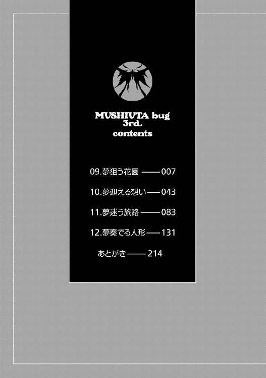
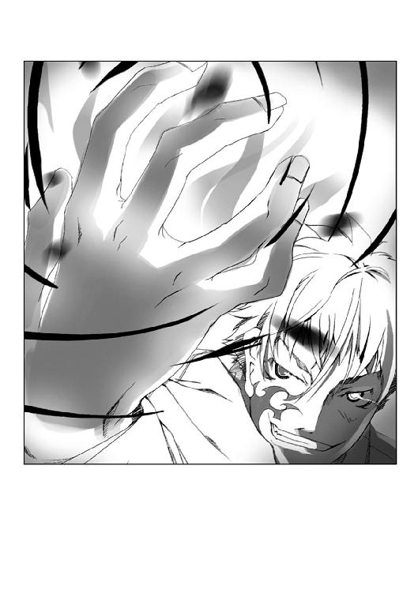

| ムシウタ ｂｕｇ ３ｒｄ．夢狙う花園 | |
| 岩井恭平 | |
| KADOKAWA / 角川書店 (2014) | |
ムシウタｂｕｇ
３ｒｄ．夢狙う花園
岩井恭平

角川スニーカー文庫
本作品の全部または一部を無断で複製、転載、配信、送信したり、ホームページ上に転載することを禁止します。また、本作品の内容を無断で改変、改ざん等を行うことも禁止します。
本作品購入時にご承諾いただいた規約により、有償・無償にかかわらず本作品を第三者に譲渡することはできません。
本作品を示すサムネイルなどのイメージ画像は、再ダウンロード時に予告なく変更される場合があります。
本作品は縦書きでレイアウトされています。
また、ご覧になるリーディングシステムにより、表示の差が認められることがあります。

 夢迎える想い
夢迎える想い
畳の上で正座をした状態で、一之黒亜梨子は神妙な顔をしていた。
登校前の早朝である。
一之黒家本邸にある、客人用の和室。必要最低限の家具しかない殺風景な部屋の現在の主人は、居候の少年だった。
「......」
亜梨子を見下ろしているのは、彼女をここへ呼び出した張本人、薬屋大助である。ここは彼の部屋だ。
「大助さんがいない間、私はおとなしくしています」
腕組みをした大助が、亜梨子を見下ろして低い声で言った。
庭から、鹿威しが立てる音が聞こえた。
亜梨子は真剣に復唱する。
「大助さんがいない間、私はおとなしくしています」
直立不動のまま、大助が続ける。
「常に監視されていることを念頭におき、身勝手な行動をとったりしません」
「常に監視されていることを念頭におき、以下省略」
「略すな」
自分を見下ろす冷めた視線に、とうとう亜梨子は我慢の限界がきた。怒りも露わに頰をひきつらせる。
「......いったいコレは、何の冗談かしら、大助。ご主人様の私が正座で、どうして奴隷のあなたが見下ろしてるの？ なにか根本的な間違いを感じるわ」
「昨夜、説明しただろうが。花城摩理に関する調査の責任者が替わったことで、調査チームが再編成されるんだよ。だから今日は俺もそっちのミーティングに出席しないといけないんだ。お前の監視は、この前みたいに別のヤツにまかせてな」
「そんなことを聞いてるんじゃないの。あなたが偉そうなのが気に入らないのよ」
亜梨子は立ち上がろうとした。だが、大助の手が上から彼女を押さえつける。
「偉そう？ それは、こっちの台詞だ」
少年の顔にも、怒りの表情が浮かんだ。
「なんでお前は、そんなに意味もなく偉そうなんだよ！ 何かあるたびに大暴れして目に見えるもの全部、ぶっ壊しやがって！ 俺がいないうちに反省してろって言ってんだ！」
「そんなの、私のせいじゃないもの！ 大助こそプロなら上手くフォローしなさいよ！」
立ち上がろうとする亜梨子と、頭を押さえつけてさせまいとする大助。制服姿の二人が不毛なせめぎ合いを繰り広げる。
「学校の校舎一つを平気でぶっ壊すようなヤツのフォローを、どうしろってんだ！ 俺の代わりの監視者はケンカっぱやいから、ヘタしたら殺されるぞ！ 何かにつけ戦闘に結びつけすぎて、いまだに無指定から昇級できないようなヤツだからな！」
「上等だわ！ 返り討ちよ！」
「戦うなっつってんだ！」
やや亜梨子が優勢になり膝立ちになったところへ、使用人の女性が障子を開けてやって来た。「お嬢様、大助様、そろそろご登校の時間ですけれど」と言葉をさし挟む。
「どうせ中央本部に行って、あの香魚遊って子にまたぺろぺろしてもらうんでしょう！」
「バ......バカ！ お前、あの時は仕事を頼むために仕方なく......！ 今日は別に......！」
「やっぱりあの子と会うんじゃない。よかったわねー、気が済むまでぺろぺろちゅっちゅしてもらえばいいわ、エロ大助！」
「やめろ、その表現！ 俺たちに関わった以上、あいつも同席するのは当たり前だろ！」
「ぺろぺろー、ぺろぺろー」
言い合いをやめる気配のない二人を見て「......遅刻なさらないよう」と女性が静かに障子を閉じた。
１
「亜梨子ホームランっ！」
威勢の良い亜梨子のかけ声に乗って、白球が空へと舞い上が──らなかった。
ボールがミットに収まる音が、ホルス聖城学園中等部のグラウンドに響いた。
四時間目の授業、体育。亜梨子たちのクラスは、別のクラスとの合同授業によるソフトボールである。
晴れ渡った空の下、同級生がクスクスと笑う声が亜梨子を出迎える。
「ちっ、ソフトボール部がピッチャーをやるのは反則だと思うわ。はい、多賀子」
ジャージ姿の亜梨子はベンチに戻り、次の打者である九条多賀子にバットを渡した。
「素人が投げるのは危ないですから」
バットを受け取り、にっこりと笑いながら多賀子が打席へと向かった。だがすぐに球が三回、ミットに収まった。「やっぱり反則ですね」と多賀子が戻ってくる。
「一回くらい振りなさいよ、アンタ......」
亜梨子のとなりで足を組んだ西園寺恵那が、あきれ顔で嘆息した。
「とはいえ、薬屋くんがいないとやる気が出ない気持ちも分かるわ」
恵那はいつもやる気ないじゃない──その台詞が言えなかったのは、彼女に遠慮をしたわけではなかった。亜梨子の頭の上に、季節はずれのモルフォチョウが舞い降りたのだ。
銀色のモルフォチョウ。それは通常の昆虫ではない。
宿主の夢を喰い、異能の力を貸し与える〝虫〟だ。モルフォチョウはかつて花城摩理という少女に取り憑いていたが、摩理の亡き後、亜梨子へと取り憑いた。
薬屋大助という少年は〝虫〟を捕獲、隠蔽するための組織、特別環境保全事務局の局員であり、亜梨子を監視するために送られたエージェントである。
「先生は風邪とかなんとか言ってたけど、ホントなの？ 薬屋くん、大丈夫？」
「帰りにお見舞いにいきましょう」
亜梨子を見る恵那と多賀子に対し、亜梨子はひらひらと手を振ってみせた。
「仮病よ、仮病。今ごろ、あのぺろぺろ女と仲良くやってんじゃない？」
「な、なに、それ？ もしかして、文化祭で見たあの占い女のこと？」
「......今後は半径二メートル以上、大助さんに近づかないようにします」
取り乱す恵那と、冷ややかな目で顔をそむける多賀子。先日、他校の文化祭で起こった出来事、狗狸坂香魚遊に関わる事件は料理実習室のガス爆発ということになっている。
──一応言っとくけど、顔に入れ墨をした男がお前のそばに近づいてくるかもしれない。見かけたら、すぐに逃げろ。
自宅前で別れる直前、大助はそんなことを言っていた。理由をたずねると、
──そいつは、敵だ。
そう言い残し、去っていった。
「......なによ、顔に入れ墨って」
恵那と多賀子には聞こえないよう、不機嫌に呟く。
最近、亜梨子の周りで起きていることが、気に入らなかった。先日の香魚遊の件も、記憶があやふやな亜梨子に対し、何の説明もされていない。大助も口をつぐんだままだ。
親友だった花城摩理に関わる事件なのに、亜梨子は蚊帳の外。
そんな気がして、亜梨子はここのところ苛立ちが募っている。
大助に代わって別の監視者が見ていると言うが、それが誰なのかすら教えられていないことも気に入らなかった。姿が見えない人物に見張られるのは、ストレスが溜まる。
「打順きたわよ、恵那」
試合も終盤にさしかかり、ピッチャーも疲れてきたようだ。三者連続のフォアボールによって満塁になっていた。亜梨子は恵那の肩に手を掛けて押し出す。
「......はあ、それどころじゃないわ。てきとーにまた三振して、早く対策を......」
ぶつぶつと呟きながら、打席へと向かう恵那。多賀子がため息をつく。
「恵那さんは基本的になんでもできる方なのに......めったに真剣にならないのが残念です」
多賀子の言うとおり、恵那は真面目に構えすらしない。亜梨子は口に手を添え、バッターボックスの恵那に声をかける。
「おーい、恵那ー。ホームラン打ったら、大助にぺろぺろさせて上げるわよー」
「恵那ホームランっ！」
──白球が、青空へと吸い込まれた。
周囲が一瞬、沈黙に包まれる。
「......あなた、もっといろいろと真面目に生きるべきだわ......」
亜梨子の呟きと授業終了のチャイム、そして校内放送の音楽が重なった。
それは、亜梨子を呼び出す内容だった。
亜梨子を呼び出したのは、職員室にいる担任教師だった。
担任教師は「ちょっと」と歯切れ悪く言い、亜梨子を廊下へと誘導した。教師が言うには、一年前に病で他界した花城摩理の親族が訪ねてきたのだという。
「摩理の？」
問い返す亜梨子に対し、教師が渋い顔をした。なんでも海外に長期滞在していた従兄で、摩理について色々と話が聞きたいそうだ。
病弱だった花城摩理は、入学して以来、いちども登校をしていない。そのため学校側が彼女のことを知るはずもない。そこで生前の彼女のもとへ連絡表などを頻繁に届けていた亜梨子の出番となったわけである。
摩理が一人っ子だということは、彼女自身から聞いていた。ただ従兄弟がいたという話は、初耳だ。亜梨子は教師のあとについて、廊下を歩いていく。
ふと視線を感じ、廊下の先を見る。
碧い双眸と、視線が合った。
通路の角で、数人の女子生徒たちが固まって談笑していた。亜梨子と視線が合ったのは、金髪の少女だった。見憶えのある人物だ。
最近、日本に帰ってきたという帰国子女の生徒である。欧州のどこかとのダブルで美人ということもあって、ミーハーな恵那に誘われて本人のクラスまで見に行ったのだ。
金髪の少女は、しかしすぐに亜梨子から目を離した。「白樫サンが？ いいえ、彼女とは話したこともありませんデス」と微妙におかしい日本語で友人と語り合っている。
「......」
なんとなくその少女が気になったものの、教師に促されて歩を速める。
到着したのは、進路指導室だった。教師が「終わったら呼ぶように」と言って立ち去っていく。
亜梨子は、入り口の前に立った。
摩理の従兄。──亜梨子は摩理の血縁者と面と向かって話すのは、これがはじめてだ。彼女の葬式や一回忌でも、彼女の親族は亜梨子にまるっきり関心がなかった。
どんな人物なのだろう。
控えめでおとなしかった摩理の親戚ならば、やはり似ているのかもしれない。──そんな想像をしながら、亜梨子は扉を開けた。
「よう」
指導室の中にいた人物が、こちらを振り返った。
亜梨子は、言葉もなく立ちつくす。
部屋の中にいたのは、亜梨子よりも二、三歳ほど年上に見える少年だった。すらりとした長身と鋭角的な顔つきは、同年代の男子の中でも目を引くにはじゅうぶんだろう。怪我をしているのか、右頰に大きな湿布を貼っている。着ているのはどこかの高校の制服だろうか、刺繡が施されたブレザーだ。
「お前が一之黒亜梨子ってヤツか？ 摩理と友達だったっていう」
「......」
「あー、でもこの学校の教師どもはダメダメだな！ 摩理の話になると、どいつもこいつも嫌な顔をしやがって。寄付がっぽり、でも出席ゼロっつーどう扱っていいのかわかんねー生徒だったにしろ、責任ってもんがあるだろ。なあ、そう思わねーか？」
同意を求められ、亜梨子は額に手をあてた。彼の言い分には亜梨子も同感だが、今はそれよりもよほど気になることがあった。
「......まず、あなたがどうしてそんなところに張りついてるのか、知りたいわ」
「ああ？ あー、これな。いやよくテレビとかで見ねー？ 盗聴器とか盗撮カメラとか、よくこーゆーところに仕込まれてるらしいぜ。なかったけど」
彼──なぜか壁をよじのぼり、空調の穴をのぞきこんだ状態の人物が、さも当然のように言ってのけた。
想像していた人物像からあまりにかけ離れた姿に、亜梨子は脱力する。
「こんなのが、摩理の従兄......ていうか最近、変人ばかりよく会うわ......」
「俺は、世果埜春祈代」
壁から飛び降り、少年が名乗った。亜梨子は眉をひそめる。
「セハテノ......？」
ポケットに手を入れて笑う少年は、先ほどまでの奇行が噓のように威風堂々としていた。ここまで自信たっぷりに言われると、そうなのかと納得してしまう。
「扉を閉めろ」
ニヤリと笑い、春祈代が言った。急に鋭くなった目つきに、亜梨子は一瞬、驚く。
振り返ると、偶然通りかかったのか、先ほど見た金髪の少女が進路指導室の前を横切っていく。碧い瞳が、チラリとこちらを見た。
扉を、閉める。
春祈代という少年が、一変して陽気な笑顔を取り戻した。長机の上に飛び乗り、あぐらをかいて子供のように目を輝かせる。
「さあ、教えてくれよ。あいつの──摩理のことを」
亜梨子は戸惑いつつも、自分が知っている摩理についての話をはじめた。
病弱で中等部に入学してからは、いちども登校したことがなかったこと。最初はなかなかうち解けてくれなかったが、次第に心を許してくれるようになったこと。登校する日を待ち望み、勉強をはじめていたこと。
ただ一点、彼女が虫憑きであったことを除いて、包み隠さず話す。そもそも彼女が虫憑きだったことを亜梨子が知ったのは、彼女の死後のことだ。
話を聞き終えた春祈代の表情には、しかし満足した様子は見えなかった。頭をかきながら、思いついたように亜梨子にたずねる。
「あいつの日記は？ お前が持ってるのか？」
「日記？」
摩理が日記をつけていたという話は、初耳だった。
「あいつは日記をつけていた。それは間違いないんだ。その様子だと、お前は持ってないみたいだな。病室にはなかった。......あいつの自宅か。両親が持って帰りやがったな」
春祈代がぶつぶつと独り言を呟きだした。亜梨子は眉根を寄せる。
「間違いない、って......どうして、そんなことが分かるの？」
「あいつの一番、近くにいたヤツから聞いたからな」
「一番、近くにいたヤツ......？」
「そのことも日記に書いてあるかもな」
言い放ち、春祈代が長机から飛び降りた。用は済んだとばかりに、入り口に向かって歩き出す。
困惑顔の亜梨子とすれ違う時に、ニヤリと笑う。
「よく分かった。──お前が、あいつに関して何も知らないってことがな」
「！」
「じゃあな、一之黒亜梨子」
立ち去ろうとする少年を振り返り、亜梨子は彼の肩をつかんだ。
「私は──」
振り返った世果埜春祈代を、真正面から睨みつける。言い返したかったが、言葉が出なかった。肩をつかむ手に力を込める。
そう、亜梨子は摩理について知らないことが多すぎる。摩理が虫憑きだったということすら、彼女自身から聞かされることは最期までなかった。
「悪くねーな、その目。あの野郎を謝らせるだけのことはあるってことか」
春祈代が亜梨子の手を振り払い、笑う。あの野郎、というのが誰のことなのか、亜梨子には分からない。
「勘違いすんなよ。何も知らないってのは、それだけ摩理がお前のことを大切に思ってたってことだろうぜ。〝ヤツら〟はそういう性癖なんだ、気にするな」
意味ありげな笑みを残し、少年は扉を開いて指導室から出て行ってしまった。
「摩理の......日記」
取り残された亜梨子は、唇を嚙んだ。
２
携帯電話の時刻表示を見ると、すでに午後九時を回っていた。
コートに身を包み、白い息を吐きながら、亜梨子は玄関口のインターフォンを押した。
「摩理さんの友達で、一之黒亜梨子といいます。夕方も、うかがったのですが──」
亜梨子の頭の上では、銀光を放つモルフォチョウが舞っていた。夜空に浮かぶ星が一つだけ動いているような錯覚をおぼえる。
『申し訳ございません。家の者が居りませんので、お通しすることはできません。今日のところはお引き取り願えますでしょうか』
インターフォンから聞こえた返答は、学校帰りに立ち寄った時と全く同じだった。
「いつ来ても居ない人間は、家の人間とは言わないのよ」
マイクから口を離し、亜梨子は不機嫌に言う。これまでにも何度か訪れたことがあったが、応対が変わったことは一度もなかった。
花城摩理の自宅は、大きな和風の屋敷だった。赤牧市のやや外れ、畑や田んぼがちらほらと見える郊外にある。高い塀で囲まれた敷地は、亜梨子の自宅よりも広いだろう。
花城家は、高名な華道の家元として知られている。政財界にも弟子は多く、稽古がある日には敷地内にある道場に通っていると摩理は言っていた。
「そして居ない人間は、私を止めようがないのよ」
大助が聞いていたら叩かれそうな言葉を呟きながら、亜梨子は周囲を見回した。
人の気配がしないことを確認し、塀づたいに歩く。端が見えたあたりで立ち止まり、塀を見上げる。
反動をつけ、亜梨子は跳躍した。塀の上部をつかみ、一気にのぼる。
「......っと。不法侵入完了」
敷地内に飛び降りる。灯籠が置かれた大きな池の向こうに、大きな屋敷が見えた。道場のようだ。低い屋根の向こうに、本邸らしき建物と透明な壁に囲まれた建築物がある。
どうしても家に入れないというのなら、実力行使だ。摩理は怒るかもしれないが、このまま世果埜春祈代という少年の言った通りになるのがイヤだった。
──何も知らない。
そう、亜梨子は行動を起こさないかぎり、摩理についてこれ以上知ることはできない。
摩理が書いたという日記があるというのならば、亜梨子はどうしてもそれが見たかった。
「摩理の部屋は......」
茂みから出る亜梨子についてきたモルフォチョウが、頭上で銀色の光を放った。
「なに？ どうしたの？」
モルフォチョウの異変に驚く亜梨子の耳に、ハイトーンの声が飛び込んだ。
「監視対象の住居侵入を確認。危険行為と判断する」
夜闇に包まれた池の上に、白い人影が佇んでいた。──幽霊かと思って寒気をおぼえたが、違った。それは真っ白なロングコートに身を包んだ金髪の人物だった。
「〝霞王〟はこれより、捕獲行動に移る」
池の上に立った少女が、歪んだ笑みとともに言った。
「あなた──」
昼間、亜梨子と目が合った帰国子女の少女だ。ゴーグルで顔を隠しているが、特徴的な高い声と金髪でそれと分かった。
「〝かっこう〟と真正面からぶつかったことがあるって聞いた時から、てめぇとは戦ってみたかったんだ」
学校で見かけた時とはまるで異なる口調で、〝霞王〟が言った。少女は黒い霧のようなもので包まれ、それが彼女を水上で支えているようだ。
「あなたが、大助の代わりの監視者ってわけね。もしかしてとは思ったんだけど......普段から目立たない努力をしてる大助と違って、とにかく目立つから違うと思ってたのよ」
呻き、後退る亜梨子。
「いいんだよ、監視班につくのなんてコレが最初で最後だろうからな」
水面に波紋が生まれた。霧が移動し、少女をこちらへとゆっくり運ぶ。
「てめぇに関する情報は監視者にまわってくるようになってるからな。花城摩理の従兄とやらが何者か知らねえが、お前と二人で会わせれば面白いことになるかもしれねえと思ったんだ。案の定、てめぇと戦う良い口実ができたぜ」
ニヤリと笑う少女はすでに臨戦態勢だ。なるほど、確かに大助が言っていた通り、戦うことが好きでたまらないといった様子である。
亜梨子はとっさに考える。
このまま塀の外へ逃げる......？ ──いいえ、ここまで来て引き下がれるものですか！
「っおらあっ！」
男のような雄叫びを上げ、〝霞王〟が亜梨子に躍りかかった。体を包む霧の形状が変化し、無数の爪となって襲いかかる。
亜梨子はとっさに横に跳び、攻撃をかわした。爆発が起きたように、霧で作られた爪が塀の一部と地面を吹っ飛ばす。
「言っとくが、戦闘力だけならオレ様は〝かっこう〟にも負けねえぜ」
あまりの威力に絶句する亜梨子に対し、〝霞王〟が愉快そうに笑う。
亜梨子の頭上から、爪が振り下ろされる。
「くっ......！」
無意識に亜梨子は、そばに立っていた樹の枝をつかんだ。
銀色の光が弾けた。
空から舞い降りたモルフォチョウが枝にとまり、弾けるようにして同化したのだ。亜梨子の手に、銀色の槍が生まれた。
「うおっ！」
亜梨子が槍を一閃すると、たちまち目を覆うような銀の鱗粉が〝霞王〟を包んだ。
爆発が起こり、地面ごと霧の爪を吹き飛ばす。だが──。
「......なるほどな」
大きくえぐられた地面の上で、黒い霧で身を包んだ〝霞王〟が笑んでいた。大助以外では初めて、正面から攻撃を受け止められていた。亜梨子は目を見開く。
「槍そのもので物理攻撃、それに鱗粉で特殊型の〝虫〟でも攻撃できるってわけか。......こいつは思ったより、楽しめそうだ」
愉しげに笑い、〝霞王〟が亜梨子に襲いかかった。無数の爪を、亜梨子はかたっぱしから弾き飛ばしていく。
「槍の扱いも、悪くねえな！」
物心ついた頃から仕込まれている武芸の腕も、〝霞王〟にとっては喜びでしかなかったようだ。手数の差で、亜梨子は池の縁へと追いつめられていく。
「......うっ！」
亜梨子の着たコートを、爪がかすめた。亜梨子は踵を返し、池を回り込むように走る。
「おいおい、逃げる気か？」
道場の横を駆ける亜梨子を、背後から〝霞王〟が追走する。
亜梨子の目的は、あくまで摩理の部屋だ。
〝霞王〟を倒すことではない。
かといって、やりすごすには〝霞王〟は強すぎた。これまで出会った虫憑きとは違い、明らかに純粋な戦闘に秀でた能力である。
次々と爪で地面を吹き飛ばしながら追ってくる〝霞王〟を、亜梨子はかろうじて牽制しながら走っていく。すると目の前に、大きな建物が現れた。
コンサバトリー──家庭用温室というにはあまりに大きい、屋内型のガーデンルームだ。温室の植物園とも言う。壁が一面、合成樹脂の透明なプラスティックで覆われている。
そう言えば、摩理から聞いたことがある。花城家では生け花に使う植物を、自宅で栽培しているという。
「よそ見してる余裕があんのか？」
背後からかかった声に、我に返る。
襲いかかった爪を、反射的に銀色の槍で受ける。銀色の鱗粉が弾け、亜梨子はガーデンルームの壁に叩きつけられる。
「うっ！」
「たしかに、その〝虫〟は強力だな。......だが、お前自身は結局、ただの人間だ」
〝霞王〟が亜梨子に歩み寄る。
「お前自身と〝虫〟が同化してないから、完全に力負けしてるじゃねえか。〝かっこう〟みたいな体力でそいつを振り回されたら、さすがにヤバかったけどな」
亜梨子は槍を支えにして立ち上がった。周囲を見渡し、壁にそって備え付けられた非常階段を見つける。地面を蹴り、亜梨子は階段に向かった。
「どこへ行っても、ムダだっつーんだよ！」
霧を纏った〝霞王〟が追いかける。
階段をのぼっていくと、屋根の上に出た。温室は天井もプラスティック張りになっており、足元に色鮮やかな植物たちが見えた。
ドクン、と手に持つ槍が胎動したように感じた。温室を見下ろした亜梨子の脳裏に一瞬、建物の構造が浮かんだ。
はじめて見た屋内型植物園。
それなのに、亜梨子にはその内部構造が手に取るように分かる──。
「待ちなさい」
両手で槍を握りしめ、亜梨子は〝霞王〟に向かって鋭く言い放った。
「ああ？ 待ったはナシだぜ。いい加減、騒ぎを聞いて人が来るだろうからな」
夜空の下、二人の少女が間近で向かい合った。足元のプラスティックが室内の照明を反射して、キラキラと輝いていた。
「私は、あなたと戦うつもりはないわ。大助の仲間なんでしょう？」
「オレ様は戦うつもりなんだよ。負けそうだからって、時間稼ぎはさせねえぜ」
「だったら、場所くらい選びなさい」
亜梨子の言葉の意味が、〝霞王〟には分からなかったようだ。
「てめえ、何言って──」
「ここは戦うための場所じゃないって、言ってるのよ！」
くるり、と亜梨子の腕の中で槍が回転した。足元に向けて、一気に槍を突き立てる。
銀色の鱗粉が吹き荒れた。足元を支えていた透明なプラスティックが砕け散る。
「くっ......！」
「てめえ......！」
プラスティックの破片とともに、二人は屋内へと落下した。
「あうっ！」
落下の衝撃で、亜梨子の息が一瞬つまった。
土の匂い、それ以上の植物のむせかえるような匂いが、鼻腔を刺激した。地面に叩きつけられた亜梨子のクッションとなったのは、色とりどりの花々だった。
顔を歪めて立ち上がった亜梨子を、一面の花園が迎えた。
──家はあまり好きじゃないけど......あそこだけは、とても綺麗で好きなの。
このガーデンルームのことを話していた時、摩理は珍しく心から嬉しそうに笑っていた。
温室の照明に照らされた鮮やかな光景が、亜梨子の意識を一瞬だけ混濁させる。
「そう、摩理は......」
ドクン、とまた槍が胎動した。
天井から降り注ぐプラスティックが、照明を反射して光り輝く雨と化していた。
「〝私〟は、ここが好きだった......」
「なにワケのわからねえこと言ってやがる！」
「──......！」
〝霞王〟の怒声で、亜梨子はハッと我に返った。自分が何か言ったような気がしたが、おぼえていない。
亜梨子は槍を振りかぶった。
「なっ......！」
槍を横に一閃すると、地面に咲き誇っていた花がいっせいに舞い上がった。
吹き荒れる花びらが〝霞王〟の視界を奪う。
亜梨子はとっさに後ろに走った。そこには亜梨子が〝知っていた〟通り、背の高い植物が生えていた。小柄な彼女が身を隠すにはじゅうぶんな高さだ。
「......くそがっ！ どこいきやがった！」
背後から〝霞王〟の罵声を聞きながら、亜梨子は温室をあとにした。
３
花城摩理の自室の窓の鍵は、開いていた。
カラリと音を立てて開いた窓から、靴を脱いだ亜梨子はそっと室内へ足を踏み入れる。
「ふう......」
〝霞王〟をやりすごした後、亜梨子はそのまま本邸へと向かった。外からしらみつぶしに窓をのぞき、摩理の部屋らしき場所を見つけたのだ。
騒ぎに気づいた使用人たちの声が、温室のほうへと向かっていくのが聞こえた。
「勝手に入ってゴメンね、摩理」
笑みを浮かべ、亜梨子は部屋を見渡した。
明かりをつけるわけにはいかないため、光源は庭から届く照明しかない。だが薄暗い室内が、二人が何度も会った病室とは違い、年相応の少女らしいものであることが少し嬉しかった。広い部屋のいたるところに、ぬいぐるみが置かれている。
生前のままにしてあるのだろう。人の匂いは消えていたが、どことなく生活感のなごりがあった。
ここで、摩理が生活をしていた。
確かな感触をおぼえ、亜梨子はますます嬉しくなる。
だが、ぼうっとしている時間はなかった。いつ誰がやって来るとも分からないのだ。見つかる前に目的を果たさなければならない。
罪悪感をおぼえつつも、亜梨子は摩理が使っていたと思われる机をさがした。
日記帳は、すぐに見つかった。あの温室に生えていたものだろうか、小さな花を和紙に添えたしおりが挟んである。
友達の日記を勝手に見る、という行為に躊躇う。だが、そんな亜梨子の肩に、銀色のモルフォチョウがとまった。輝く翅が、優しく頰を撫でる。
摩理に許してもらえたような気がして、微笑む。ゆっくりとページをめくる。
「え......？」
開いたページを見て、思わず驚きの声をもらした。次のページ、またその次とめくっていく。しかし──。
「なにも書いてねーんだろ」
熱風が、背後から吹き込んだ。
「......！」
振り向くと、一人の少年が開いた窓に座っていた。折りまげた膝の上に腕を載せ、じっと亜梨子を見つめている。
世果埜春祈代だ。
だが昼間、学校で会った彼とは、雰囲気が一変していた。真剣な顔で亜梨子を睨む。
「〝霞王〟と戦って、花園を見て、この部屋に来た、てめーに訊くぜ」
熱い。
錯覚かもしれない。だが、窓際に座る少年から、異様な熱気を感じた。呼吸をする喉まで灼かれるような感覚に陥り、亜梨子は全身を強ばらせる。
「──てめーは、誰だ？」
質問の意味が、分からなかった。
だが春祈代に、冗談を言っている様子は見えなかった。亜梨子は、はっきりと答える。
「一之黒亜梨子よ」
「......そうか」
直後、部屋を支配していた熱気が霧散した。
少年の表情に一瞬、翳りが落ちたように見えた。昼間も、そしてここでも堂々と胸を張っていた彼の顔に、寂しさのような感情が横切っていた。
再び顔を上げた春祈代は、しかし昼間のようにニヤリと笑った。
「今回は失敗だったみてーだな。だがお前自身も意外と面白そうだ、一之黒亜梨子」
「失敗、ですって？」
「あの〝霞王〟とやらが好戦的なのは、知ってた。だからあえて、ヤツがお前と戦うように仕向けた。──お前の中の、花城摩理と会うために」
亜梨子は、目を見開いた。
「俺も最近、ようやく探り出したんだがな。狗狸坂香魚遊とかいうヤツの能力で、そのモルフォチョウの記憶を掘り起こした時、お前は〝花城摩理〟になってたんだよ」
「私が......摩理に......？」
そんなこと、亜梨子は知らなかった。
亜梨子が摩理になっていただなんて、大助からは一言も聞かされていない。
だが、先ほどの花園での出来事。
はじめてここにやって来たはずなのに、亜梨子はコンサバトリーの内部構造をはっきりと知っていた──。
「お前が危険な状況に追い込まれれば、また花城摩理が出てくると思ったんだがな。そううまくはいかねーもんだ」
「......あなたこそ一体、誰なのよ？ 摩理の従兄だなんて、ウソでしょう」
「花城摩理に片想いをしてる男。──実際に会ったことは、一度もねーけどな」
言い、悠然と笑う春祈代。亜梨子は彼が座る窓を見て、次に手元の日記帳へ視線を落とす。
「窓の鍵を開けておいたのも、あなたね。......この日記は、私を誘うためのニセモノだったの？ あなたの作り話だったのね」
「いいや。それは間違いなく花城摩理のもんだ。日記を持っていたことは聞いてたが、内容までは知らなかったからな」
「中を見ていないの？ 私より先にここに来ていたはずなのに？」
「俺はただの他人だ。親友だったお前が、まずはそれを見るべきだと思ったんでな」
「ヘンなところで律儀なのね」
「ウソはつかねーし、筋は通す。ただし──」
春祈代がニヤリと笑った。彼の全身から、再び熱気が迸ったように感じた。
「手段は選ばねーがな」
亜梨子は拳を握りしめた。
大助は本当のことを、亜梨子には語らなかった。〝霞王〟はわざと彼女を春祈代と二人で会わせ、春祈代はそれを逆手にとって自らの目的を果たそうとした。
全ての中心に、亜梨子と摩理がいる。
だが当の亜梨子は、何も知らない。自分の知らないところで、それぞれの思惑が交錯している。──そのことが、亜梨子には気に入らなかった。
「もしお前自身が虫憑きになってたら、間違いなく分離型だったな。ヤツらは感情的で、バカがつくほどお人好しだ」
怒りを露わに睨みつける亜梨子を見て、春祈代がおかしそうに言った。部屋を見回し、皮肉げに笑う。
「だが同化型は、普段は人畜無害の一般人のクセに、本性は残酷で容赦ってもんがねーんだ。自分の気持ちは決して誰にも見せようとしねー。......だから、ヤツらとつきあうにはそれなりの覚悟がいるんだ」
彼の言葉を聞き、思い出す。
「俺が話を聞いた男も、花城摩理が日記を買ったのは知っていたが、実際に日記を書いているところは見たことないっつってたからな。弱い部分をさらすのがイヤだったんだろ。たとえそれが自分だけの日記だとしてもな。──それとも、書きとめるほどのこともない退屈な毎日を送っていたか、な」
いつもおとなしくて、控えめだった摩理。だがもし、今まで耳にした〝ハンター〟という人物が摩理と同一人物だったとしたら。
──大助と、似ている。普段はおとなしいが、特環の任務となると冷徹な少年。
二人は、同じ同化型の虫憑きだ。
「......昼間も言ってたわね。あなたが話を聞いた男っていうのは、いったい誰なの？」
少年を見据え、問いかける。
「それは──」
目を細め、春祈代が口を開こうとした時だった。彼の頰を、黒い霧がかすめた。
「やっぱりここだったかよ！ オマケ付きみてえだけどな！」
〝霞王〟だ。
「てめぇは昼間の、花城摩理の従兄だとかいってたヤツだな。どんな手を使ったか他の監視者の尾行をまいたそうだが......今はてめぇは関係ねえ！ さっさと消えねーと、次は威嚇じゃねえ、本当に殺すぜ！」
黒い爪がかすめた春祈代の頰から、真っ二つに切り裂かれた湿布が舞い落ちた。
「特殊型の虫憑きの話を、忘れてたな。特殊型はみんな、こういう歪んだヤツばかりだ」
笑みを浮かべた少年の頰には、炎をかたどった入れ墨が施されていた。
顔に入れ墨──大助が敵と言った人物の特徴だ。〝霞王〟の反応。つまりそれは、特別環境保全事務局の敵ということ。
最初に進路指導室で会った時にあれほど警戒していたのは、彼が逃亡者だから──。
「俺たちみてーにな。なあ、〝霞王〟？」
亜梨子の視界が、深紅に染まった。
〝霞王〟に向かって伸ばした春祈代の腕から、爆発的に炎が拡散したのだ。炎は一瞬にして窓の外、広い庭を吞み込んでいた。
「うおおっ！」
夜空を突き抜けるように立ち上った炎の渦が、異形の〝虫〟と化していた。火炎の柱に包まれた〝霞王〟が、自らを凝縮した霧で護る。
こいつも、虫憑き......！
亜梨子は息をのんだ。春祈代もまた、虫憑きだったのだ。しかもあれほど亜梨子が苦戦した〝霞王〟が、あっという間に翻弄されてしまっている。
熱風に髪をなびかせながら、戦慄する。
これほど強力な虫憑きを、亜梨子は未だかつて見たことがない──。
「この炎に、頰の入れ墨......てめえが、青播磨島にいたヤツか！ さんざん逃げ回った挙げ句に本部をぶっ壊しやがってまた逃げた、クソ野郎......！」
懸命に自らの身を護りながら、〝霞王〟が顔を歪めていた。
「こいつは、俺が相手しといてやるぜ。お前はさっさと逃げろ」
振り返り、春祈代が不敵に笑った。
「これからは、競争だぜ。お前と俺──どっちが先に、花城摩理を見つけ出すかだ」
摩理を、見つけ出す。
そう、亜梨子はそのために、ここまでやって来たのだ。虫憑きと戦い、摩理の残したものを追いかけて、ここにたどり着いた。

世果埜春祈代という眼前の少年が何者なのか、分からない。特別環境保全事務局という組織が何を企んでいるのかも分からない。
だが、摩理が何を考えていたのか。彼女の夢とは何だったのか。
一番、最初にたどり着くのは他ならぬ亜梨子だ。
「のぞむところよ」
はっきりと言いはなった彼女を見て、春祈代が愉しそうに笑んだ。
４
朝日が降り注ぐ部屋で、薬屋大助が腕を組み仁王立ちしていた。
畳の上で正座をした亜梨子は、真剣な顔で彼を見上げる。
「どうしようもないバカでごめんなさい、許してください、大助さん」
押し殺した口調で大助が言った。その表情は、あふれ出さんばかりの怒りに満ちている。
庭から、鹿威しの小気味良い音が聞こえた。
「......どうしようもないバカでごめんなさい、許してください、大助さん」
亜梨子は、復唱した。
大助が不機嫌に続ける。
「もう二度と大助さんの命令に逆らいません。一生、言うことを聞き続けます」
「......ねえ、それってあんまりだと思うわ、いくらなんでも」
亜梨子の抗議を、大助は黙殺した。じっと亜梨子を無言で見下ろす。亜梨子は唇を尖らせ、渋々と繰り返す。
「......もう二度と大助さんのごにょごにょ」
「ちゃんとはっきり言え」
ついに大助がブチギレた。亜梨子の頭を、がしっと上からわしづかみにする。
「言ったそばからお前は......花城家に不法侵入した挙げ句、監視についてたヤツと戦うなんてなに考えてんだ！ おまけにあの入れ墨野郎と接触してただと？ 今回は監視してたヤツにも問題があったからなんとか言い逃れができたけど、二度目はないからな！ ──つーか無指定で簡単な特徴しか知らされてなかったとはいえ、わざと二人で会わせるなんて、あのバカ〝霞王〟......」
後半は〝霞王〟に対する罵倒になっていたが、すぐに大助は亜梨子に向き直った。
「入れ墨野郎と何を話した？ 全部、この場できっちり吐けよ、こら！」
「大助だって、私に隠し事してるじゃない」
亜梨子は顔をそむけ、呟いた。
先日、狗狸坂香魚遊の件で彼女が暴走したことを、大助は黙っていた。春祈代の言うことが真実ならば、納得がいかないことだ。
だが大助は、彼女が思っていた以上の動揺を見せた。なぜか頰を紅潮させる。
「なっ......バ、バカ！ 香魚遊とは今回は別に......な、なにもなかったぜ......？」
ピクリ、と亜梨子は片眉を持ち上げた。
頭を押さえた大助の腕から、力が抜けていた。亜梨子はゆっくりと立ち上がる。
「誰もそんなことは聞いてなかったんだけど......詳しく、聞きたいわ。しかも、どうして微妙に弱気になってるのかしら」
「う、うるせー、バカ！ バカ亜梨子！」
「いったい、なにがあったのよ！ 吐きなさい、エロ大助！ ......ぺろぺろなの？ またぺろぺろなのね？」
つかみ合って騒ぐ二人のもとへ、「そろそろご登校の時間が......」と障子を開けて使用人が現れ──二人の様子を見て、何も言わずに再び障子を閉めた。
「責任......とってくれるよね？ ね？」
「......」
「......」
一之黒邸の重い門を開け、敷地を出たところだった。
早朝。
いつものようにホルス聖城学園へと登校すべく、一之黒亜梨子と薬屋大助は家を出た。
そんな二人を待ちかまえていたのは、今にも消え入りそうな涙声だった。
「ねぇ？ 聞いてるのぉ？ まさか、忘れちゃったんじゃないよね？」
しかし声はすれど、姿は見えない。
亜梨子と大助は周囲を見回して、ようやく声の主を見つけた。
一之黒邸の正門前から、数えて二つめの電柱。
柱の陰から顔を半分だけ出し、こちらを恨めしそうに見つめる少女がいた。おそらく高校生くらいだろう。短く切り揃えた黒髪はゆるやかなウェーブを描き、メガネをかけている。
「なんとか言ってよぉ。ねぇってばぁ」
上目遣いにした瞳には、大粒の涙が浮かんでいた。素早く電柱の陰から飛び出したと思いきや、亜梨子たちの目の前にある電柱にまた隠れてしまう。
「ねえ、〝かっこう〟くんってばぁ」
柱の陰から半身を出し、少女が指先で大助の肩に触れた。大助はビクリと体を硬直させ、少女の腕を乱暴に振り払う。
「うわぁ！ さ、触んな！」
少女はショックを受けたようだ。下唇を嚙んだかと思うと、柱の陰に完全に隠れてしまう。
「うぅ......ひどい......私に、あんなことをしたクセに......それも誘ったのは〝かっこう〟くんのほうなのに......」
電柱の陰から、嗚咽だけが聞こえる。
「う、うぜー......な、なんだ、お前？」
青ざめる大助の頭上に、一匹の蝶々が舞い降りた。
碧く輝く菱形の翅を持った蝶だ。ヤマトカギバという蛾に似ているが、本物の昆虫なら冬のこの時期に現れるはずもない。
──〝虫〟という存在がある。
人に取り憑き、宿主の夢を喰って成長する異形の怪物だ。〝虫〟に取り憑かれた人間は虫憑きと呼ばれ、存在が公表されていないにもかかわらず、噂の範囲内で嫌悪の対象となっている。
薬屋大助は、〝虫〟を捕獲し、隠蔽するための組織、特別環境保全事務局の局員である。
「いや、待てよ。その声......お前、まさか、氷飽市の？ たしか、日下部倫花とかいう」
何かを思い出したのか、大助が嗚咽の聞こえる電柱へと近づく。
「だから〝かっこう〟くんに責任をとってもらおうと思ったのに......うぅ......憎い......」
「......」
無言で鞄を握りしめる亜梨子の肩にも、蝶々がとまった。少女の蝶々とは異なり、銀色の輝きを放つモルフォチョウだ。亡き親友から受け継いだ〝虫〟である。
「ああ、亜梨子は知らないよな。こいつは日下部倫花っていって、氷飽市で──」
振り向いた大助の顔面に、亜梨子の全体重をのせた革製の鞄がめりこんだ。
１
登校路にある公園。
小さなベンチに座った亜梨子は、目の前に立つ大助を見上げていた。
「日下部倫花、氷飽市に住む高校一年生。俺がこの赤牧市に来る前、桜架市に逃げ込んできたのを捕まえて中央本部に引き渡した」
これまで見た中で一、二位を争う不機嫌な顔で大助が説明した。亜梨子の鞄は思った以上にダメージを与えたらしく、彼の鼻にはティッシュがつまっている。
特別環境保全事務局、通称、特環は地域ごとに管轄が分かれている。亜梨子が住む赤牧市や、となり町の氷飽市は中央本部。その先にある桜架市は、彼がもともと所属していた東中央支部の管轄にあるそうだ。
「痛そう、大丈夫？ 私のせい？ 私のせいなのかなぁ？ 痛い？ ねぇ、痛い？」
倫花の声は、亜梨子の前方、公園に隣接した雑木林から聞こえた。よく目を凝らすと、林の中で木に隠れた少女の姿があった。
「痛いに決まってんだろ！ つーか、隠れてないでこっちへ来い！」
「いやぁー！ やだやだぁ！ そんなムリヤリにひどいことしないでぇー！」
「あああ、ウゼーな！ それとその誤解を招く言い方をやめろ！」
「うぅ......またウザいって言われたぁ......」
大助が倫花の腕をつかみ、力ずくで林の中から引っ張り出す。
亜梨子はそんな彼らのやりとりを見て、冷笑を浮かべた。
「へえー。そのときに、あなたは彼女に対して過ちをおかしたわけね。......死んで償ってあげたらいいんじゃない？」
「亜梨子......お前、なにを勘違いしてるのか知らねーけど、その目はやめろ......」
「欠落者になりたくないって私が言ったら、〝かっこう〟くんが特環に入れば助かるって誘ってくれたじゃない。忘れたの？ 忘れてないよね？ 忘れてたら、メッだよ？」
倫花が落ち着かない素振りで、キョロキョロと辺りを見回した。すぐそばの街灯を見つけ、陰に身を隠す。だが当然、体を隠しきれるはずもなく、そわそわとした様子で亜梨子たちを見つめている。
「なるほど。経緯は理解したわ」
倫花が言う〝大助が彼女にしたこと〟とは捕獲したことであり、〝誘った〟とは特環に入局をすすめたということだったようだ。
「それで責任っていうのは、どういうこと？ とりあえず大助が死ねば解決するのね？」
「なんで俺をそんなに殺そうとするんだよ！ ぜんぜん理解してねーだろ、お前！」
怒声を上げ、大助が倫花を睨んだ。
「そもそも責任なんて、知ったことじゃねーんだ。俺は今までに虫憑きを何人も欠落者にしてきたし、同じくらい捕獲して収容施設に送り込んだ。今さらお前に恨まれたところで、関係ないね。それとも......」
少年の顔つきが、一変した。挑発的な笑みを浮かべ、倫花に歩み寄る。
「復讐しにきたっていうのなら、相手になってやるぜ。三秒で終わらせてやる」
「ちょっと、大助──」
「復讐？」
しかし、倫花はきょとんとした顔だ。すぐに慌てた顔で、首を左右に振る。
「ちっ、違っ......！ そんな怖いこと......！ 第一、〝かっこう〟くんには全然かなわなかったし、痛いのイヤだし！ 〝かっこう〟くんもイヤでしょ？ それとも好き？」
「あー、もう、ウゼーな！ じゃあ、なんだよ！ さっさと話せよ！ 学校がはじまっちまうだろ！」
「と、友達を作りたくてっ！」
「......はあ？」
「〝かっこう〟くんに捕まっちゃったせいで、学校に行けなくなっちゃったし......それに私ってちょっと人見知りが激しいから......」
「その状態でよく、〝ちょっと〟とか言えるな、お前」
「だ、だからっ！ 中央本部でも友達を作れなくて......それで〝かっこう〟くんに友達を作るのを手伝ってもらおうと......」
あたふたと身振りをまじえながら、倫花が説明する。自分を捕まえた敵である大助に対しても、まるで警戒心がない。
大助が、倫花の襟をつかんだ。
「撃ち殺されたくなかったら、さっさと本部に帰れ」
「いやぁー！ やだやだぁっ！ 友達、作るの手伝ってよぉ！ 私に友達ができないような体にした責任とってよぉ！」
「だから人聞きの悪い言い方をするな！ 絶対、わざとだろ、お前！」
少女を引きずって追い出そうとする大助を、亜梨子は慌てて止めに入る。
「ま、まあ待ちなさいよ、大助。せっかく頼ってきたのに、追い出すのは可哀相だわ」
「私って、ウザい？」
「え......？」
「そんなに私、ウザいかなぁ？ そんなことないよね？ ねぇ？」
街灯にしがみついた倫花が、上目遣いで亜梨子を見た。涙目で街灯の陰からこちらを凝視する姿に、亜梨子は無意識に目をそらす。
「えーと......だ、だいじょうぶよ！ なんとか許容範囲内だと思うわ！ ......たぶん」
「うぅ......否定してくれない......」
「お前、勘違いしてないか？」
大助が冷淡な口調で、言いはなった。
「俺たちは、虫憑きなんだ。生きてるだけで、周りに不幸をまき散らすしかない存在なんだよ。そんな俺たちが、友達だと？ そんなもん作ったって、不幸が増えるだけだ」
倫花が、ハッと息をのんだ。何かを言いたそうに口を開くが、涙ぐんで俯いてしまう。
「分かったら、おとなしく本部に──」
言いかけ、大助が驚いた顔で倫花から身を離した。紙一重で、ブンッという唸り声を上げて亜梨子の鞄が空を切る。
「虫憑きだから友達ができないだなんて、そんなわけないでしょう！」
鞄を構えながら、亜梨子は大助を睨む。
「私は虫憑きだった摩理と、友達だったわ！」
花城摩理。
亜梨子に自らの〝虫〟を託し、この世を去った少女。薬屋大助が亜梨子と行動をともにしているのは、亜梨子自身を監視するためだけではない。花城摩理というイレギュラーな虫憑きの調査のためでもある。
「ハッ、どうだかな」
大助が、嘲笑を浮かべた。
虫憑きが普通の人間を友達と思うはずがない。その逆もまた同じ、と言う虫憑きの少女がいた。そして今、大助が同じことを言う。
亜梨子は決して、それを認めるわけにはいかなかった。
「この人が新しい友達ができないのも、虫憑きのせいだけじゃないわ！ 性格のせいでしょう！ だってウザいもの！」
「確かにこいつはウザいが、ウザいってだけじゃないね。虫憑きが友達を作ろうってこと自体、間違ってるんだよ！」
「ウザくなければ、友達なんていくらでも作れるわよ！」
「いいや、ウザくなくても同じだね」
「うぅ......やっぱりウザいんだぁ、私......」
泣き崩れる倫花を無視し、亜梨子は自分の胸を叩く。
「だったら、私が友達になってみせるわよ！ それなら納得でしょう！」
「ダメだね。お前のは、ただの同情だろ。少なくとも俺には、そう見えるぜ」
言い争う二人の横で、倫花が立ち上がる。
「わ、私......この性格、なおしたい」
亜梨子を味方と見てとったのか、倫花が大助ではなく亜梨子の腕にしがみつく。
「なおせば、友達を作れるのよね？ ね？ そう言ったものね？ 責任......とってくれるよね？ とってくれなきゃ、恨むからね？」
「う......そ、そうよ！ 私が証明してみせるわ！」
思わず倫花の頭を押し返しながらも、亜梨子は声も高らかに宣言した。
昼休み。
大助が教室の窓から外を見て、嘆息した。
「おい、どうするつもりだ、アレ」
「ど、どうするって......彼女にだって友達ができることを証明するって言ったじゃない」
顔をひきつらせる亜梨子。
ホルス聖城学園中等部は、セキュリティが厳しい。正門は学校関係者に配付されている認証カードを通さなければ入れないし、敷地を囲むフェンスは高い。
亜梨子の視線の先、グラウンドの向こう、テニスコートを囲むフェンスの先に不審きわまりない人影があった。
道路に立つ電柱の陰から、こちらをじっと見つめる少女がいた。通行人が眉をひそめて振り返るのも気にせず、亜梨子たちに向かって笑顔で小さく手を振ってくる。
亜梨子たちは当然、手を振りかえさない。
ちなみに体育の時間も、彼女はバックコートの裏の茂みから亜梨子たちを見守っていた。
「か、彼女はちょっと......なんていうか、純粋すぎるだけなのよ。もうちょっと、えーと、控えめ？ に、なれば」
「ようするにウザいんだろ？」
「......うん」
「どうしてお前は、花城摩理の調査とは関係ないことにまで首を突っ込むんだ......それで、具体的にどうするんだよ」
「それは──」
考え込む亜梨子のもとへ、二人の同級生がやってきた。
「なになに、どーしたの？ 二人でコソコソしちゃって。あたしも交ぜてよ」
「どうかなさったんですか？」
西園寺恵那と、九条多賀子だ。
二人の友人を見て、亜梨子は思いついた。
「恵那。多賀子」
両者の肩をつかみ、にっこりと微笑む。
「あなたたち、たしか人見知りはしないほうよね？ 友達も多いものね」
恵那と多賀子が、不思議そうに首を傾げた。嫌な予感がしたのか、大助が渋面になる。
「おい、まさか二人を巻き込むつもり──」
「なに言ってるのよ。二人だけじゃないわ、大助にも協力してもらうわよ」
「ああ？ なんで俺が」
「このままずぅーっと、あんなふうにストーカーされていたいの？」
亜梨子が、目線で窓の外を指した。
遠方の電柱の陰から、倫花が嬉しそうに両手を振っていた。
大助が頭を抱え、嘆息した。
２
一人目。
西園寺恵那。
恵那は、亜梨子が中等部の二年生になってから親しくなったクラスメートだ。
快活であか抜けた印象に加えて、成績、運動ともに優秀。だが本人は勉強や部活に本気で取り組むことは決してなく、日々、遊び歩いている。
交友関係は広く、移動教室の際に他のクラスの生徒に声をかけられることも多い。下校時にいたっては見知らぬ大人にまで名を呼ばれるあたり、彼女の社交性はかなりのものだ。
以上のことから、トップバッターとしては最も期待の大きい少女といえた。
「友達とは、いっしょにいて楽しいものよね！」
亜梨子の目の前を、ジェットコースターが猛スピードで通過した。
「すなわち！ 楽しい時間を共有すれば仲良くなれるはずよ！」
放課後、亜梨子は赤牧市のはずれにある遊園地へとやって来ていた。大助と倫花はもちろん、二人の同級生もいっしょだ。
「この人が、日下部倫花さん。私の友達よ。さあ、恵那、彼女と友達になってあげて！」
亜梨子が、倫花を紹介する。
「友達になってあげて、ってお前......」
となりにいる大助は渋い顔をしているが、恵那は違った。唐突な紹介にもかかわらず、笑顔で倫花に話しかける。
「はじめましてー、亜梨子の同級生で西園寺恵那です。日下部さんは、少し年上ですよね、高校生なんですか？ それと、あの......」
友好的だった恵那の口調が、急に低くなる。
「......どうして、隠れてるんですか？」
恵那の社交的な態度に、倫花は安心したようだ。隠れていたゴミ箱から飛び出し、一直線に恵那に近づいて手を握りしめる。
「こ、こんにちはっ！ あの、私、日下部倫花といいまふっ！ いいますっ！」
「ひっ！」
急に顔を間近に寄せられ、恵那が身をすくめる。
「日下部は日の下の部って書くの！ 部って分かる？ 部分の部！ 分かるかな？ 倫花は倫......倫......なんの倫って言えばいいのかな？ ご、ごめんね！ ちょっと待って、今いい喩えを考えるから！」
「い、痛いっ！ 力、強すぎ──」
「恵那ちゃんはどんな字を書くの？ あ、恵那ちゃんのこと、恵那ちゃんって呼んでいいかなぁ？ 初対面なのに馴れ馴れしいかなぁ？ イヤなら言ってね？ ね？」
「......ウザいっ！」
とうとう耐えきれなくなったように、恵那が倫花から身を遠ざけた。
「ジェットコースターに乗る以前の問題だな......」
うなだれる亜梨子の横で、大助が投げやりな声で一回目の敗北を告げた。
二人目。
九条多賀子。
普段から物腰も丁寧で穏やかな彼女は、資産家の子女が多く通うホルス聖城学園の生徒の代表のようなものだ。
長身で大人びた容姿にふさわしく、誰に対しても別け隔てなく優しい。両親に大切に育てられたのだろう、他人を疑ったり嫌ったりすることがほとんどない。
亜梨子が多賀子に寄せる期待は、大きい。
何を隠そう、多賀子の知人に虫憑きだった少年がいるのだ。事実を知った後も、多賀子は少年を守ろうとした。彼女は相手が虫憑きであろうと差別をしない優しさがある。
「くじけちゃダメよ、倫花さん！ 友達なんて気がつけばなってるものなんだから！ ジェットコースターで一周して戻って来た時にはもう、友達になってるはずだわ！」
亜梨子と大助、そして大助の背中に隠れて怯える恵那が、ジェットコースターの搭乗口からシートに座る二人を見守る。
最前列に座っているのは、多賀子と倫花だ。
「はじめまして、九条多賀子です」
多賀子が倫花に向かって、優しく微笑みかけた。涙目の倫花が多賀子の手を握る。
「た、多賀子ちゃんって言うのね？ 多賀子ちゃんはこういう乗り物、平気？ 私はダメ！ どれくらいダメかっていうともう、今まで気絶しなかったことがないくらい！」
「......え？」
「きゃぁぁ！ う、動いた！ 動き出しちゃった！ ど、どうしよう！ どうすればいい？ こんな極限状態で私はどうすればいいの？」
「あ、あの......そ、そんなにくっつかれると、ウザ──ちょっと問題が」
ゆっくりと前進していくジェットコースターを、笑顔で見送る亜梨子。
「あんなに抱きついて、はやくも仲良さそうじゃない！ 戻ってきた時が楽しみね！」
「俺はどっちかというと不安だけどな......」
絶叫が響くコースターを目で追いながら、大助が呟いた。
数分後。
列車が搭乗口に戻ってきた。
「......」
亜梨子、大助、恵那は沈黙でその状況を迎えた。
シートの最前列には、ぐったりとした二人の少女──恐怖のあまりに失神した倫花と、倫花が強烈に首を締めつけすぎたせいで気絶した多賀子の姿があった。
「悲惨な光景ね......」
ぽつり、と恵那が呟いた。
三人目。
夜森寧子。
亜梨子が大助と出会ったばかりの頃、騒動に巻き込まれた虫憑きの少女である。
特別環境保全事務局に追われてもなお、彼女は自分を裏切った仲間を信じ続けた。そして仲間が裏切ったのも、実は彼女だけでも守ろうとした結果だった。
無口だが、人を信じる気持ちは強い。好きな歌を歌い続けるという夢のため、自ら特環への入局を志願した彼女なら、同じ虫憑きの気持ちも分かるはずだ。
「友達といえば、語り合ってナンボなのよ！ お互いのことをじっくり話し合えば、あっという間に友達になれるわ！」
肩を出したドレス姿の亜梨子は、拳を握って力説した。亜梨子の背後には、夕方の赤牧市を一望する光景がひろがっている。
遊園地で二人のクラスメートと別れた後、亜梨子たちは高級ホテルの最上階にあるレストランへと場所を移していた。
「そういうものなのか......？」
スーツ姿の大助が、きわめて疑わしげな顔をしていた。亜梨子と同様、貸衣装を借りて正装までしたことが気にくわないらしい。
「......訓練期間が終わって、やっと自由に外に出られるようになったのに......」
大助に呼び出されてやってきた夜森寧子は、警戒しているようだった。彼女もまた、亜梨子が手配したドレスに身を包んでいる。
「なに、〝かっこう〟くん......？ また力ずくで、私にイヤなことをさせるの......？」
「......大助？」
「この前、ちょっと認証番号を聞き出そうとしただけだろうが！ なんでお前らはそろって誤解を招くような言い方をするんだよ！」
一悶着ありながらも、亜梨子は寧子に倫花を紹介する。ドレスを着た倫花は、しかしテーブルの下に隠れて出てこない。
「この子、知ってる......訓練施設にいた──」
「私も知ってるわ！ あのね！ 今まで恥ずかしくて言えなかったけど、ずっと遠くから見てたの！ ビビッと来たの！ なんだかあなたとは仲良くなれそうな......」
「訓練施設にいた、ウザい子......近づかないようにしてたから......」
テーブルの下から出てこようとした倫花の動きが、ピタリと止まった。
互いの間に、重い沈黙が落ちた。
「......とっくに拒否済みかよ......」
大助の一言に、亜梨子はその場にくずおれた。
四人目。
狗狸坂香魚遊。
〝虫〟の記憶を掘り起こすという能力を持つ、特別環境保全事務局の局員である。
「友達どうしの遊びって言ったら、カラオケよね！ さあ、思う存分、歌ってちょうだい！」
街のカラオケショップ。
亜梨子は、タンバリンを持って倫花と香魚遊を振り返った。
「あ、あのっ！ はじめまして、日下部倫花と──」
「かっくんからお誘いをうけて嬉しいです。ぺろぺろ。なにかご用ですか？ ふるふる。用なんてなくてもオッケーです。ちゅっ」
大助の呼び出しでやってきた香魚遊は、私服姿だった。白と黒のモノトーンスタイルで、いわゆるゴスロリと呼ばれる種類の衣装を身に纏っている。
香魚遊はとなりに座る倫花を無視し、部屋の隅に座った大助へと身を寄せていた。大助と香魚遊がいる場所だけ薄暗く、怪しげな空気が漂っていた。
「あの、私、日下部倫花───」
「密室でかっくんと二人っきりだなんて、ドキドキしちゃいます。ぺろぺろ。ちゅっ」
「......どう見ても二人っきりじゃないだろ......ていうか、ヘンなところを触るな」
「日下部倫花というんです！ ね、ねぇ、聞いてる？ 聞いてるのぉ？」
「イライラ。なんですか、あなた。ウザいから私の視界から消えてください。しっしっ」
迷惑そうに言い放ち、香魚遊が再び大助の首に両腕をまわす。
「うぅ......」
マイクを持ったままうなだれる倫花。
スピーカーから、バラードの曲調に乗って倫花の嗚咽が流れ続けていた。
ラスト。
〝霞王〟。
特別環境保全事務局の局員にして、大助の不在時は彼に代わって亜梨子の監視につくことになっている少女である。
「女の子どうしで交流を深めるなら、やっぱりショッピングよ......ね......？」
夜の大通りで、洋服店を前に亜梨子は高々と宣言しようとした。
だが眼前の光景を目の当たりにし、凍りつく。
「なんだ、このウゼー女は。ケンカ売ってんのか？ ああ？」
亜梨子と同じホルス聖城学園の制服を着た金髪の少女、〝霞王〟が右手で倫花の顔をつかんでいた。苛立った様子で猫目を吊り上げ、腕に力を込める。
「痛い痛い痛い、痛いよぉ！ 死ぬ、死ぬ、死んじゃうっ！」
倫花が悲鳴を上げ、手足をばたつかせる。今にも両脚が宙に浮きそうないきおいだ。
「ねえ、大助。いくらなんでもこれは、人選に問題があったと思うわ......」
「俺が呼び出せるヤツって、ろくなヤツがいないんだな......今さらだけど......」
「たいした用がねーなら、オレ様はもう行くぜ。またしょーもない任務があるからな」
空き缶を投げ捨てるかのような仕草で倫花を放り出し、〝霞王〟が大助を振り向いた。
〝霞王〟の足元で「うぅ......」と倫花が泣き崩れる。
「しょーもない任務？」
「まだ訓練を終えてない局員が一人、施設から逃げ出したんだとよ。いくら訓練しても自分の〝虫〟を制御できない問題児らしいけどな。無指定のオレはサポート役で、暴走しないよう目標の特徴すら教えられてねぇけどな。くだんねー任務だよ、ったく」
ビクリ、と〝霞王〟の足元で倫花が肩を震わせた。
亜梨子だけではない。大助もまた、倫花の異変に気づいたようだ。気づいていないのはただ一人、〝霞王〟だけである。
「あーあ、また誰かが危険行為でもしてくれれば、戦う口実ができるんだけどなぁ」
ニヤリと笑みを向けられ、亜梨子は顔をしかめた。命令違反の戦闘ばかりが目立つために階級は低いらしいが、〝霞王〟の戦闘力は凄まじかった。二度と戦いたくない相手だ。
「そうそう、この前の......ハルキヨっつったか？ 結局、花城摩理の家から姿を消しやがった炎野郎」
「あいつが、どうかしたのか？」
「中央本部が正式に敵として全国の支部に手配したらしーぜ。ハルキヨの野郎、仲間を連れていたるところで特環にちょっかいかけてるらしいしな。他人に化ける能力を持ってるヤツや攻撃が一切効かないヤツとかもいて、だいぶ手を焼いてるみてーだ。そのうちまた、お前らを襲ってくるかもな」
亜梨子は、息をのんだ。
世果埜春祈代と名乗った少年を思い出す。
彼が、敵となった。
自分に〝敵〟などという存在が現れるなど、思いもしなかった。
加えて驚くべきは──。
「仲間がいるの？ あいつに？」
一人だけでも、あれほど強かった虫憑き。
どこまでも不敵だった彼が、仲間などというものを持っていたことにも驚いた。だが、彼と意志を同じくするものが他にもいるとなると、これから何をしでかすつもりなのか、想像もつかなかった。
予想外だったのは、大助も同じようだった。わずかに目を見開いている。
「ヤツとの戦いで重要なのは、任務の達成率なんかじゃねぇ。純粋な戦闘力だ。──階級に関係なくオレ様の出番がまわってくるんだ、せいぜいたくさん襲われてくれよな。次こそは逃がさねぇ、確実に仕留めてやる」
物騒な笑みから一転、「それでは、ごきげんようデス」とお嬢様を気取った挨拶を残し、〝霞王〟が去っていった。
立ちつくす亜梨子の横を、大助が進み出た。
地面を這ってこっそり遠ざかろうとしていた倫花の背中を、少年の脚が踏みつぶした。
「ふぎゃ」とくぐもった悲鳴を上げる倫花。
「おい。まさかとは思うが、訓練施設から逃げ出したバカっていうのは......」
「知らない、知らないよっ！ 私じゃないよ！ ホントだからねっ？ ねっ？ ......痛い痛い痛い、潰れるぅっ！ 私ですっ！ 逃げ出したのは私だよっ！ ごめんなさいぃ！」
「なんで俺のところへ来たのか、やっと分かったぜ。俺には、逆にそういった小さな情報は入ってこないからな。それに一号指定の俺のそばにいるやつが脱走犯だとは、誰も思わない。〝霞王〟みたいにな。ある意味、安全な逃げ場所ではある」
足の下でもがく倫花を見下ろし、大助が低い声で言う。
「てめー、俺を利用しようとしやがったな？」
「痛い痛い痛いっ！ ホントに......痛い......痛いよっ！ 痛っ......い......！」
「やめなさい、大助！」
目つきを鋭くした大助は、本気で怒っているようだ。冗談ではない倫花の苦しみようを見かねて、亜梨子は大助を突き飛ばす。
解放された倫花は、声もなく地面の上で震えていた。
「なに考えてるのよ！ 本当に殺す気？」
「ああ、殺す」
亜梨子は目を見開いた。
「少なくとも一度、死ぬような目に遭わなきゃ、こういうヤツは自分の立場を理解しないんだ。俺たち虫憑きは欠落者になるか、さもなきゃ自分の〝虫〟に負けないよう制御できる程度にはならねーと生きていけない。中途半端なヤツは、自分の〝虫〟に負けて死ぬしかないんだよ」
怒りを押し殺した声で、大助がはっきりと言い放った。虫憑きである彼にしか言えない、これまで多くの虫憑きたちの末路を見てきた彼にしか言えない言葉だった。
「そんな──」
「近づくな」
倫花に近づこうとした亜梨子を、大助が制止した。
空中を舞うヤマトカギバが、青く輝いていた。同時に、店の前に置かれていた観葉植物がいっせいに枯れていく。
「〝虫〟が暴走しかけてる。近寄ると、お前もこいつの能力で水分を吸い取られるぞ」
亜梨子は目を見開いた。
観葉植物だけではない。倫花の周囲のコンクリートがひび割れ、店の壁の塗装が音を立ててはがれ落ちていた。
周囲の水分を吸収するにつれ、ヤマトカギバの輝きが強まっていく。地面の上で泣く倫花の嗚咽もますます高まっていた。
「賭けてもいいぜ。こいつはいずれ、自分の〝虫〟に負けて死ぬ。それだったら、今ここで俺が──」
大助が、倫花のヤマトカギバを見上げた。
「こいつの〝虫〟を殺して、欠落者にしてやる。こいつ自身が死ぬよりは、マシだろう」
「やめ──」
蝶々を握りつぶそうと伸ばした手を、亜梨子が止めようとした時だった。
「うぅ......やっぱり私じゃ、ダメなのかなぁ......」
亜梨子たちの足元から、嗚咽まじりの声が聞こえた。
「だれも私なんか、友達になってくれないのかなぁ......私なんかと会いたくないって思うのかなぁ......？」
日下部倫花が、泣いていた。地面に横たわったまま肩を震わせ、消え入りそうな声をもらした。
「きっと彼も......私のことなんて、友達だなんて思ってなかったのかなぁ......私なんかに待っててもらっても、きっと迷惑で......」
亜梨子は、眉をひそめた。大助もまた腕を止め、倫花を見下ろす。
声を押し殺して泣く倫花の頭上で、碧いヤマトカギバが輝きを放っていた。
３
夜の一之黒邸は、静けさに包まれていた。
広い敷地と高い壁の向こうを走る自動車の排気音も、邸宅までは届かない。
殺風景な客室──大助の部屋で、日下部倫花は畳の上に正座をしていた。ぽつぽつと事情を語る口調も力がない。喋っている間も、涙ぐんだままだった。
「えーと、話を要約すると」
倫花の説明はしどろもどろで、解読が困難だった。
「遠くへ引っ越した昔の友達が、氷飽市に帰ってくるってこと？ それも、明日？」
倫花が洟をすすりつつ、頷いた。
「訓練が辛くて......なんとなく彼のことを思い出して、施設から昔の同級生に電話で聞いてみたら......両親を交通事故で亡くして、親戚のうちに住むって......」
「......」
大助は、無言だった。立ったまま壁に背を預け、窓の外を眺めている。
「小学校の頃、よく遊んでくれた男の子で......ウザいっていじめられると、いつも助けてくれて......」
とうとう倫花の瞳から、大粒の涙がこぼれ落ちた。両膝の上で握りしめた拳が震える。
「きっと彼、一人ぽっちになって寂しいんじゃないかと思って......氷飽市に戻ってきたら、私だけでも出迎えてあげたくて、じっとしてられなくて......でも、どうしても外出許可がでなくて......」
「......」
「でも......やっぱり、迷惑かなぁ？ 私なんかに出迎えられたら、ウザいって思うかなぁ？ 私のことなんて、友達だなんて思ってなかったのかなぁ？ それとも......」
倫花が、顔を上げた。彼女が見つめた先は、大助だった。
「虫憑きになっちゃった私は、彼に会うこともしちゃいけないのかなぁ......」
それまで黙っていた大助が、口を開いた。ただし視線は倫花には向いてない。
「当たり前だ。俺たちは──」
「いいえ、会っていいに決まってるわ」
大助の言葉を、亜梨子は遮った。
会いたい人に、会う。
虫憑きだという理由でそれが許されないなど、あっていいはずがない。
「友達を迎えに行くのに、虫憑きだとかそうじゃないとか、そんなもの関係ないわ」
倫花が驚いた顔で、亜梨子を見た。
「お友達が帰ってくる電車の時間は、分かってるの？」
「う、うん......」
「施設内の通信は、ぜんぶ録音されてる。そこで聞いたのなら、特環もその時間を見計らって捕獲チームを送り込むだろうな。どっちにしろ会うのは、無理だ」
大助が不機嫌に言った。
亜梨子は、言葉に詰まった。倫花も落胆した様子で、うなだれる。
しかし──。
「〝霞王〟......あいつがいる時点で、その任務の達成率は大幅ダウンだ。なにかにつけちゃ、すぐに暴走するからな」
亜梨子は目を見開き、大助を見た。彼は窓の外を眺めたまま、目を合わさない。
「だからどうしたってわけじゃねーけどな」
少年の態度は、あくまでそっけない。
「〝霞王〟がチームの一員ってことは、どこを通って氷飽市に向かうかも聞き出せるの？」
亜梨子の問いかけに、大助は正直に頷いたりはしなかった。
ただし──。
黙り込んだ少年は、否定もしなかった。
４
澄んだ空の下、亜梨子はとなりに立つ薬屋大助にたずねた。
「ねえ、どうしたのよ？ てっきり、もっと怒ると思ったのに。やけに優しいじゃない」
少年が着た漆黒のロングコートが、風になびいていた。
周囲に遮蔽物がないため、突風が直接、体に吹きつける。
亜梨子が座った冷たい金属の下には、何もない。あるのははるか下方を流れる、大きな川だけだ。
轟音とともに、鉄の塊がもの凄いスピードで後方を通り抜けた。
突風が、亜梨子と大助を殴りつける。
「俺はお前が何をやろうとしてるのか、さっぱり見当がつかないからな。見当がつかない以上、ただ監視することしかできない」
ロングコートだけではない。少年は顔を大きなゴーグルで覆い隠し、右手には大型の自動式拳銃が握られている。完全武装済みだ。
──亜梨子が座っているのは、赤牧市と氷飽市を分ける川の上。
鉄道のレールが敷かれた鉄橋に、亜梨子と大助はいた。
鉄柱の陰に隠れた二人の背後を、定期的に電車が通り抜けていく。
「じゃあ、どうして倫花さんを見逃したのよ」
「よそ見をしてる間に、うっかり逃がしただけだ。またすぐに捕まえる」
「あとで処罰とかされないの？」
「......見逃すのは、今回だけだ」
何かに反応したように、大助が横を向いた。彼の視線の先──赤牧市がある方角から、レールの横を走る数人の人影が見えた。
「一人になって戻ってくるヤツを待ってるのは、俺も同じだからな......」
「......？」
彼が誰のことを言っているのか分からず、亜梨子は首を傾げた。だが人影を確認した上で、立ち上がる。右手には家からもちだした、稽古用の棒──棍を握っている。
作業用の通路を走ってくるのは、白装束に身を包んだ人物たちだった。色と多少のデザインは異なるが、大助が着ている戦闘服と似ている。
亜梨子と大助は鉄柱の陰から身を現し、通路に立ちはだかった。
「......！」
白装束たち──中央本部の局員たちが、驚いた様子で立ち止まった。
「な、なんだ、お前らは？」
「ああ？ 〝かっこう〟じゃねえか、何やってんだ、こんなところで」
中央本部一行の最後尾にいた人物が、声を上げた。
ゴーグルで顔を隠してはいるが、高い声と金髪で〝霞王〟だと分かる。〝かっこう〟の名を聞いた途端、局員たちの間に動揺のどよめきが上がった。
「散歩よ！」
亜梨子が、胸を張って言い切った。
どよめきが、一瞬にして沈黙に変わる。
「へぇ、ずいぶん変わったところを散歩してるんだな......って、バカか、てめえ！ どこのどいつが、そんな完全武装でこんなところを散歩すんだよ！」
「ここにいるわよ！ あなたたちは邪魔だから、さっさと消えなさい！」
「じ、邪魔......？ 邪魔なのは、お前たちだ。そこをどかないなら──」
「どかないなら、どうする？」
大助の低い声が、白装束たちの顔を強ばらせた。亜梨子は演技がかった仕草で、局員たちに人差し指をつきつける。
「いきなり現れてケンカを売るなんて、さてはあなたたち......ハルキヨの仲間ね！」
「......ああ？」
〝霞王〟が、間の抜けた声を上げた。
「だって、あいつには他人に化ける能力を持つ仲間がいるんでしょう？ 特環のフリをして油断させて、私たちを攻撃するつもりね！ そうに決まってるわ」
「おいおい、いくらなんでもそんなわけないだろ。もしあいつらがハルキヨだったら」
大助が呆れた様子で、〝霞王〟を見た。
「戦うしかないじゃないか」
ピクリ、と〝霞王〟が反応した。ゆっくりと、少女の口元に笑みが浮かんでいく。
「な、何を言ってるんだ、お前ら？」
「──おい、てめえらこそ、ハルキヨの仲間じゃねえのか？」
仲間の声を遮り、〝霞王〟の笑みを含んだ声が架橋に響いた。
「か、〝霞王〟？ お前は黙ってろ！ 命令があるまで動くなと──」
「命令？ はっ、命令だと？」
〝霞王〟の体の周囲に、黒い霧が現れた。仲間の局員たちが威圧され、怯む。
「目の前に、ケンカを売ってる奴がいるんだ。ワケがわかんねえし、奴らが何を考えてるのかもわかんねえが、敵意を見せてる以上、それは敵じゃねえのかよ？」
「相手をしている時間などない！ もう時間が......！」
「知るか。行きたきゃ、てめえらだけで行けよ」
言うが早いか、〝霞王〟が大助めがけて躍りかかった。少女を包む霧の一部が鋭い爪と化し、大助の頭上から振り下ろされる。
「先に手を出したのは、本部側だぜ」
笑みを浮かべた少年の肩に、緑色のかっこう虫が舞い降りた。かっこう虫の躰が弾けるように触手へと変形し、大助の体と拳銃に同化していく。
〝霞王〟の敵意を感じとったのだろう、亜梨子のもとにもモルフォチョウが舞い降りた。
手にした棒とモルフォチョウが同化し、銀色の槍と化す。
かっこう虫と一体となった大助が、迫り来る霧の爪を渾身の力で振り払った。
大音響とともに爪が砕けた。元の霧へと戻った〝霞王〟の虫の一部が、眼下の川へと叩きつけられた。
架橋まで届くほど巨大な水柱が上がった。
「せいっ！」
〝霞王〟の攻撃をはじき返した大助を跳び越え、亜梨子が銀色の槍を横に一閃する。
銀光を放つ鱗粉が吹き荒れた。
「意外と息が合ってるじゃねえか！」
霧の爪を蠢かし、〝霞王〟が鉄橋の柱をのぼって空中に逃れる。
〝霞王〟と中央本部の局員たちをかすめた銀色の鱗粉が、巨大な水柱を真っ二つに裂いた。水飛沫が亜梨子たちに降り注ぐ。
「オレ様のことは放っといて、先に行ってろよ。ただし流れ弾に当たっても、そこまでは責任とらねえぜ」
完全に戦闘モードへと入った〝霞王〟が、仲間たちを一瞥した。
白装束たちは、桁外れの破壊力を見て完全に戦意を失ったようだ。愕然としたまま、その場から一歩も動き出すことができない。
「あの電車ね」
大助と肩を並べて身構えながら、亜梨子は局員たちの向こうを見やる。
レールのはるか先に、こちらに向かって近づいてくる列車があった。
拳銃を構えた大助が、頷く。
「ああ。──それよりも、コイツをこの後、どうやって止めるか考えてるのか？」
黒い霧を身に纏った〝霞王〟が、ゆっくりと亜梨子たちとの距離を詰めてくる。
〝霞王〟を挑発して時間稼ぎに利用したところまでは、計算通りだった。
しかし目前の少女は、今さら何を言ったところで戦いをやめるつもりはなさそうだ。
「当然でしょう」
亜梨子は、自信たっぷりに頷いた。
「まったく、これっぽちも考えてないわ！」
レールを伝わる列車の振動音と、大助の嘆息が重なった。
５
氷飽市の駅前に立つ日下部倫花は、落ち着かなかった。
ロータリーに溢れた通行人が皆、自分を追ってきた特環の監視者に見える。
改札口が見える位置を、行ったり来たりと歩き回る。
「あう、うぅ......」
怯えて、自動販売機の後ろに隠れる。だが先客の野良猫に威嚇され、通りに追い出されてしまった。
「特環に見つかったら、どうしよう......きっとすごく怒られちゃうよね？ 怒られるどころか、欠落者にされちゃうかも？ どうしよう、どうしよう」
ぶつぶつと呟きながら歩き回る倫花の足が、ピタリと止まった。
──大丈夫、私たちにまかせて。
怯える倫花に向かって、亜梨子はそう微笑みかけた。
亜梨子の瞳は力強く、また迷いがなかった。
「......」
倫花は、顔を上げた。
亜梨子という少女を信じることを決めると、不思議なほど恐怖が消えた。
かわりに押し寄せたのは、不安。
あの幼なじみは、倫花のことをおぼえているだろうか？
おぼえていたとしても、彼女のことを迷惑に思わないだろうか？
出迎えた時に、自分はいつものように慌てて喋りまくってしまわないだろうか？
──言いたいことだけを、言えばいいんだよ。
冷淡な態度は変わらなかったが、〝かっこう〟は彼女に対してそう言ってくれた。
〝かっこう〟。虫憑きの捕獲部隊に追われ、桜架市へとたどり着いたところで諦めかけた倫花を特環へと誘ってくれた少年。彼にとってはただの気まぐれにすぎなかったのだろうが、あの時のおかげで今がある。
幼なじみを、待つことができる。
明日にはもう中央本部に連れ戻され、拘束の身となるだろう。
だが、もう怖くない。
「......大丈夫、もう怖くないよ」
ここにはいない、亜梨子と〝かっこう〟に向かって言う。
駅のホームに、赤牧市からやってきた列車が吸い込まれた。
しばらく待っていると、改札口から一人の少年が姿を現した。
大きな荷物を両手に持ち、氷飽市の街並みを見渡している。
「片方、持つよ」
倫花は少年に近づいていき、声をかけた。
驚いた様子で振り返った少年に向かって、倫花は目を細めて微笑みかけた。
「おかえりなさい」
少年は目を見開いたまま、立ちつくしていた。
だが、すぐに彼女と同じように微笑む。
「ただいま」
──私の夢、あなたに託してもいい？
生前、花城摩理はそう言って、微笑んだ。
──ごめんなさい。なんでもないわ......。
すぐに否定した彼女は、本当は何を言いたかったのだろう？
──また明日ね。
微笑み合った翌日、摩理は息をひきとった。
病に蝕まれていた摩理に、明日はなかった。
摩理から託されたのは、銀色のモルフォチョウ。摩理の夢の続き。
手を触れると、モルフォチョウの躰が変形し、自分の身体と一つになっていく。
身体が熱くなり、鼓動が高まる。モルフォチョウに詰め込まれた甘い夢と一つになることで、自分とは異なるもう一つの命の存在をはっきりと感じた。
摩理が遺した〝虫〟と一つになりながら、自らに問いかける。
私は──誰？
摩理のモルフォチョウと同化する自分の名前が、どうしても思い出せない。
記憶の中の摩理が、薄い笑みを浮かべたような気がした。
......最近、そんな夢をよく見る。
１
一之黒亜梨子は、ふっ、と口元を緩めた。耳元の髪をかきあげ、優雅に目を細める。
「エースのフォーカードよ」
となりの席へ流し目を送ると、西園寺恵那がニヤリと笑った。同級生の中でもあか抜けた印象のある恵那が、ペロリと舌を出した。
「フルハウス」
恵那の向かいに座った九条多賀子が、困った顔で嘆息した。短めに切りそろえた髪を揺らし、おしとやかな手つきで手札を明かす。
「ストレートです」
亜梨子、恵那、多賀子の視線が、一点に集まった。少女たちの視線の先にいるのはごく普通の男子生徒、薬屋大助だ。
「......ブタ......」
──キラリ、と恵那の目が光ったように見えたのは、きっと亜梨子の気のせいだろう。そう願いたい。
「また薬屋くんの負けね！ 罰ゲームとして、もう一枚、服を脱ぐこと！ さあっ！」
「......絶対、おかしいって！ 西園寺さんが配り始めてからオレ、一度も手役がそろってないし！ ち、ちょっと待った、やめてよ、西園寺さん！ これ以上は──」
「違う！」
「......へ？」
「もっと目を潤ませながら、『や、やめてよぉ、西園寺さん......』でしょ？ やり直し！」
いたいけな少年に嬉々としてつかみかかる恵那から、亜梨子と多賀子が目をそむける。
「最近、恵那さんが暴走している気がします......」
「見ちゃダメよ。恵那の大助マニアっぷりはもう、私たちには止められないわ......」
必死の攻防を繰り広げる大助と恵那の向こう、窓の外には雪を頂いた山脈があった。
騒いでいるのは、亜梨子たちだけではない。
ホルス聖城学園中等部の生徒たちで埋め尽くされた車内は、まさに戦場と化していた。
亜梨子たちがいるのは、新幹線の車両内だ。一クラスで一車両を貸し切りにした車内で、制服姿の生徒たちが、はしゃぎ回っている。上流階級の子女が多いホルス聖城学園だが、亜梨子の所属するクラスは特に元気な生徒が多い。
ホルス聖城学園中等部二年生の恒例イベント、修学旅行。
目的地は文化と伝統が集まる古都、五泉市である。
「──摩理もいっしょに来れたら、よかったのにね......」
落ち着きのない生徒代表の亜梨子は、しかし窓の外を見て息を吐いた。
花城摩理。一度もホルス聖城学園に登校することなく息をひきとった、亜梨子の親友。彼女は病に臥せ、病室のベッドの上で、元気になったら毎日外に出たいと言っていた。
「気分でも悪いのですか、亜梨子さん？」
「ううん、なんでもないわ」
亜梨子が静かにしているのがよっぽど珍しかったのか、心配そうな顔をする多賀子に笑いかける。
窓の外を、銀色に輝く粉が降り注いでいた。姿こそ見えないものの、摩理が遺したものは、ちゃんと亜梨子についてきているようだ。
そうよね、摩理は今でも私といっしょにいるものね──。
心中で呟き、微笑した時だった。
車内に飛び交っていた生徒たちの声が、急に静かになった。
「......？」
不思議に思って顔を上げると、同級生たちの視線が車両の入り口へと向けられていた。大助を半裸にしつつあった恵那さえも、いぶかしげな顔で動きを止めている。
自動ドアから姿を現したのは、一人の少年だった。亜梨子たちよりも少し年上で、高校生くらいに見える。前髪の一部を小さく編み、変わった形の眼鏡をかけている。
少年が着ているのは、各所に余計なベルトがついたビジネススーツだった。ポケットに両手を入れたまま、不遜ともいえる態度で通路を突き進んでくる。
「先生......ではないですよね。はじめてお目にかかる方ですけれど」
首を傾げながら、多賀子が呟いた。
亜梨子たちが乗っている新幹線は、中等部の二年生で貸し切ってある。車内には学校関係者と乗務員しかいないはずだ。
眼鏡の少年が、無表情に車内を見回した。視線がピタリと亜梨子と重なる。
亜梨子と少年はしばし、見つめ合い──。
「......ふん」
少年が小馬鹿にしたように、鼻先でせせら笑った。亜梨子は硬直する。嘲笑を残し、少年が通路を過ぎて前方の車両へと姿を消す。
亜梨子は拳を震わせ、立ち上がる。
「今のって、ケンカを売ってるのよね？ そうよね？ いいわ、受けてたちましょう」
少年を追いかけようとする亜梨子を、慌てて大助が止める。
「バ、バカ......！ お前──一之黒さんが暴れると、新幹線がぶっ壊れかねないだろ！」
「今こそ一之黒家に伝わる奥義を使う時だと思うのよ。亜梨子コークスクリューという名のね」
「それはオレがいつもくらってるやつだろーが！ 奥義だったのかよ！」
低い笑い声とともに通路を進む亜梨子を、懸命に大助が引きとめる。そんな大助には恵那がしがみつき、多賀子は微笑ましそうに彼らを見守っている。
再び喧噪が戻ってきた車両内に、目的地への到着を知らせるアナウンスが響いた。
ホルス聖城学園中等部二年生の修学旅行、初日のスケジュールは五泉市の仏閣巡りとなっている。
新幹線から降りた後、亜梨子たちはバスに分乗して広大な公園へとやって来た。公園内には神社や寺院が点在し、その他にも池を含む園地や博物館もある。
赤牧市からはるばるやって来た亜梨子の髪を、古都の風が撫でた。かすかに薫る旧い木の匂いは、遠くに見える仏殿や木造の塔のものだろう。他にも草の匂いや放し飼いにされた動物の匂いがした。近代化された赤牧市とは違い、自然と融和した都の匂いだ。
「ふわー、あれは何デスか？ 大きいデス！ 汚いデス！ 早く行きまショウ！」
バスから降りるなり大きな声を上げたのは、亜梨子とは別のクラスの生徒だった。遠くの塔を指さし、金髪を振り乱してはしゃいでいる。少女の〝霞王〟という獰猛な正体を知っている亜梨子は頰を引きつらせた。
「ねえ......アレも演技なの？」
「完全に、自分の立場を忘れてるな。バカは放っておこう」
亜梨子のそばにいた大助が、嘆息する。
〝霞王〟ほどではないにしろ、他の生徒たちも浮かれた様子で周囲を見回している。
公立の中学校でさえ修学旅行で海外に行くところも多い時代に、名門として名高い私立ホルス聖城学園の修学旅行がなぜ国内なのか。
理由は、簡単だ。──生徒の大半が、海外旅行へ行き飽きていたのである。幼少時から海外旅行に赴いている家庭が多く、結果として修学旅行の目的地を決定するアンケートでは、逆に国内の観光名所に人気が集中するのだ。
公園内では数クラスずつに分かれ、それぞれ別の場所を散策することになっている。亜梨子は恵那や多賀子、そして大助と肩を並べて園内を見学にまわっていく。
「コレは何者デスか！ ヘンな顔デス！」
最初に訪れたのは、大仏が安置された仏殿だった。敷地の中心にある大仏殿は木造の建築物で、他にもお堂や寺院が数多く点在している。ガイドの説明を無視して騒ぐ金髪の少女を、担任の教師が窘めていた。
「ケモノがいっぱいデス！ ここはアフリカデスか！ ......きゃー！ てめぇら、この──」
次にやってきたのは、鹿が放し飼いにされた園地だ。金髪の少女が若干一名、鹿の群れの中に消えた横を歩いていく。
鹿苑を通り抜け、ホルス聖城学園一行は大社の参道へと入った。宝物殿や社務所を通り過ぎ、朱塗りされた御殿が並ぶ本殿を訪れる。
しめ縄の一部を引きちぎって説教されている金髪の少女を見ていると、亜梨子は自分に向けられている視線に気づいた。大助だ。
「どうしたの、大助？ 人の顔をじっと見て......キモチ悪いわね」
「キモチ悪いのは、お前のほうだ」
失礼なことを言い放ち、大助が本当に気味悪そうに亜梨子の顔を見た。
「〝霞王〟のバカは別として、お前は絶対に何かしらの騒ぎを起こすと思ったのに......こんなにおとなしいなんて、一体どうしたんだよ。悪いモノでも食ったか？」
「......あなたが私のことをどう思ってるのか、今度じっくりと話し合う必要があるわね」
「それとも、新幹線のことをまだ怒ってんのかよ？」
ここに来るまでの新幹線で、見知らぬ少年に鼻先で笑われた出来事を思い出す。結局、大助に制止される形で見逃してしまったが、次にまた見かけたら、どういうつもりかきっちりと問いつめるつもりだ。
だが亜梨子が普段に比べておとなしく見えるというのなら、原因は別にあるのだろう。
「......今朝、また摩理の夢を見たのよ」
境内を散策する恵那や多賀子を眺めながら、亜梨子は呟いた。
頭上から、銀色の輝きが舞い降りた。
季節はずれの蝶々、四本の触角を持つモルフォチョウだ。
〝虫〟──人の夢を喰らい、代わりに超常の力を分け与える正体不明の存在は、そう呼ばれている。〝虫〟に取り憑かれた少年少女は虫憑きと呼ばれ、政府の発表では存在しないとされているにもかかわらず、人々の間では恐怖と差別の対象として囁かれている。
一年前に病で他界した亜梨子の親友、花城摩理は虫憑きだった。彼女の死後、なぜか摩理の〝虫〟が亜梨子につきまとうようになった。大助の話では、宿主が死んでからも現世に残る〝虫〟の存在ははじめてのケースだという。
薬屋大助は摩理の〝虫〟、ひいては亜梨子のことを監視するために同居することとなった少年だ。彼が所属する特別環境保全事務局は、虫憑きの捕獲を真の任務とした政府機関である。先ほどから騒いでいる金髪の少女もまた、大助と同じ機関に所属するエージェントだった。
「だから......摩理もいっしょに来れたらよかったのにって、思うのよ」
見上げると、モルフォチョウは亜梨子の頭の上を旋回し、再び空高く舞い上がった。昼下がりの太陽に照らされ、亜梨子は目を細める。
「なんだ、そんなことかよ」
大助が冷めた顔で、肩を落とした。安心したというより、呆れたような様子だ。普段は学校生活に溶け込むために優等生を演じている彼だが、亜梨子と二人でいる時はひどく淡泊だ。
ムッとする亜梨子に対し、大助がモルフォチョウを見送りながら言う。
「感傷に浸るのは勝手だけどな、そんなことで自分が楽しめないようならやめておけよ。花城摩理だって、そんなことは望んでないだろうしな」
「大助......」
言葉が悪いため、それが単なる本音なのか、それとも亜梨子を気遣っているのか判断がつかない。しかし彼にしては、珍しい台詞であることは確かだった。
「あなたが優しげなことを言うと......本当にキモいわね」
「......そうだな。確かに俺たちは、じっくりと話し合う機会が必要みたいだな」
引きつった笑みを浮かべる大助の胸を、亜梨子は軽く叩く。
「それなら、あなたも楽しみなさいよね。私の監視のことなんて忘れて、ね」
笑いかけると、大助は複雑そうな顔をした。──薬屋大助は摩理と同じ同化型の虫憑きである。弱音を決して吐こうとしない姿は、摩理と似ているところがあった。
「俺の任務って監視っつーより、むしろ野獣の調教に近いような気がするぜ」
「恵那ー。大助が今夜、女子の夜這いを企ててるそうよー？」
「いらっしゃいませ！」
「......恵那さん......」
目を輝かせて振り返る恵那と、何かを諦めたように嘆息する多賀子。
二人の少女に捕まって慌てる大助を見捨て、亜梨子は境内を見回した。数十分間の自由時間を与えられた生徒たちが、境内を占領していた。後の感想文のためにしおりに何やら書き込んでいる者や、別の場所へ行くために本殿から去っていく者もいる。
「......？」
亜梨子は本殿の隅、灯籠に隠れるようにして座り込んでいる人物を見つけた。
不審に思って近づくと、派手な着物──能楽衣装に身を包んだ少年が身体を丸めてうずくまっていた。能楽とは日本古来の舞である。
年の頃は亜梨子より少し上だろう。青ざめた横顔は、尋常ではない様子だった。
「あ、あの......どうかしたんですか？ 顔色が悪いですけど、大丈夫ですか？」
あまりに弱々しい姿に、普段はめったに使わない敬語で声をかける。
少年はビクッと肩を震わせ、亜梨子を見上げた。じっと彼女の顔を凝視し、首を振る。
「わかりません......」
......大丈夫ではないようだ。
「え、えっと、あなた自身のことなんだけど......身体の具合が悪いとか？」
「自分自身のことが、わかりません......」
亜梨子を見つめたまま、首を左右に振る少年。重症のようだ。
袴の上に着付と法被という装束は、能楽に用いられる正式な舞台衣装である。青ざめているとはいえ整った顔立ちをした少年の手には、扇が握りしめられていた。
亜梨子は捨て犬を見つけてしまったような困惑をおぼえた。このまま見捨てていくには、あまりにも後味が悪い。
「ど、どこかで能を演じるんですか？ あなたが着てるのって、能衣装ですよね？」
「えっ、能......？」
少年が我に返ったようだ。自らが着た衣装を見下ろし、ますます蒼白になった顔を亜梨子へと向ける。
「僕は、どうしたらいいですか......？」
「私に訊かれても、困るんだけど......」
実際、困り果て、亜梨子はどうしようか迷う。振り返ると、大助たちはまだじゃれあっていた。亜梨子がいなくなったことに気づいていないようだ。
少し考え、亜梨子はその場に腰を落とした。
「どんな内容なんですか？」
「えっ......？」
「あなたが演じる、能のお話」
ここで出会ったのも縁である。大助たちが亜梨子に気づくまで、見知らぬ少年の相手をするくらいは構わないだろうと思った。
「あっ、ええと......僕が演るのは──」
何やら悩んでいたところを見知らぬ相手に声をかけられ、軽いパニック状態に陥っているようだ。無意識だろう、亜梨子の問いに暗唱するように答える。
「今夜、園内の大社で奉納する宝世流〝御津原〟......戦国時代の将、秋雨定信が戦死を遂げた後、親友であり配下だった在原四郎宗良が仇討ちをする話で──急に在原宗良役の兄が倒れてしまって、僕が代役を......あああ、僕はどうすれば......！」
話しているうちにまた緊張しだしたのか、少年が頭を抱えてしまう。
なるほど、そういうこと──。
亜梨子は少年の置かれている状況を理解した。急に能の主役を演じることになり緊張と不安で混乱状態に陥っていたようだ。
「親友の、仇討ち......」
ぽつりと呟く。空を見上げると、銀色のモルフォチョウが舞っていた。
亜梨子の親友だった花城摩理は、一年前に病で他界した。
──ギクリ、と心臓が高鳴った。
亜梨子の脳裏を、嫌な想像がよぎった。
摩理の死因がもし、病のせいだけではないとしたら？ 虫憑きは自らに取り憑いた〝虫〟に夢を喰われ、消耗していく。夢を喰い尽くされた虫憑きは死に至るというが──もし摩理がこの世を去った原因が、〝虫〟にあるとしたら......？
摩理を殺したのは、亜梨子の頭上を飛ぶ〝虫〟そのものであり──ひいては摩理を虫憑きにした張本人、ということになる。
もし摩理が虫憑きになっていなかったら......摩理は死ななかったかもしれない......？
「〝始まりの三匹〟......」
銀色の蝶々を見上げ、亜梨子は我知らず呟いていた。
大助から、聞いたことがある。人を虫憑きにするのは、〝始まりの三匹〟と呼ばれる三匹の存在だということを。
亜梨子の鼓動が速まっていく。
「あああ、僕はどうすれば......！」
少年の呻き声で、亜梨子は我に返った。
親友の仇討ちを果たそうとしたという物語に興味がわき、少年に声をかける。
「その物語では、親友の仇討ちを果たすことができたの？」
少年が顔を上げた。怪訝そうに亜梨子の目を見つめ返すが、首を横に振る。
「......いいや、宗良は途中で仇討ちを諦めてしまうんだ」
「え？」
「定信を討ったのは、彼の家臣だった。定信は冷静で規律に厳しい人だった。失敗を罰せられるのを恐れた家臣の一人が、彼を殺して敵方に寝返ったんだ。宗良は定信とは対照的に感情的で義理を重んじる人で......だからこそ、何よりも定信の仇討ちに固執した。でも──」
血の気を失っていた少年の唇が、笑みを浮かべた。
「戦いの中で次々と友が倒れていくうちに気づくんだ。自分にできることは彼の仇討ちのために大切な人々を失っていくことよりも、親友の志を継ぐことだって。亡き定信は、争いのない太平の世を望んでいた。だから宗良は仇討ちをそそのかす敵味方の怨霊に打ち勝ち、天下分け目の御津原の合戦へと赴くんだ」
「......」
「〝御津原〟は僕が一番好きな噺なんだ。あまり有名な噺じゃないけど、いつか日本中に広めるのが僕の夢なんだ......そのために、小さな頃からずっと練習してきた」
前を見つめる少年の顔つきが、いつの間にか凜々しくなっていた。亜梨子はクスリと笑う。
「じゃあ、まずはあなたが怨霊に勝たないとダメね」
「......え？」
「だってさっきのあなた、まるで悪い幽霊に取り憑かれてるみたいだったもの」
言い、指で自分の目尻を下げてみせる。少年が頰を紅潮させた。
「で、でも、僕はまだ──」
「私が出会った人の受け売りだけど、〝誰の夢も、どこかできっと繫がってる〟らしいわよ？ 定信の夢を宗良が継いで......あなたが立派にそれを演じることで、あなたの夢もそれと繫がるのかもしれないわ」
能装束の少年が、息をのんだ。唇を嚙み、扇を握る腕に力を込める。
引率の教師が生徒を集合させる声が、本殿に響いた。短い自由時間も終わりのようだ。
「がんばってね、宗良さん」
名も知らぬ少年に別れを告げ、亜梨子は立ち上がった。大助らが待つ御殿前へ向かう。
点呼が始まる生徒の列に加わろうとすると、背後から雄叫びが響き渡った。
「うおおおおお！」
びっくりして振り向く。
「僕はやる！ やるぞ！ やってやる！ ここから、始めるんだ！」
少年が目に涙を浮かべ、緊張で身体を震わせながらも、叫んでいた。亜梨子に一礼したかと思うと、踵を返して本殿の出入り口へ向かって駆け出す。
「亜梨子......頼むからこれ以上、変人と関わり合うのはやめてくれ......」
大助をはじめ、同級生の視線を一身に受けて去っていく少年の背中を見ながら、亜梨子は笑みを浮かべた。
２
五泉市の夜は、露の匂いがした。
園内のあちらこちらに池が点在するせいか、湿気を含んだ空気が木々を夜露で濡らしている。水気を含んだ園路が電灯に照らされ、不気味に輝いている。
昼間訪れた公園に、亜梨子は再び戻ってきていた。薄暗い園路の先に見える、提灯で照らされた空間を目指して駆けていく。
「もっと速く走らないと置いていくわよ、大助」
走りながら後方を振り向く。亜梨子のあとを、不機嫌顔の大助が追いかけていた。肩から大きめのスポーツバッグをさげている。
「......お前がおとなしいのはおかしいとは言ったけどな。進んで問題を起こせとは言ってないぞ。修学旅行初日から、ホテルを脱走するなんて......」
「大丈夫よ。夕食と食後あわせて二時間くらいは自由時間だもの。バレて先生に怒られるのがコワイの、大助？」
「常識の問題だ。能楽だか何だか知らねーけど、そんなもんわざわざ脱走してまで観に行くほどでもないだろーが。はあ......」
「今夜じゃなきゃダメなのよ！」
笑みを浮かべる亜梨子に対し、大助は疲れた顔で「昼間はおとなしかったくせに、急に元気になりやがって」と嘆息する。
修学旅行の初日は赤牧市からの移動も含むため、公園内の見学だけで終わった。宿も公園からすぐ近くの高級ホテルなので、抜け出してここまで戻ってくるのは容易だった。
「それ以上、文句を言うのなら......帰って恵那と二人きりで密室に閉じこめるわよ」
「う......」
亜梨子が言うと、大助が顔を上気させて沈黙した。妙なところで女性に弱いところが恵那のセクハラにつながっているということを、自覚できていないようだ。
園路を過ぎ、二人は多目的広場へとやって来た。敷設された照明や、中央にある大きな建造物──五重塔からロープで吊された提灯のおかげで、周囲は明るい。
ライトアップされた五重塔は、園内にある寺院に建っている国宝を模して建築されたもので、広い内部は歴史博物館や舞殿などになっているという。
広場は大勢の人々で賑わっており、五重塔へと入っていく。塔の入り口には間もなく行われる行事の演目が貼り出されていた。亜梨子は滞在先のホテルで、今夜ここで能や狂言が奉納されることを確認済みである。
亜梨子は二人分の観覧料を支払い、大助の腕を引いて五重塔内部へと入った。最上段にある舞殿へと向かう。
「ここね」
係員の誘導に従って進んだ先の扉を開けると、周囲の空気が一変した。
鼻腔を刺激したのは油を燃やした匂いと、香を炷いた匂いだった。それらを除いても、一種の緊張を含んだ静けさが漂っている。
観客席はすでに、満席に近かった。照明の他に、開け放たれた窓のそばにはいくつかのかがり火が焚かれている。室内の奥にある舞台では、装束をまとった人々が笛や小鼓、太鼓を構えて演技に備えていた。
「昼間の彼、冬木湊っていうのね」
舞台の横に、演目と演者の名を連ねた札があった。能〝御津原〟の主役である宗良役の名が上から紙を貼られ、冬木湊と書き直されている。
亜梨子は最後列の席に座る。大助もとなりの席に座り、バッグを下ろした。
「なによ、大助。こんなところにまで装備を持ってきたの？」
「仕事だからな」
腕組みをした大助が、そっけなく言い放つ。彼の任務が亜梨子の監視であることは承知しているが、なんとなく気に入らず唇を尖らせる。
窓の外から飛び込んだ銀色のモルフォチョウが、亜梨子の肩にとまった時だった。
甲高い笛の音が、舞殿に流れた。
宝世流の代表者が舞台に現れ、観客に挨拶をした後、舞台上のかがり火を灯す火入れ式が行われた。代表者が一礼し、舞台を去ると同時に舞殿の照明が落とされる。
窓際と舞台上に置かれたかがり火の明かりに照らされる中、能が始まった。演奏とともに面をかぶった役者たちが舞台に現れる。
「寝ないでちゃんと観なさいよ、大助」
はやくもまぶたを閉じようとしていた大助が、舌打ちとともに舞台を睨む。
始まりは、秋雨定信が討ち死にするシーンだった。囃子をバックに役者たちが舞う。
家臣の裏切りによって戦場に散る定信。
囃子のトーンが落ち、静かになった舞台へと一人の男が飛び出してきた。
定信を抱き上げる、面をかぶった男。
在原宗良役の冬木湊だ。昼間と同じ装束を纏っているため、一目で分かった。
「出た......！ ほら、あの人よ！」
亜梨子は興奮し、大助の肩を揺らす。大助は迷惑そうな顔で、されるがままだ。
かがり火に照らされた舞台上で演じられる能は、幽玄の舞と呼ぶにふさわしい堂々たるものだった。入れ替わり立ち替わり、独特なリズムで綴られていく物語に、亜梨子はいつの間にか見入ってしまっていた。
「なによ、やればできるじゃない......」
無意識に、呟く。
最初は動きが硬く見えたものの、湊の演じる宗良はすぐに観客を虜にしていた。仲間たちを率い、猛々しくも哀しい復讐劇を演じていく。
彼は〝御津原〟を世に知らしめるのが、夢だと語っていた。
亜梨子の目に映る〝御津原〟は、彼の夢が実現する日を確信させるに足る内容だった。
「どう？ 観に来た甲斐があったでしょう？」
横へ顔を向けると、大助が頭を垂れて寝入っていた。殺意をおぼえて奥義の亜梨子コークスクリューを繰り出そうとするが、激しい太鼓の音を聞いて拳を止める。
舞台上で黒い衣装を着た者たちが、宗良を取り囲んでいた。宗良が懸命に動き回るが、黒衣装たちが回り込んで逃がさない。
宗良を包囲しているのは、怨霊たちだ。
能が最終局面にさしかかっていた。
戦死した亡霊たちが、仇討ちに疑問を持つ宗良を呪い殺そうとする。だが宗良は華麗に、そして激しく怨霊たちの間を舞っていく。返り討ちにあった悪霊たちが倒れていく。
難しい立ち回りだ。怨霊役の役者とぶつからないよう、湊が滑るように舞台の上を舞い、ついに怨霊の最後の一人を成敗した。
観客席から、歓声が上がった。舞台で仁王立ちになった湊に拍手を贈る。
「やった......！」
亜梨子も手を叩こうとした時だった。
肩にとまったモルフォチョウが、銀色の輝きを放った。翅を拡げて飛翔し、何かを警戒するように頭上を飛び回る。
薄暗い舞殿を照らす銀光に気づき、観客たちがざわめく。
「......？ 急に、どうしたの？」
慌てる亜梨子の髪を、風が煽った。窓の外から外気が吹き込み、かがり火が次々と倒れる。木造の床に油がこぼれ、火が燃え移った。役者たちが硬直し、観客が騒然となる。
亜梨子は急に、寒気を感じた。屋内の温度が急激に低下したような錯覚をおぼえる。
舞台上に、小さなつむじ風が生まれていた。
すべての怨霊を倒したはずの湊の前に、ぼんやりと光る人影が浮かび上がる。
「──離れてろ」
いつの間に、目を覚ましたのか。自らの背中に手を伸ばした大助が、鋭い目つきで舞台を睨んでいた。普段の温厚な優等生でも亜梨子の相手をする時のひねくれ者でもない、特環の局員である最強の虫憑き〝かっこう〟が自動式拳銃を抜く。
「亜梨子......お前、舞台の上にいる男の夢を聞いたって言ってたな」
火事を恐れて出入り口へと殺到する観客たちの頭上を、紫色の輝きが通過した。窓から吹き込んだ風に乗り、紫色の粒のようなものが舞台へと集束していく。
それは、燐光を放つ鱗粉だった。銀色のモルフォチョウのそれとは異なる、禍々しくも美しい紫色を帯びた鱗粉───。
「そいつの夢が、最悪のヤツを呼び寄せたみたいだぞ」
拳銃を構える大助の額を、汗の糸が伝っていた。彼がここまで緊張している姿を、亜梨子は今までに見たことがない。
逃げまどう観客や役者たちの中、たった一人で凍りついたように立ちつくす湊。
彼の眼前に浮かび上がった人影に、紫色の鱗粉が集まっていく。鱗粉が集束するにつれて影の輪郭がはっきりとしていき──やがて長身の女性の形を創り出した。
まん丸いサングラスをかけた長身の美女だ。深紅のロングコートを纏い、虹色の瞳を細めた女の躰を淡い輝きが包んでいる。
「......っ！」
亜梨子は本能的な恐怖をおぼえ、硬直する。
女の紅い唇が、艶やかに動いた。
「──美味しそうな夢ね？」
拳銃を構えた大助が睨みつける中。
紫色の鱗粉を放つ、女の形をしたそれが笑んだ。
「貴方の夢を、私にきかせてくれない？」
湊の顎に白い指を這わせ、舌なめずりをしたそれの名は──。
「〝始まりの三匹〟の一匹、〝大喰い〟......！」
炎と鱗粉が吹き荒れる舞殿に、大助の押し殺した声が響き渡った。
３
どくん──。
亜梨子の心臓が、胸を叩いた。
「〝大喰い〟......？」
大助が口にした言葉を、無意識に繰り返す。
「〝始まりの三匹〟......？」
虫憑きを生む原虫指定、〝始まりの三匹〟──舞台の上で湊と向かい合っている女を、大助はそう呼んだ。
──〝虫〟とは何か。
──虫憑きとは何か。
そのことを知りたくて、亜梨子は今まで戦ってきた。摩理の〝虫〟を受け継ぎ、何人もの虫憑きと出会い、別れてきた。
今まさに亜梨子の眼前に、その答えを知るであろう存在が居た。虫憑きたちが必死に戦い続ける元凶たる者が、悠然と笑んでいる。
「摩理を虫憑きにしたのも、あいつが......？」
「いいや、俺や花城摩理を虫憑きにしたのは、〝三匹目〟という別のヤツだ。〝三匹目〟は今までに数人しか虫憑きにしたことがないが、あいつは──」
大助が素早くバッグから特環のロングコートを取り出し、身に纏った。頭から機械的なゴーグルを装着し、拳銃を構え直す。
「際限なく虫憑きを生み続ける。ひたすら人の夢を喰らい続ける。だから〝大喰い〟なんだ」
口調は冷静だが、大助が怒りを抑えているのが分かった。
「お前は、手を出すな。──〝大喰い〟は、俺が倒す」
虫憑きを生み続ける。
自らの夢を喰い尽くされる日を怖れ、互いに戦い、倒れていく虫憑きを──〝大喰い〟は次々と生み続ける。
そして今、亜梨子の見ている前で、新たに一人の虫憑きを生もうとしている──。
「......〝大喰い〟！」
気がつくと、大声で叫んでいた。足元に転がってきたかがり火の台を拾いあげる。
銀色のモルフォチョウが、舞い降りた。蝶々の躰が変形し、台と同化して銀色の鱗粉を噴き上げる槍と化す。
面が床に落ちる音が響いた。魅入られたように無表情に佇む湊から目を離し、〝大喰い〟がこちらへと顔を向ける。
「──奇遇ね、ご機嫌いかがかしら、大助ちゃん？ 横のおチビちゃんは......ずいぶん哀しい〝虫〟を連れているみたいね？」
丸いサングラスの奥で、虹色の瞳を細める女。大助が身を屈め、戦闘態勢に入ろうとする。
だが飛び出そうとする大助を制し、亜梨子は声を張り上げた。
「〝虫〟って、何なの？」
手にした槍を、〝大喰い〟へと向ける。
「虫憑きって、いったい何なの？ どうして虫憑きは──」
戦うことしか、できないの？
──そうたずねようとするが、胸がいっぱいで言葉にならない。親友だった摩理をはじめとして、大助や他の虫憑きたちは互いに戦い、傷ついて倒れていく。彼らの運命を思うと、涙が溢れそうになった。
しかし、亜梨子は唇を嚙んで自制を保つ。
「あなたはどうして、虫憑きを生むの？」
涙を浮かべた瞳で、〝大喰い〟を睨む。
「答えなさい、〝大喰い〟！」
槍を向けられた先で、女が愉しげに唇を歪めた。
「──こんなにも美味しそうな夢が、其処に在るんだもの」
芳醇なワインを嗅ぐかのように〝大喰い〟が指先にとらえた湊へ顔を寄せる。愉しげな流し目で亜梨子を見る。
「夢を喰らうのに、他に理由が要るのかしら？」
亜梨子は目を見開いた。
──私がいなくなったら、悲しんでくれる？
摩理の透き通った笑顔が、脳裏に蘇った。
〝虫〟とは何か。虫憑きとは何か。その答えはいまだ知らずとも、亜梨子が出会ってきた虫憑きたちは皆、何かと戦っていた。
花城摩理も戦っていたはずだ。自らを蝕む病と──夢を喰らう〝虫〟と。
虫憑きにさえならなければ、あるいは生きていられたのかもしれない。亜梨子とともに修学旅行に参加し、笑い合っていたのかもしれない。
〝大喰い〟という名の化け物は、夢を抱く人々を虫憑きにする理由を──たった一言で言い放った。
すなわち、ただの〝食欲〟。
「そんな──理由で──」
怒りとやりきれなさで、言葉がうまく口から出なかった。
ただの食欲ごときのために虫憑きが生まれ続けているとしたら、これほど理不尽なことがあるだろうか？
ぎりっ、と嚙みしめた奥歯が軋んだ。涙が滲み、視界が歪む。
「許さない......」
亜梨子の激情に呼応するように、握りしめた銀槍が光り輝いた。
──〝始まりの三匹〟。
今、亜梨子がその存在を倒しておかなければ、これからも虫憑きが生まれ続ける──。
「許さないわっ！」
亜梨子は叫び、〝大喰い〟めがけて走る。
「......！ 待て、亜梨子！」
大助の制止の声を無視し、観客席を蹴り飛ばし、亜梨子は舞台へと上がった。立ちつくす湊を突き飛ばし、〝大喰い〟の懐に飛び込む。
憎悪に燃える亜梨子の瞳と、〝大喰い〟の虹色の瞳が重なった。
「──食事の邪魔をするなんて、いけない子ね？」
亜梨子の槍が〝大喰い〟を切り裂く直前、甲高い耳鳴りが鼓膜を圧迫した。
空気が膨張し、視界が歪む。
「お仕置きが必要かしら」
圧倒的な破壊力を秘めた衝撃波が、舞殿に吹き荒れた。
亜梨子はなすすべもなく、観客用の椅子もろとも吹っ飛ぶ。床に叩きつけられ、椅子を砕き、人形のように何度もバウンドして柱に背中から激突する。
「......くはっ......！」
全身の骨が、嫌な音をたてて軋んだ。床に膝を突いた亜梨子の額から、血が流れ落ちる。
火が拡がりつつある舞殿から、観客や役者たちは残らず逃げ去っていた。まだ残っているのは亜梨子と大助、それに湊と〝大喰い〟だけである。
「バカ亜梨子......！ 生身のお前が敵う相手じゃないぞ！」
亜梨子に駆けよろうとする大助に、〝大喰い〟が虹色の瞳を向ける。
「ふふ──もう一人、なつかしい子が居たのね？」
「......！」
大助の前に、一人の少年が躍り出た。
ビジネススーツに身を包み、眼鏡をかけた少年だ。──新幹線で亜梨子を鼻で笑った、あの謎の少年だ。今までどこかに隠れていたのだろうか？
「なんだ、お前は！ どけっ！」
突進する大助に対し、少年が片手だけポケットから出した。振り払おうとする大助の腕をつかんだと思った次の瞬間、大助の身体が半回転していた。武芸の稽古を積んでいる亜梨子でさえ、少年が何をしたのか分からなかった。
「うっ──」
大助もまた、なぜ自分が床に叩きつけられたのか理解できなかったようだ。受け身をとることもできず、床の上で目を見開いている。
「訓練が足りんな、〝かっこう〟」
はじめて少年の口から出たのは、外見に似つかわしくない大人びた言葉だった。編み込んだ前髪を揺らし、大助から亜梨子へと視線を移す。
「ようやく出張から解放されて、〝三匹目〟の槍型とやらをこの目で確かめに来てみたが──」
「ぐあっ......！」
眼鏡の少年が流れるような動作で、大助の腕を逆関節に極める。
「──丁度良い機会だ。槍型の性能を、見極めさせてもらう。〝かっこう〟、お前はここでおとなしくしていろ」
「ふふ......」
争う大助と見知らぬ少年を一瞥し、〝大喰い〟が舞台の端にうずくまった湊へと向き直った。まだ呆然としている湊に向かって歩み寄る。
亜梨子は痛みも忘れ、立ち上がった。手放さずにいた槍を握りしめ、駆け出す。
「虫憑きになんて、させないわ......！」
眼鏡の少年が何者かは知らないが、今は〝大喰い〟が湊を虫憑きにしようとしていることが、亜梨子の理性を奪っていた。
自分が見ている前で、虫憑きを生ませたりはしない。
亡き親友、花城摩理の分身を作ることは決してさせない───。
「逃げろ、亜梨子......！」
「──邪魔をしちゃダメって言ったでしょう、おチビちゃん？」
こちらを見もせずに、〝大喰い〟が片手を持ち上げた。周囲に吹き荒れていた紫色の鱗粉が集まり、異形の〝虫〟を生み出す。
二つの頭部を持つ巨大なゲジだ。真っ二つに裂けた躰の半分以上が、鋭い牙を生やした顎になっている。
双頭のゲジが、亜梨子に襲いかかった。
「うくっ......！」
とっさに槍で怪物の顎を受け止めるのが、精一杯だった。亜梨子の腕力では対抗できるはずもなく、床の上に倒れ込む。
一方の頭で亜梨子の槍を封じた怪物が、もう一方の頭で亜梨子に嚙みつきかかる。
身動きがとれない亜梨子は、迫り来る牙を避けることができない。
死の恐怖が、亜梨子を襲った。
摩理──。
とっさに思い浮かんだのは、今はもういない親友の顔だった。
ごめんね、摩理......私は──。
貴女の夢の続きを見ることが、できないかもしれない──そう思った瞬間、亜梨子の中で、自分のものではない鼓動がした。
──どくん。
スイッチが切り替わった。
そう思った。
大丈夫よ、亜梨子。私たちは、まだ負けない──。
心の中で嗤う。
「──このままじゃ、足りないのね」
花城摩理は、微笑を浮かべた。冷淡な声が、口からこぼれる。
右手に握った槍が、銀色の輝きを放った。槍から弾けるように飛び出した触手が、摩理の右腕に突き刺さる。皮膚を透過して肘まで侵食したモルフォチョウの躰が、模様となって摩理と同化した。
「この程度の雑魚が相手なら......これでじゅうぶんだわ」
モルフォチョウと同化した右腕に握った槍が、銀色の鱗粉を噴き出した。槍に嚙みついていたゲジが鳴き声を上げて、槍を口からはなす。すぐさま横に跳ぶことで、摩理はもう一方の頭をかわした。
「お前は──」
「ふん」
驚愕の表情を浮かべる大助と、つまらなそうに鼻をならす眼鏡の少年。
摩理は頭の上で槍を振り回す。
ヒュンッと空気を切り裂く音とともに、薄暗い舞殿に銀色の光の軌跡が描かれた。ピタリとゲジに向かって槍を構える。
横を一瞥すると、眼鏡の少年と目が合った。
槍と化したモルフォチョウが、彼の正体が何者であるかを教えてくれていた。
「私を憶えているのか。生前の記憶が残っているようだな」
「......」
「しかし昔話をするには気が早いようだぞ、花城摩理の亡霊よ」
眼鏡の少年が冷淡に言い、顎でゲジを指し示した。双頭の怪物が、摩理めがけて再び襲いかかろうとしていた。
摩理はわずかに顔をしかめ、少年からゲジへと向き直る。
「はっ！」
気合いの声とともに、槍を前に突き出す。
右腕に刻まれた模様が輝き、槍から鱗粉の嵐が噴き出した。床を削り、天井を破壊し、銀色の鱗粉が双頭のゲジを吞み込む。
ゲジを消滅させ、さらに壁に大穴を空けた時には、摩理は〝大喰い〟に向かって駆け出していた。亜梨子を撃退した衝撃波が襲いかかるが、摩理には効かない。槍の一閃で、衝撃の渦を切り裂く。
「ふふ......」
嗤う〝大喰い〟に向かって跳躍し、真上から槍の切っ先を突き降ろす。
モルフォチョウと同化した槍が、〝大喰い〟の胸に突き刺さった。女を包む紫色の鱗粉を、銀色の鱗粉が押し返す。
「消滅しなさい、〝大喰い〟！」
残忍な笑みを浮かべる摩理の右腕が、さらに輝きを増した。
槍から発せられたエネルギーの奔流が、床に大穴を空けた。〝大喰い〟の躰もろとも木造の梁を突き破り、摩理は全力を右腕に込める。
五重塔の最上階から、次々と現れる床を叩き壊していく。〝大喰い〟とモルフォチョウが放つ輝きが混じり合い、反発して地上と夜空を一直線に突き抜けた。
轟音とともに、剝き出しになった地面が陥没する。
摩理の槍が〝大喰い〟の躰を破壊し、五重塔の最上階から地上までを貫通していた。
だが──。
「──ねえ、湊くん？」
槍に突き刺された状態で、〝大喰い〟が嗤った。右半身が破壊された躰の中から、何百という数の小さな甲虫が這い出す。甲虫が集まって〝大喰い〟の失われた躰の形をとると、互いに溶けるように変形した。
「......！」
数秒と経たず元の姿を取り戻した〝大喰い〟が、地面の上で笑んだ。虹色の瞳が見つめるのは、摩理の肩越しに見える五重塔の最上階──大穴の縁に立つ、冬木湊だった。
「貴方の夢を、きかせて？」
ビクリ、と湊が顔を上げた。何かに操られるように、ゆっくりと口を開く。
「くっ......！」
摩理は槍を横一文字に振り払った。モルフォチョウの鱗粉が吹き荒れ、大地が両断される。〝大喰い〟の躰も腰から上下に真っ二つになるが、再び躰から甲虫が這い出し、女の躰を一つに戻す。
「僕は──」
ハッとして、摩理は天井を仰ぎ見た。はるか頭上にいる少年が、言葉をもらす。
「僕は......いつか〝御津原〟をこの国中に知らしめたい......それが、僕の夢......」
〝大喰い〟の問いに、少年が答えた瞬間──。
突風が五重塔を包み込んだ。嵐となった紫色の鱗粉が冬木湊を覆い、金色に輝く何かが少年の身体からあふれ出す。
金色の光が大穴を突き抜け、〝大喰い〟の口へと吸い込まれた。
ごくん──〝大喰い〟が何かを飲み下す音が聞こえた。真っ赤な舌が唇を嘗める。
「ご馳走様。美味しい夢ね」
禍々しい色の鱗粉に覆われた少年のそばに、一匹の〝虫〟が生まれていた。気を失って倒れた宿主の肩に、新たに生まれた湊の〝虫〟がとまる。
摩理は顔を歪めた。
湊が──虫憑きになった瞬間だった。
「ふふ、さようなら......哀しい〝虫〟さん」
摩理の足元で、〝大喰い〟が愉しげに嗤った。摩理はとっさに槍を構えるが、彼女が攻撃を繰り出す前に、女の躰が鱗粉に包まれて消える。
逃がした──。
摩理は舌打ちし、穴の空いた天井を見上げた。
「やっぱり......彼から先に、倒さないといけないようね」
４
大助は舌打ちし、穴の空いた床を見下ろした。
湊とは反対側の穴の縁で拘束された大助は、一部始終を見ていた。──何もできずに。
みすみす湊を虫憑きにさせ、〝大喰い〟を逃がしてしまった。
大失態だ。〝始まりの三匹〟を倒すチャンスを、目の前で逃してしまった。
「槍型の〝虫〟......にわかに信じられないケースだったが、確かに本物のようだな」
床に這いつくばった大助の上で、眼鏡の少年がせせら笑っていた。眼前で繰り広げられた異様な光景を、表情一つ変えずに見届けた少年。
こいつのせいで、〝大喰い〟を逃がした──。
大助は顔を動かし、少年を睨む。
「──どけ」
自由なほうの腕で、少年のスーツをつかむ。無理な体勢で腕を伸ばしたため、少年につかまれた腕の骨が悲鳴を上げた。
少年が大助を見下ろし、ニヤリと笑んだ。自分とは異なる世界の住人のように、あらゆるものを超越した底冷えのするような笑みを、大助は以前にもどこかで見たような気がした。
「良い顔つきだ。──迷いがない」
嘲笑う少年が、大助の上からはじき飛ばされた。大助が身体を回転させ、少年を強引に投げ飛ばしたのだ。ミシ、と少年に拘束されていたほうの腕が軋んだ。
立ち上がった大助の肩に、緑色のかっこう虫がとまった。かっこう虫の躰が変形し、伸ばした触手が大助の身体と一体化する。
眼鏡の少年が受け身をとって立ち上がった時には、大助が強化された脚力で間合いを詰めていた。緑色の模様を浮かべた拳が、少年の脇腹に突き刺さる。
「むうっ......！」
スーツの少年が吹っ飛び、破壊された柱に激突した。木片が少年の胸を切り裂く。
大助は大穴へと向き直ると、迷わず宙へと身を躍らせた。穴の反対側にいた湊は虫憑きになってしまったとはいえ、今は気絶しているだけだ。それよりも今は、亜梨子の身を優先する必要がある。
一気に地上まで飛び降り、着地する。
顔を上げると、彼の鼻先に銀光を放つ槍が突きつけられていた。
「今晩は、薬屋大助さん......」
亜梨子が大助を見下ろし、歪んだ笑みを浮かべていた。
一目で確信する。亜梨子は、そのような笑みを浮かべたりはしない。
「花城摩理......だな」
「ええ」
「──お前はいったい、なんなんだ？」
銀色の槍を挟んで、大助と摩理が対峙する。摩理が小さく首を傾げた。
「貴方と同じ、同化型の虫憑きよ。貴方と私は、とても似てる......」
「ふざけるな」
大助は拳銃を持ち上げた。銀色の槍と、かっこう虫と同化した拳銃──二人の武器が互いの額を狙って交錯する。
「お前はもう、この世にいないはずだ。いったい、何者なんだ？」
「私は、花城摩理よ。私は夢の続きが見たかった......」
「......親友だった女に取り憑いて、いつか亜梨子を乗っとるつもりだとでも言うのか？」
彼の言葉に、摩理がはじめて表情を変えた。哀しげに唇を嚙みしめる。
「違う......私は、ただ亜梨子と......でも私の中には、もう一つの想いが......」
「......？」
「......助けて、薬屋大助さん......」
大助は目を見開いた。
亜梨子の身体を借りた摩理の瞳から、透明な滴がこぼれ落ちていた。模様を浮かべた右腕から、槍が地に落ちる。
「私はただ、亜梨子といっしょにいたかっただけなのに......もう一つの想いが、邪魔をするの。だから──私から、亜梨子を守って......私が亜梨子を傷つける前に〝始まりの三匹〟を......」
摩理が大助に歩み寄り、身体を預けた。大助の胸に額をあて、摩理が肩を震わせる。大助は拳銃を構えたまま、呆然と立ちつくすしかできない。
「──不安定だな。危険な状態だ」
二人の同化型の虫憑きのもとに、スーツを着た少年が現れた。階段を降りてきたようだ。
眼鏡の少年の姿を見て、大助は絶句した。
木片で怪我を負った少年の胸を、無数の小さな甲虫が這っていた。甲虫は傷口に集まると、互いに形を変えて傷ついた身体を再生していく。その光景は、つい先ほど見たばかりの──〝大喰い〟が再生する様とまったく同じだった。
「私が亜梨子を壊してしまう前に、彼を──〝不死の虫憑き〟を倒して〝大喰い〟を......」
かき消えそうな声で呟いた途端、摩理が力を失った。くずおれそうになるのを、とっさに大助が抱きしめて支える。涙の痕を浮かべた少女は、〝大喰い〟を相手に戦っていた時とはうって変わってか弱く、儚かった。
「〝不死の虫憑き〟......だと？」
大助が凝視した先で、ビジネススーツに身を包んだ少年が笑んだ。
少年の笑みが誰に似ているのか、大助は思い出した。
特別環境保全事務局中央本部の事務官、魅車八重子──鎖の笑みを持つ女のそれと似ているのだ。
「特別環境保全事務局中央本部長、一玖皇嵩の権限において、一之黒亜梨子を──」
外見に似つかわしくない大人びた口調で、少年が宣言した。
「──正式に、虫憑きとして認定する」
５
滞在先のホテルの屋上で、亜梨子は大助を見つけた。
柵によりかかって床に座り、夜空を見上げている。
「どこに消えたのかと思ったら......そろそろ点呼があるから、部屋に戻らないとダメよ、大助」
亜梨子が呼びかけても、大助は動こうとしなかった。亜梨子は嘆息し、彼の横に座って同じように異郷の空を見上げる。ここから見える星は、赤牧市よりも綺麗だ。
制服からジャージに着替えた二人が、肩を並べて黙り込んだ。
──五重塔で気を失った後、亜梨子が目を覚ましたのは大助の背中だった。
巨大なゲジと戦っていたはずだが、その後の記憶がない。大助が言うにはゲジに襲われて気を失ってから、〝大喰い〟が冬木湊を虫憑きにして、消え去ったそうだ。大助を一蹴した眼鏡の少年は、特別環境保全事務局の関係者だという。
「ねえ、湊くんは虫憑きになって......これから、どうなるの？」
折り曲げた膝を抱きしめ、亜梨子はたずねる。
結局、湊を救うことはできなかった。
何よりもそのことが悔しく、何もできなかった自分が情けなかった。
「特別環境保全事務局で保護した。これからは地元の支部に管理される」
「そう......」
「〝大喰い〟を倒せなかったのは、俺も同じだ。ここからは、虫憑きになった本人の問題だ。気にしても仕方ないぞ」
大助が単調な口調で言った。夜空を見上げ、何かを考え込んでいるようだ。
気にするな、と言われて気にせずにすむわけがない。だが実際は、彼の言う通りなのだろう。これまで亜梨子が見てきた虫憑きたちと同様、摩理や大助と同様、湊もこれから自分の〝虫〟と戦っていくのだろう。
「......全部、俺たち特環がカタをつける。お前は今まで通り、普通に暮らしてればいいんだよ」
気落ちした亜梨子を気遣っているのだろうか、大助の声が少しだけ優しげに聞こえた。
「今朝も言ったけど......あなたが優しいと、ほんっとにキモイわね......」
「余計なお世話だ」
夜空を見上げる大助の顔が、いつもの不機嫌顔に戻った。だがなぜか、決して亜梨子と目を合わせようとしない。
「なにか隠し事してない、大助？」
「......してねーよ」
「今の間は、なによ。ご主人様に隠し事をするような悪いドレイは、お仕置きするわよ。恵那と二人きりで──」
「西園寺さんはもう、カンベンしてくれ」
心から懇願するように言い、大助が視線を落とした。チラリと亜梨子の顔を一瞥したかと思うと、まったく別のことを口に出す。
「なあ、花城摩理ってどんなヤツだった？」
亜梨子は首を傾げた。急に何を言い出すかと思えば、摩理のことをたずねられるとは思わなかった。
「なによ、いきなり。今までに何度も説明したじゃない。あなたが調査するのに必要だって言ったから」
「べつに、いいだろ。もう一度、聞きたくなったんだよ」
「......ふーん」
疑いの目を向けると、大助は決まりが悪そうに目をそらした。
大助が何を思い、摩理のことをまた聞きたがるのかは分からない。だが亜梨子は微笑し、まぶたを閉じた。
修学旅行の夜に、摩理のことを思い出すのも悪くない。親友だった少女もきっと、亜梨子とともに学校の行事に参加したかっただろうから。
摩理のことは、今でもはっきりと思い出すことができる──。
「あの子はね、とても優しかったの。でも少しオクテなところがあって、私がはじめて病室にお見舞いに行った時は、なかなか普通に喋ってくれなくて──」
銀色のモルフォチョウが肩にとまるのを感じながら、亜梨子は語り出した。
薄暗いツインルームの中央で、一之黒亜梨子の顔がぼんやりと浮かび上がった。
「......き、軋み屋敷の亡霊？」
二つ並んだベッドの間で、アロマキャンドルの灯がゆらりと揺れる。
蠟が溶けるにつれ、室内に柑橘系の香りが満ちていく。
「はい」
キャンドルを挟んだ向かい側で、同級生の九条多賀子が上品に微笑んだ。ただしキャンドルの灯に照らされているせいで、屈託のない笑顔がかえって不気味に見える。
「誰もいないはずのお屋敷に近づくと......キシッ、キシッ、とまるで人の靴音のような音が聞こえるんです。不思議に思って、もっとお屋敷に近づいて割れた窓を見上げると──」
「み、見上げると......？」
多賀子と同じベッドの上で、頭から毛布をかぶった西園寺恵那がおそるおそる聞き返す。普段はどんな時でもお気楽な彼女にも、ニガテなものはあるらしい。
「金髪の女の子が、青い目でこちらをじぃーっ......と見下ろしているそうです」
「......」
亜梨子は無表情で、ベッドの上を両手でまさぐる。
同じベッドで寝転がっていた薬屋大助が彼女の目的を察し、毛布を手渡す。亜梨子は恵那に続いて、顔だけを出して毛布を頭からかぶる。大助の嘆息が聞こえた。
毛布と一体となった亜梨子と恵那、なぜか妙にニコニコしている多賀子、そして複雑な表情をした大助という面子が、同じ部屋の真ん中で向かい合っていた。三人の少女はパジャマ姿、たった一人の男性である大助だけが制服姿のままだ。
ホルス聖城学園中等部の修学旅行、二日目の夜。
宿泊先のホテルでは、二人一組の生徒にツインルームがあてがわれた。
本来は男子と女子ではホテルの階数が違うのだが、亜梨子たち三人の連係プレイで見回りの教師の注意をひきつけているうちに、嫌がる大助をこっそりと亜梨子たちの部屋に引き込んでいた。ちなみに帰り道のことまでは考えていないことを、彼にはまだ明かしていない。
「た、多賀子もそういう話はニガテだと思ってたのに......この裏切り者っ」
亜梨子が涙目で抗議すると、多賀子は愉快犯の笑みで切り返す。
「ニガテですよ？ ふふふ......」
「たまに笑顔でウソをつくから、このコは怖いのよ。......せめて、席替えしない？ 薬屋くんのとなりならまだ耐えられる気がするわ！」
恵那が向かいのベッドにいる大助に、救いの手を求める。とうの大助はビクッと過剰に反応して、露骨に目をそらす。大助にとっては幽霊よりも恵那のほうがニガテのようだ。
最初は恋愛の話や校内の噂などの話をしていたのだが、勢いとは怖ろしいもので、怪談話を始めることになってしまった。ノリ良くキャンドルなどを準備したはいいが、亜梨子は早くも後悔していた。
「ち、ちょっと悪ノリが過ぎた感があるのは否めないと思うのよ。そろそろ、こういう系統の話はやめておいたほうが良いんじゃないかしら？」
「あ！ アタシ、人数の都合で一人部屋なのを忘れてたわ！ ね、ねえ、亜梨子、薬屋くんを一晩貸して！ 本気で！ 冗談じゃなく！」
「いやいやいやいや！ それは本気でマズいって、西園寺さん！」
パニックに陥る三人を、多賀子が楽しげに見回す。物静かで優しい笑みがサディスティックに見えるのは、キャンドルの灯のせいだと思いたい。
「ちなみに今の話は桜架市に住む知り合いから聞いた、本当のお話です。怖いですか？」
「見りゃ分かるでしょ！ たまにダークな部分を見せるのをやめてよ、多賀子！」
ついに目以外の部分を毛布で隠しながら、亜梨子はふと思い出した。
となりにいる薬屋大助の顔を、睨む。
「......なんだよ？」
少年が恵那と多賀子に聞こえないように、憮然とした顔をする。彼は立場上、亜梨子以外の人間の前では〝無害な優等生〟を演じることを義務づけられている。
彼の肩越しに見える窓の外に、銀色の輝きが見えた。
異郷の夜空を舞っているのは、触角が四本あるモルフォチョウだ。
──〝虫〟。
少年少女にとり憑き、夢や希望を喰らうかわりに超常の力を分け与える未知の存在。〝虫〟と呼ばれるそれは、公式には存在しないとされている。しかし噂が広まりつつある現状では、〝虫〟に取り憑かれた人々、虫憑きは一般人の嫌悪と恐怖の対象となっていた。
薬屋大助は、亜梨子が今は亡き親友から受け継いだ〝虫〟、銀色のモルフォチョウを調査するために派遣されてきた政府のエージェントである。特別環境保全事務局という彼の所属元は、虫憑きに関する全般を隠蔽することを使命としているのだ。
「そういえば大助も、桜架市から来たんだったわね？」
亜梨子が言うと、恵那と多賀子も大助へと向き直った。
大助が渋い顔をする。
彼は本来、桜架市を管轄とした特別環境保全事務局、通称、特環の支部から派遣されてきたといっていた。本部の手伝いで亜梨子と出会い、なしくずしのうちに彼女の監視という名目で一つ屋根の下に住むこととなったのである。
「ひょっとして、あなたもその軋み屋敷とかいうのを、知ってたりするの？」
「知ってるよ」
ずさっ、と音を立てて亜梨子と恵那が、大助から距離を置く。
「まあ、それでしたら、大助さんのほうがよく知っているかもしれませんね。詳しい話を聞かせてくださいませんか？ 屋敷が一晩で倒壊したという噂も聞いているのですけれど」
「く、薬屋くんにイジめられるなら、耐えられるかも......！」
「は、はやまっちゃダメよ、恵那！ ていうか、まっとうな人の道に戻ってきて！」
「なんでも幽霊の女の子は、フランスから無理矢理に売られてきた可哀相な子だとか......」
「聞かなくていいからっ、多賀子！」
「フランスじゃないよ。生まれはドイツだって言ってたな、あいつ」
つい口にしてしまったのだろう、思い出したように呟く大助。
少女たちの表情が、固まった。じりじりと亜梨子たちと大助との距離が開いていく。
「〝あいつ〟......？ な、なに？ それって、幽霊とお友達だったってことなの？」
「ミステリアスな薬屋くんも、素敵......なのかしら......？」
「恵那さん......亜梨子さんではありませんが、一刻も早く正気に戻ってください......」
怯える三人の視線が集まる中、大助が渋々口を開こうとした。
「えーと──」
だが唐突に、大きな音楽が室内に響いた。
「きゃー！」
亜梨子と恵那が驚き、多賀子にしがみつく。
音の正体は、大助の携帯電話だった。メールのようだ。少年がポケットから出したケータイの液晶画面を見て、目を細める。
「......？」
亜梨子は違和感をおぼえた。大助が恵那や多賀子の前で、厳しい表情をするのは稀である。
「ごめん。ちょっと用事ができたから、部屋にもどるよ」
言うが早いか、大助がベッドから降りて出口へ向かう。
「えっ？ ち、ちょっと待ちなさいよ、大助」
「〝軋み屋敷〟はもうないけど......青い目の亡霊は、いなくなったわけじゃないよ」
大助がピタリと足を止め、亜梨子たちを振り返る。硬直する三人の少女。
「住処を失った亡霊が今どこにいるか、知りたい？」
「......」
「まあ知りたくなくても、そのうち会うかもしれないけどね。......赤牧市に住んでるかぎり」
ニヤリと意味深な言葉を残し、大助がドアを開けて去っていく。
残された亜梨子たちは互いの顔を見合わせ──。
「......！」
声にならない悲鳴が、ホテルの一室に響いた。
１
肩と顎で挟んだ硬い感触が、ほどよい緊張感を与えてくれる。
鼻をくすぐる松ヤニの匂いが、周囲の視線から手元に意識を集中させてくれる。
左手の指が押さえた弦から伝わる振動が、身体に刻み込んだ次なる音階へと導いてくれる。
右手に持った弓が奏でるメロディが、人々から言葉を奪い芸術に酔わせる。
「──」
日本人らしく勉強家でお人好しな父は、言った。
教養こそ、人から尊敬されるに最も必要なものだと。
ドイツ人らしく生真面目で完璧主義の母は、言った。
自分を守るために必要なものは、誰よりも優秀であることだと。
「──」
広いホールの中央でヴァイオリンを奏でるアンネリーゼ・ミタケは、そんな二人の一人娘として生を享けた。
長い金髪と青い瞳は、母の血を色濃く受け継いだ証。赤いワンピースのドレスからは細い肩が露出している。肘までかかる手袋は演奏に邪魔だと思ったが、父母が似合うと褒めてくれたのでおとなしく身につけることにした。
正装をしているのは、アンネリーゼだけではない。
ドレスとタキシードに身を包んだ老若男女の観衆が、アンネリーゼの演奏に耳を傾けていた。
モーツァルトのヴァイオリン協奏曲第三番──十三歳のアンネリーゼが最も得意な曲だ。
曲を捧げる相手は、アンネリーゼの正面で椅子に座った日本人の老女である。キモノという日本独特の正装に身を包んだその女性は、父方の親戚筋にあたる人物でミタケオウ──日本語で御嶽奥と呼ばれていた。かつて外交官であった時代からドイツと日本の社交界に深く入り込み、今なお絶大な影響力を持つ人物と聞いている。
演奏を続けるアンネリーゼを、穏和な笑みを浮かべた御嶽奥が見つめている。
「──」
アンネリーゼは、この老女が嫌いだった。
御嶽奥が来訪するたびに、アンネリーゼの家が騒然となる。父はオペラの席の手配と晩餐会の準備に追われ、母はいっそうアンネリーゼのヴァイオリンのレッスンに力を入れる。
老女の皺が刻まれたまぶたから垣間見える、老獪な視線も身震いするほど嫌悪していた。彼女が怒っている姿は一度たりとも見たことがないが、彼女の目が本当に笑っているところも見たことがない。
政財界の権力者が、こぞって御嶽奥にすり寄ろうとするのを見ると吐き気がする。社交界という華やかな舞台の裏では、誰もが足を引っ張り合い、権力競争に打ち勝つために、力のある老女のご機嫌をうかがっている。
──キシッ。
ヴァイオリンを奏でながらも、敏感なアンネリーゼの耳は天井が軋む音を聞いた。
キシッ、キシッ、とまるで誰かの足音のように軋みは続く。
「──」
沈みかけていた気分が、再び高まっていくのを感じる。口元に微笑が浮かんだ。
アンネリーゼのヴァイオリンの、本当の観客は神出鬼没だ。
今日の演奏は、いかがかしら？ お化けさんたち──。
晩餐会が開かれているホールは、アンネリーゼの自宅である。彼女の友達にして姿の見えぬ観客たちは、屋敷中のどこにでもいる。
アンネリーゼは完璧に演奏をこなし、弓を下ろした。
御嶽奥は嫌いだ。
陰謀の渦巻く社交界が嫌いだ。
だが──。
「ようこそ、ミュンヘンへ。またお目にかかれて光栄ですわ、御嶽夫人」
上品な言葉以外は、言えない。
汚いものは、見えない。
言ってしまった時、見てしまった時、アンネリーゼの幸福な毎日が終わることを知っているから。彼女に呪いの言葉と、汚れた瞳は要らない。
「ありがとう、お嬢さん。私のお気に入り」
御嶽奥が頰を緩ませ、流ちょうなドイツ語で答える。
歓迎の儀式を終えたことで、ようやく観衆から拍手が沸き上がった。アンネリーゼを褒め称える声と、それ以上に御嶽奥に対する歓迎の台詞で溢れかえる。
御嶽奥と抱擁を交わしている父母も、ほっとした様子だ。アンネリーゼの演奏が無事に成功し、安心しているのだろう。アンネリーゼの失敗は、御嶽奥の威光によって社交界での地位を保っているミタケ家にとって大きなマイナスだからだ。
ホールのテーブルに高価な料理がセッティングされる中、上機嫌な御嶽奥と上品な笑みをたたえたままのアンネリーゼの視線が重なった。
お父様、お母様、あなたたちの教えを疑うつもりはありません。でも──。
老女と微笑みあいながらも、アンネリーゼの内面は嫌悪感でいっぱいだった。こんな時でさえ、やはり御嶽奥の目の奥は笑っていない。
この老人は教養以外の、何か怖ろしいものを隠し持っている気がします──。
友人を作ることもできず、ただ教養と芸術を叩き込まれたアンネリーゼに何の拍子に紛れこんだのか、疑いの気持ちが生まれていた。
あるいはそれは──天井から今も足音をたてるお化けたちが、彼女にこっそりと囁いていたのかもしれない。
２
アンネリーゼは休日、ヴァイオリン職人のもとを訪れるのが好きだった。
父母から与えられたヴァイオリンは、ストラディバリウスやグァルネリウスといった名器とは比べられないまでも、相当に高価なものだった。週に一回は職人に状態を確かめてもらうことが習慣になっている。
去年までは父か母とともに行き来していた道だが、最近はアンネリーゼ一人だけで職人のもとへ行くようになっていた。父母と過ごす休日も好きだが、一人で踏みしめる石畳の道も悪くない。革の靴がキュッキュッと鳴る音を聞きながら歩くと、自然と背筋が伸びる。
ミュンヘンの街並みはかつてのバイエルン王国の面影を残している。オープンカフェが点在する通りにも、日に焼けた石造りの建物が見え隠れしていた。芸術と音楽の都ならではの伝統を重んじる文化の中に、ラフな服装をした若者たちが溶け込んでいる。
やがて宮殿のような新市庁舎が、前方に現れた。
庁舎の正面はマリエン広場だ。ミュンヘンの中心地である広場は、多くの買い物客や観光客らしき外国人たちでごった返していた。
「ふう......」
足を止め、ちょっと休憩。
ヴァイオリンのレッスンや家庭教師による教養の習得に追われてきたアンネリーゼは、同じ世代の少年少女よりも体力がない。彼らが駆けっこをしている間、アンネリーゼは楽譜に並ぶオタマジャクシたちを追いかけていた。
ヴァイオリンケースを両手で持ち、肩を落として息を吐いたアンネリーゼを、何人かの大人たちが振り向いた。丹念に梳いた金髪、シルクのブラウス、そして高品質のヴァイオリンケースという恰好で、一目で地元のお嬢様と分かったのだろう。観光ツアー中らしい東洋人の集団も、興味深そうにこちらを見ている。
視線に気づいたアンネリーゼは、表情を引き締めて再び歩き出した。ミタケ家の娘として、恥ずかしい姿を観衆に晒すわけにはいかない。
広場を抜けようとすると、見知った少年たちの姿があった。同じ学校に通う同級生たちだ。
せっかくの休日に何をするでもなく、広場の端でたむろしてすれ違う人々をニヤニヤと見送っている。それなりの資産家の両親を持つ彼らのような人間が、やがてドラッグに手を出したりして家を潰すのだろう。
教養を磨かずに無為に日々を過ごすのは、堕落だ。怠惰と快楽主義がもたらす醜さを、賢いアンネリーゼは知っている。
「アンネだ」
知らぬ顔して通り過ぎようとしたが、気づかれてしまった。彼女は視線を合わせようともせず、広場を通り抜けようとする。
少年たちは「〝お人形〟が歩いてるぜ」「〝籠の鳥〟がお出かけかな？」と揶揄してくるが、無視した。どちらもアンネリーゼのあだ名である。
「こんにちは、アンネ。今日のレッスンは休みかい？」
一人の少年が、アンネを追いかけてきた。ブラウンの髪と整った顔立ちで、同級生の少女の間でも人気のエリクだ。頭も良く、何かと素行が悪いグループを仕切っているリーダーだ。
たちまち少年たちの中から、「今日は薔薇を持ち歩いてないのか、エリク！」と冷やかす声が飛ぶ。エリクが振り返って中指を立てて、声を張り上げる。
「クソ野郎！」
歩き続けながら、アンネリーゼは顔をしかめた。ひどいスラングだ。周囲の大人たちも皆、エリクを見て眉をひそめていた。
エリクが小走りにアンネリーゼを追いかけ、横に並んで歩き出す。
「気にするなよ。あいつら、アンネのことが気になるだけなんだ。クリストなんてアンネの話題になると急にお喋りになるしな。お前のこと好きなんだぜ、あいつ」
「話しかけないでくれない？ 同類と思われたら恥ずかしいもの」
冷たく言い放ち、アンネリーゼは歩調を速める。だがエリクのほうが歩幅の間隔が大きく、簡単に追いつかれてしまう。
「俺たちこれからリーガを観に行くんだ。いっしょに来ないか？ バイエルン、好きだろ？」
「薔薇のかわりにウソをつくのはどうかしら。サッカーのチケットがあるなら、見せてほしいものね」
「これから手に入れる予定だったのさ。〝キミという翼があれば、あの壁も越えられる〟！」
「名台詞をナンパなんかに使われたオペラ作家に同情するわ」
「どうすればお前の足を止められる？ 〝時間よ止まれ、お前はとても美しい〟！」
「滅びなさい。メフィストフェレスの手で」
メフィストフェレスというのは、有名なドイツの作家ゲーテの作品の中で、年老いた学者ファウストが契約を交わした悪魔のことである。ファウストはメフィストフェレスによって若さを得る。しかし求めていた理想世界は得られず、ついにはエリクが口にした破滅の呪文を唱えて身を滅ぼす──。
見向きもせずに切り返しながらも、アンネリーゼは内心で嘆息していた。オペラからの引用といい、ゲーテの著書といい、これだけの教養があるのなら他のことに活用すればいいのに。
教養と堕落、相反する両方を併せ持つエリクは、他の人々からは自由に見えるだろう。だが堕落を嫌うアンネリーゼにとっては、彼を受け入れるにはほど遠い。
「冷たいなぁ。じゃあせめて、笑ってくれよ。お互い、休日を幸福に過ごさないのは損だと思わないか？ 今日という日を与えたもうた神に感謝しなきゃ」
ペーター教会を背に、エリクが言う。その言葉に関してはもっともだと思った。
「そうね、今日は暖かくて、ヴァイオリンが良い音を奏でてくれそうだわ。お喋りをしているのがもったいないくらい」
ニコリと社交的な笑みを浮かべると、エリクが頰を染めて黙り込んだ。「ごきげんよう」と別れを告げる彼女に対し、彼は立ち止まって諦めたように人差し指と中指を立てて振る。
まだ恋愛に興味のないアンネリーゼにとって、同い年の少年たちの干渉はわずらわしかった。必要以上に近づいてほしくないというのが本音だ。
だが、本音は口にしない。
アンネリーゼが拒絶を口にすれば、同級生との関係が悪くなる。学校生活に問題が生じて、それが父母に知られることがあれば彼らは悲しむだろう。
エリクの好意は、見えない。
だから本音は、言えない。
すべては幸福な今の生活、大切な家と父母を守るために。
「──調子でも悪いのかい？」
初老のヴァイオリン職人が、店内に並べられたガットを見て回っていたアンネリーゼに声をかけた。こけた頰と白いヒゲが特徴的な老人は、牧師のほうが似合いそうだ。
「え？ まさか、どこか壊れてしまっていますか？」
「キミのことだよ、お嬢さん。表情が少し暗いね。演奏でミスでも？」
アンネリーゼのヴァイオリンを肩に当てて音を確かめながら、老人が訊く。
「......家に帰るのが、ちょっと嫌なだけです」
「おや、珍しい。ご両親と喧嘩でもしたのかな？ それともお化けでも見たか？」
「お化けたちは皆、良い子ばかりです」
アンネリーゼが即答すると、老人がくぐもった笑い声を洩らした。冗談と思ったのだろう。
「ただ、今はお化けなんかよりもずっと嫌な人が家にいるから......」
昨夜の晩餐会から始まって、数日間は御嶽奥がミタケ家に滞在することになっている。権力者の老夫人をもてなすのに親戚一同、無理を強いられている。
目の前にいる職人は、社交界や学校とは無関係の人物だ。多少の本音も許されるだろう。
「キミは賢いからね。人が隠している部分が見えてしまうこともあるんだろう」
「......要りません、賢さなんて」
教養こそが大切だと父母は言う。
だが賢さは、教養以外のものもアンネリーゼに囁きかけてくる。
汚いものは見えず、危うい本音を言わずにすむような、そんな純粋な教養だけがアンネリーゼは欲しかった。
「賢い者ほど哀しい結末を遂げるのは、小説や歌劇の中だけでじゅうぶんだよ。キミが幸福になれることを祈ってるよ」
ヴァイオリンをケースに収め、老人がアンネリーゼに手渡す。彼の祝福の言葉は、幼い頃からアンネリーゼを勇気づけてくれる。
アンネリーゼは礼を言い、店を出た。
来た道を戻り、家に帰る。
門をくぐり自宅の屋敷に戻ると、家の中は静まりかえっていた。御嶽奥の外出につきあっているのだろうか、両親や使用人の姿もない。ロビーの階段を上り、自室へ向かう。
途中、思い立ち、ホールへ向かう。
廊下を歩いていくと、ホールの扉が開いていた。中に入ると、他の部屋の面積の数倍はある広間はがらんとしていた。昨夜の晩餐会の跡形もない。
広間の中央に立つと、天井が軋む音が聞こえた。
アンネリーゼは目を細める。お化けたちが彼女の帰りを出迎えてくれているようだ。ならば彼女は彼らの期待に応えなければならない。
「リクエストはある？ お化けさんたち」
物心ついた頃からアンネリーゼのそばにいる友人たちに、問いかける。
キシッ、とまた音がした。
アンネリーゼは微笑し、ヴァイオリンをケースから取り出した。肩当てをつけて構える。
彼女の演奏に一喜一憂する両親よりも、どんな演奏をしても機械的な拍手を捧げてくる社交界の大人たちよりも、ましてや笑わない老女、御嶽奥よりも先にいたアンネリーゼのはじめての観衆。彼らだけは何も言わず、黙って彼女の曲を聴いてくれる。
アンネリーゼしかいない無人の屋敷で、彼女は演奏を始めた。
無人なのに、演奏の合間にも天井は軋み続ける。
──それはね、死番虫というんだよ。
父はかつて、幼いアンネリーゼにお化けの正体を語った。
死番虫というのは、日本での呼び名だという。欧州ではデス・ウォッチ──死を数える時計とも呼ばれているそうだ。家屋に潜み、木や書物を食む習性を持つらしい。昔は誰もいない屋敷を軋ませる彼らを、死の見張り番として怖れていたらしい。
珍しい昆虫であるが、父の故郷にも居たそうだ。もしかしたら父が日本から持ち込んだ家具や書物に潜んでいたのかもしれないとも言った。
かつて、アンネリーゼはお化けの正体を見つけるべく、屋敷中を捜し回ったことがあった。だが結局、彼らを見つけることはできず、洋服を汚して母に怒られただけだった。
以来、アンネリーゼは彼らを亡霊として受け入れることにした。姿が見えない以上、それが本当に昆虫なのかどうかも分からないから。もしかしたら本当に亡霊なのかもしれない。彼女にとって姿無き足音の主は、霞のようにそこにあっても触れられない存在だった。
「──」
自然とヴァイオリンを奏でるアンネリーゼの口元に、笑みが浮かんだ。
今までで最高の演奏ができそうだ。嫌なこと全てを忘れ、少女は曲に集中する。
昨夜の晩餐会とは比べものにならない極上の演奏を終える。
余韻に浸るよりも先に、お化けたちの感想を聞こうと天井を見上げた時だった。
「お見事」
ホールの入り口から、拍手が聞こえた。
驚いて振り返ると、使用人を従えた御嶽奥が手を叩いていた。
「......ありがとうございます」
いつからそこに居たのだろう。アンネリーゼは主賓であるお化けたちへの演奏を聴かれたことに気分を害したが、スカートをつまんで御嶽奥に向かってお辞儀をした。
だがアンネリーゼは、御嶽奥の向こうから聞こえる大勢の靴音を聞いて顔を上げた。
お化けたちの足音ではない。無遠慮で荒々しい靴音だ。ただならぬ気配を感じ取り、アンネリーゼはホールを飛び出す。
「......！」
廊下から見下ろした一階のロビーに、大勢の大人たちが詰めかけていた。私服姿の人物もいるが、ほとんどは制服を着た者たちだった。
警官だ。
「可哀相なアンネリーゼ」
御嶽奥の慎ましやかな声が、アンネリーゼをホールに振り向かせた。
キモノ姿の老女が、悲しげに言う。
「貴女のご両親はつい先ほど、当局に身柄を拘束されてしまったわ。勤務先の機密を、他国に秘密裏に売り渡していた容疑で......そのまま逮捕されてしまうでしょう」
御嶽奥がキモノの袖で口元を隠し、アンネリーゼに向かって近づいてくる。
「......？ ......？」
アンネリーゼは眼前の老女が何を言っているのか、さっぱり分からなかった。確かに父は軍の開発部に所属する身で、母も非常勤として同機関の事務部に出勤することがあった。だがあの生真面目な父母にかぎって、国を裏切ることなど有り得ない──。
階下を見下ろすと、警官が屋敷内を捜索してまわっていた。父の書斎を荒らしていた捜査官が、大きな声を上げた。書類のようなものを掲げ、私服警官に渡している。暗号がどうとか、振り込み履歴がどうとか喋っているのが聞こえた。
「ご両親のことは残念だけれど、貴女に罪はないわ、アンネリーゼ。もうこの国にはいられないでしょうけど、私の国へ来なさい。ご両親が罪を償うまで......」
目を見開いたまま立ちつくすアンネリーゼは、呻き声すら上げることができなかった。
勉強家の父。
教育熱心な母。
姿のない同居人が棲む屋敷。
アンネリーゼが今まで守ってきた、そしてこれからも守り続けるはずだった大切なものが、ことごとく幻想となって消えていく。
今起きていること全てが夢なのではないかと思い、天井を見上げる。
アンネリーゼの唯一の友であり本当の聴衆だったお化けたちは、無言だった。見知らぬ者たちに荒らされる屋敷から、早くも去っていってしまったかのようだ。
眼前の光景を受け入れられず、正気すら失いかけたアンネリーゼを、しかし現実に引き戻したのはアンネリーゼがこの世で最も嫌っていたものだった。
「日本へ来なさい、アンネリーゼ。これからは私が家族になってあげる」
口元を袖で隠した御嶽奥。
少女に対して同情する老女の目だけが──。
「今この時から、貴女は御嶽アンネリーゼになるの」
──はじめて、嗤っていた。
老女の笑みを見て、アンネリーゼは己の賢さによって悟ってしまった。手をさしのべようとする御嶽奥から、震える脚をひきずって後退る。
「何が、気に入らなかったのですか......？」
廊下の柵に摑まることでかろうじてその場に立ちながら、アンネリーゼは老女に向かって絶望的な問いかけを投げつける。
「一体、父や母の何が気に入らなかったというのですか、御嶽奥......！」
ピタリと老女が脚を止めた。訝しげに首を傾げるが、アンネリーゼはその態度が演技であることをすでに見抜いてしまっていた。
「父も母も、これまで貴女に従順でした！ ミュンヘンを訪れるたびに貴女を歓迎し、貴女を敬い、貴女に尽くしてきました！ それなのに、この仕打ちはどういうことなのですか！」
「あまりの出来事に、錯乱してしまっているのかしら？ 一体、なにを言って──」
「ワタシは貴女のことを、知っています！ 貴女ほどの方なら、もし両親が罪を犯していたとしても、警官から守ることができる！ でも、貴女はそれをしない！」
父の書斎を見下ろし、次に御嶽奥のそばにいる使用人へと視線を向ける。本来はミタケ家の使用人であるはずの二人は、少女の視線を受けて怯えたように顔をそむけた。
「今朝、父の書斎に出入りしている彼らを見ました。貴女が彼らを使って──」
「お黙りなさい、アンネリーゼ」
優しげな笑みを浮かべ、御嶽奥が言い放った。逆にその目元からは、笑みが消えている。
今までアンネリーゼが見ようとしなかったもの。
分かっていたのに、目を背けていたもの。
その正体を、アンネリーゼは悟ってしまった。
「これから尊敬しあうことになる家族に向かって、あらぬ誤解を抱くものではありません」
「......！」
「──それに貴女の言うことは、真実ではないわ。貴女のご両親は、たった一度だけ、私に逆らったことがあるのよ」
皺の浮かんだ瞼からのぞく双眸が、無力なアンネリーゼを見下ろす。
「賢く教養あるアンネリーゼ......貴女を我が御嶽家に養子として迎え入れたいと言った私の頼みを、断ったんだもの」
今度こそ──。
「さあ、日本へ行く準備をしなさい、アンネリーゼ」
アンネリーゼが守ってきた大切なものが、音を立てて崩れ去った。
御嶽奥は父母が気に入らなかったのではない。
他ならぬ自分、アンネリーゼ・ミタケを気に入ったからこそ──。
ガクガクと膝が震えた。
父母の教えを守り、ミタケ家を守るために必要だと思ってひたすらに学んできた教養が今、アンネリーゼから全てを奪い去っていた。
お父様、お母様......ワタシたちに足りなかったものは、本当は何なのですか......？
御嶽奥がアンネリーゼに向かって手を伸ばし、指先で顎を持ち上げる。
涙を浮かべたアンネリーゼは絶望に気を失いそうになりながら、反射的に老女を睨みつけていた。
守るべきものを、失った。
目を背けていた汚いものに、気づいてしまった。
その現実を理解した時、アンネリーゼが今まで我慢し続けてきた──何があろうと言うまいと思ってきた言葉が、とうとう自分の口から勝手に吐き出された。
「──クソ野郎」
パンッ、という乾いた音が屋敷に響いた。家宅捜索していた警官が、二階の廊下を見上げる。
自分が頰を張られたと気づいたのは、アンネリーゼの手からこぼれ落ちたヴァイオリンが、柵の間を滑り抜けて一階に落下してからだった。
週に一回の調整を欠かさず、大切にしてきたヴァイオリンが床に叩きつけられて壊れる。
「御嶽家の娘としてふさわしくない言葉遣いは、二度と口にしないようになさい」
老女の優しげともいえる声は、しかし自分の口から漏れる嗚咽で聞こえなかった。
肩を震わせて、声を押し殺し、涙を流すアンネリーゼ。
キシッ──と一度だけ、お化けたちが天井を軋ませた。
それはたった一人の友人にして悲嘆にくれる少女に向けての、別れの言葉。
──かくして、アンネリーゼは故郷を失った。
３
日本、桜架市。
今この時も急速に開発が進んでいる都市に、御嶽奥の別邸はあった。
空港から屋敷にやって来るまでに街並みを見たが、アンネリーゼにとって好きになれそうな要素が何一つない土地だった。
ここには革靴を鳴らす石畳もなければ、日に焼けた煉瓦の匂いがする古い建物もない。全てが真新しく、なおかつ空気の居場所すら奪うかのように密集している。
芸術と音楽の都ミュンヘンとは、何もかもが違いすぎる。少なくとも表面上は、桜架市には教養の欠片も見あたらなかった。
そして何よりも、此処には──アンネリーゼが守るべきものが、一つもない。
「......」
最低限の家具しかない広い部屋で、アンネリーゼはイタリア製の椅子に座ったまま、呼吸だけをしていた。
白いドレスは最高級品で、窓の外さえ見なければこの屋敷はミュンヘンにいた時よりも豪華で煌びやかだ。ベッドも、本棚も、テーブルも、日本なのに此処には日本製のものが何一つとして見あたらない。純粋な日本人のクセに、御嶽奥は日本が嫌いなのだろうか？
部屋の隅には、御嶽奥から与えられたヴァイオリンが置かれている。しかしアンネリーゼは日本に来てからの数日間、一度たりともそれに触れなかった。どんな名器でも、愛着のある、そして大好きな人にもらったものにはかなわない。
テーブルに置かれた食事にも、手をつけなかった。ただ放心したまま、アンネリーゼは日々を無為に過ごしていた。
まさに、堕落。
かつて何よりも嫌っていたそれに、今のアンネリーゼは身を置いていた。
......やっぱりワタシは、お人形でも籠の鳥でもなかったでしょう？
心の中で、エリクをはじめとするかつての同級生に語りかける。
だって......今のワタシこそが、まさにそれだもの──。
ある日、突然に姿を消したアンネリーゼを、同級生たちはどう思っているだろう？ ミタケ家の不祥事はあっという間にミュンヘン中に伝わるはずだ。一度でも傷ついた名誉は、二度と取り戻すことはできない。たとえ両親の無実が証明されたとしても、もう社交界の華やかな場には戻ることができないだろう。ミタケ家は没落したのだ。
いや、家の名誉など、もはやどうでもいい。
両親の安否が、心配だった。
当局に逮捕されてから、二人はどのような扱いを受けているのだろう？ ひどい目に遭っていないだろうか？ アンネリーゼのことを心配していないだろうか？
これから自分がどうなるかも、不安だった。それは恐怖といってもいい。
日本に到着してから、御嶽奥は彼女の前に姿を現していない。彼女が余計な賢さなど見せず、御嶽奥の目論見など気づかなかったフリをしていれば、養子として彼女を可愛がっていたのだろうか？ もしかしたら子のいない御嶽奥は、アンネリーゼを後継者に育てようとしていたのかもしれない。それもゾッとする話だが、御嶽奥の黒い正体に気づいてしまった自分を、彼女がどう扱うかも怖ろしかった。
十三歳の少女、アンネリーゼの心を、絶望と恐怖が押し潰そうとしていた。
父母が身を守るためにと叩き込んだ教養は、何の役にも立たなかった。むしろそのせいで、あんな狡猾な老女に目をつけられてしまった。全てを奪われてしまった。父母や家、故郷や、自分自身の自由さえも。
食事をまったくとろうとしないアンネリーゼの身体も、憔悴しきっていた。
「......」
ぐらり、とアンネリーゼの身体が傾く。
限界に達して意識を失いつつある中で、またアンネリーゼの余計な賢さがある事実を悟っていた。
ああ、そうか──。
まぶたを閉じていくアンネリーゼの口元に、笑みが浮かんだ。いまだかつて浮かべたこともない、憎悪と怒りに歪んだ笑み。
アンネリーゼは御嶽奥のどす黒い本性を知ってしまった。いずれは御嶽奥に復讐するかもしれない。敵となりうる人間に、あの老女が慈悲を与えるとは思えなかった。
このままワタシは、ゆっくりと殺されるんだ──。
命の最後の一滴が、アンネリーゼからこぼれ落ちそうになった時だった。
「......！」
アンネリーゼは、青い両目を見開いた。
傾きつつあった身体が、バネのように起きあがった。夢遊病者のように、部屋中を歩き回り、天井やクローゼットを見て回る。
確かに、聞こえた。
あの音が。
幼い頃からアンネリーゼを見守り、彼女とともにあった霞のように姿の見えない音──。
キシッ──。
「っ！」
幻聴ではなかった。聞き間違いではなかった。
音は天井から聞こえた。まるで姿なき人間の足音のような、天井を軋ませる音。
デス・ウォッチ。
死番虫。
決して姿を見せない、死の番人。
全身に、震えがこみ上げた。
「うぅ......うううっ......！」
蒼白に顔色を失ったアンネリーゼの口から、低い呻き声が漏れた。
お化けの足音が、自分が奪われたものの記憶を呼び起こしていた。
大切な父母。大切な家。大切なミュンヘンの景色。そして、大切なヴァイオリン──。
「ううぅぅううぅぅぅっ！」
髪をかき乱し、とうとう叫ぶ。
「うあああああああっっ！」
日本に来てはじめて、青い瞳から涙があふれ出した。
──取り戻したい。
全てを。
なにもかも。
心の底から感情の渦とともにそう願ったアンネリーゼは、周囲の空気がまとわりつくような穢れに満ちたことに気づかなかった。
叫び続けるアンネリーゼの視界が、歪んでいく。涙のせいではない、御嶽奥の屋敷の一部が別の空間に吞み込まれる。
アンネリーゼに残っていた冷静な部分が、思いだしていた。
ゲーテの作品内でファウストが聞いた、復活祭の鐘の音。
それを今、アンネリーゼは確かに聞いていた。
穢らわしい鐘の音が、高らかに響き渡った。
──気がつくと、アンネリーゼは小さな教会の前にいた。
そこは表現するのが、いかにも簡単な場所。
一本だけ生えた大きな枯れ木と、壊れかけた教会。──あるのは、それだけだ。
空は暗雲が立ちこめ、太陽は見えない。土が剝き出しになった地面からは欠けた石段も生えているが、それがそこにあるという実感がない。土や石の匂いが何もしないせいだ。
ここは、一体──。
ぼんやりと周囲を見回しながら、アンネリーゼは他人事のように考えていた。
先ほどまで自分を狂わせようとしていた激情が、噓のように消え去っていた。怒りも、憎悪も、恐怖もここでは感じない。
ただ、たった一つの感情があるだけだ。
ここが何処なのか、分からないけれど──。
アンネリーゼの白い顔が、歪んだ。青い瞳が鋭く細められ、眼前に建つ教会を睨む。
「吐き気がする......」
苛立ち。
アンネリーゼの胸中で、泥のようなどす黒い感情が蠢いていた。
鐘の音が響いた。
荘厳などという描写とはかけ離れた、ひどくヒビ割れた最悪の音だった。最高の音楽を追求してきた少女にとって、粘着質なほどに鼓膜に響く鐘の音は耳障り以外の何物でもない。作品の中でファウストは、復活祭の鐘の音を聞いて自殺を思いとどまったが、アンネリーゼは逆に命を投げ出したくなりそうだ。
ここも日本のどこかなのだろうか？ いつの間に自分がこのような場所にきたのか、どうやってきたのか、記憶が欠如していた。それなのに、自分が此処にいることが当然のような、不思議な既視感がある。
まるで夢を見ているようだ。
──否、実際、夢を見ているのだろう。それとも見知らぬ異国の地で軟禁された挙げ句に、とうとう正気を失ってしまったのかもしれない。
そんなことは、今となってはどっちでも同じことだけれど──。
アンネリーゼは鼻先で笑い飛ばす。夢でも幻でもいい、結末は同じだ。彼女を待つのは孤独な死のみ。逃れる術はない。
『迷える者よ......』
ピクリ、とアンネリーゼは顔を上げた。
『我のもとへ......』
鐘の音に混じり、嗄れた老人の声がどこからか聞こえた。
アンネリーゼは無意識に教会を見上げた。尖った屋根には折れた棒が一本立っているだけで、そこにあるべき十字架はない。
「......」
胸の中がムカムカとして、苛立ちがつのっていた。周囲の汚い空気が気に入らなかったし、老人の声も癇に障る。
『迷える者よ......我のもとへ』
行ってやるから、黙りなさい──。
ドイツ語なのか日本語なのか、それとも言語を超越した何かが何者かの言葉がアンネリーゼの神経を逆撫でしていた。
壊れた扉を押し開け、教会の内部へと足を踏み入れる。
古びた木製の長椅子が並んでいた。壁一面に蠟燭がともり、祭壇には背中の折れ曲がった人物が佇んでいた。しかし汚らしいフードを頭からかぶっていて、口元以外に表情は見えない。
なんて、みすぼらしい姿──。
アンネリーゼは内心で、眼前の老人を見下していた。ドイツにいた頃から、道ばたの物乞いに対しても、そのような侮蔑の感情は抱いたことがない。彼らには彼らなりの事情があるのだろうと分かっていたからだ。
だが目の前にいる老人の佇まいは、なぜかアンネリーゼの癇に障った。耳障りな鐘の音がそうさせているのか、それとも彼女に残る賢さが、老人の抱いた何らかの悪意を感じとったせいかもしれない。
『憎いのだろう──』
フードの人物が、笑んだ。何の気遣いもない、嘲笑うかのような声音。
アンネリーゼの奥歯が、ぎりっと鳴った。
あなたなんかに......お前なんかに、笑われる筋合いはない──。
『お前から全てを奪った者が、憎いのだろう......お前から大切なものを奪おうとするもの全てが、憎いのだろう......』
黙れ──。
老人に対する苛立ちとともに、アンネリーゼの中で激しい憎悪が蘇ってくる。
憎い。憎い。
当たり前だ。アンネリーゼは理不尽な理由で、何もかも奪い尽くされた。
教養などは、何の役にも立たなかった。アンネリーゼは二度とそんな無力なものに頼るつもりはない。
『奪われたのは、お前が弱いからだ......弱者は強者から奪われる。それは抗うことのできないこの世の摂理......』
アンネリーゼの目つきが、鋭くなっていく。怒りと憎悪に輝き、血統書付きの猫のような青い瞳が、獲物を狩る肉食獣のそれへと変貌する。
「......あなたは一体、誰なのですか？ あなたに何の権利があって、ワタシにそのようなことを言うのです？」
はじめてアンネリーゼは口を開いた。最後の理性を振り絞っての問いかけだった。
老人は嘲りを隠そうともせず、笑んだ。怒りによって、またアンネリーゼから理性が奪われていく。
『行儀の良い言葉遣い......綺麗な声音......それが、お前が今まで自分を守るものとして信じてきたものなのか？』
「......！」
『ここにはお前が守るべきものなど、何一つない。今はもうお前が守るべきものなど、一つたりともないというのに......なぜまだ、そのような偽りの仮面を被り続ける？』
「......ワタシは──」
『全てを失ったはずだ。言葉を我慢する必要も、すでにないのだ......』
「うる......さい──」
『お前はもう、人形ではないのだ』
老人の言葉によって、今までアンネリーゼが信じ続けてきたものが、一つまた一つと壊されていく。
守るべきものは、もうない。
だから我慢すべきことも、何もない。
アンネリーゼはもう──誰かの顔色をうかがうだけの、人形ではない。
「──うるせぇ」
犬歯を剝き出しにした唇から、生まれてから一度も口にしたことのないような低い声が吐き出された。青い瞳が殺意に満ちた眼光を放つ。
アンネリーゼの中で、決定的に理性が崩壊していた。
教養など、いらない。
役に立たないヴァイオリンも、いらない。
自分が今、欲しているのは揺るぎない力。誰にも奪われず、大切なものを取り戻すことができる絶対の力だった。
ここにはもう、天使のようだとまで褒め称えられたアンネリーゼはいない。
堕落と復讐に身を堕とした、堕天使のごとき不幸な一人の少女がいるだけだ。
「てめぇは誰だって訊いてんだろうが」
自分が自分ではなくなったような──いや、表と裏の自分がひっくり返ったような、不思議な感覚がアンネリーゼを支配していた。老人の囁きによって引き出された裏側の自分が、勝手に口を動かしていた。
新しい自分に戸惑う感情が、わずかに残っていた。だが欲望と衝動に自由となった別の自分が、アンネリーゼの理性を押さえつけてしまう。
『我が真の名を告げたところで、お前に理解できるはずもない──』
豹変したアンネリーゼを満足そうに見つめながら、老人が語る。
『〝浸父〟......〝大喰い〟や〝三匹目〟と並んで、我はそう呼ばれている』
シンプ。
多少の日本語を解するアンネリーゼは、その発音がいわゆる神父を意味することを知っている。
アンネリーゼは、生まれてはじめて露骨に嘲笑を浮かべた。こんな穢らわしい神の使いが、いてたまるものか。眼前にいる老人はむしろ、神とは対極に位置する──。
『与えてやろう......お前に力を、与えてやろう。お前が、望むなら......』
──魔物の囁きで、〝浸父〟が言った。
ふん、とアンネリーゼは鼻先で笑う。
「与えてやる、だと？」
アンネリーゼが目の前にいる超常の存在の正体を知るのは、ずっと後のことだった。
この国には〝虫〟という夢を代償に力を与える存在が在り、それに取り憑かれた者は虫憑きと呼ばれるということも、後から知った。
アンネリーゼは、眼前に佇む存在が何者であるか、後に知らされることになる。
虫憑きを生む、原虫指定と呼ばれる存在たち。
〝始まりの三匹〟の一つ。
〝教会〟という領域とともに放浪する、特殊型の虫憑きを生む悪しき預言者。
その名を、〝浸父〟といった。
「てめぇの真の名とやらを、知ってるぜ」
だがこの時のアンネリーゼは、フードで顔を隠した魔物を疑うことなく、こう呼んだ。
「メフィストフェレス」
光を嫌う悪魔。
欲望に誘われ、力を与えると言って人間をそそのかす堕天使。
堕落し、復活祭の鐘の音を聞いた、ファウストと同じ道を辿ろうとするアンネリーゼの前に現れた、契約を持ちかける詐欺師。
それこそが今、アンネリーゼの目の前にいる魔物の正体と疑わなかった。
「てめぇが、そんな力を持っているのなら」
アンネリーゼは、魔物に向かって手を伸ばした。
彼女がかつて交わした、教養と芸術との契約は裏切られた。父母の言葉を信じて培ってきたそれらの力は、これ以上ないくらいに彼女から全てを奪い尽くした。
だからアンネリーゼは、新たなる契約へと手をさしのべる。
「その力で、何もかも取り戻せるのなら」
大切なものを奪った者に、復讐できるのならば。
まだ見たこともない絶対の力を、手に入れられるならば。
「よこしやがれ。誰にも負けない、力を」
躊躇することなく、自分は悪魔と契約を交わそう。
『我を受け入れたな──』
フードの陰で、魔物が狡猾な笑みを浮かべた。
「......！」
アンネリーゼの全身から、暗黒の霞が噴き出した。
懐かしくも暖かく、そして強力無比な力を感じさせる霞だった。金髪を逆立たせるアンネリーゼの耳元で、聞き慣れた姿なき靴音が聞こえたような気がした。
失ったものを、再びこの手に取り戻す──。
それが人形の殻を破ったアンネリーゼが抱いた、切なる願いだった。
──御嶽奥の別邸にも、パーティのためのホールがあった。
アンネリーゼは独り、自室から持ち出した椅子に座っていた。
口元でクチャクチャと音を立てる少女を取り囲むように、どんよりと黒い霞が漂っていた。
天井からは、キシッ、キシッと姿の見えない隣人が、靴音を立てている。
アンネリーゼはようやく、見えない靴音の正体を悟っていた。彼らは亡霊でも友人でもなかった。何年もの月日を虎視眈々と、待ちかまえていたのだ。
アンネリーゼが、堕ちる時を。
教養や芸術といった偽りの力に絶望し、呪われし運命へと身を堕とす時を。
そのことを理解したアンネリーゼには、もはや迷いも後悔もなかった。
静まりかえったホールに、扉を開く音が響いた。
「おお......なんという醜態を晒しているのですか......アンネリーゼ！」
薄暗い広間に姿を現したのはキモノ姿の老女、御嶽奥だった。
衰弱しきっていると聞いてアンネリーゼの様子を見に来たのだろう。それとも彼女が消耗して死ぬのを、嗤いに来たのだろうか？
御嶽奥が醜態と言ったのは、ホールの中央に居座る少女の姿を見てのことだろう。
白いドレスは裾が破け、片膝を抱えるように座ったアンネリーゼの白い太ももが大胆に露出していた。また冷め切った料理を床に置き、手づかみでそれを頰張っている。美しい金色の髪はそのままに、しかし青い瞳は別人のように鋭い眼光を放っている。
「ごきげんよう、クソ婆ァ」
ケチャップで汚れた口元を拭き、アンネリーゼが御嶽奥を睨んだ。
堕落しながらも美しい少女の威圧感に、寒気をおぼえたのか。老女の顔が引きつった。
「下品な......！ 誰かいないのですか！ なぜアンネリーゼを部屋から出したのです！」
絶対の権力を持つ老女の呼びかけに、しかし応じる者はいなかった。
代わりに返事をしたのは、屋敷そのもの。
天井、壁、床、あらゆる場所から、ギシギシと軋む音が響いた。あたかも屋敷の主人を追いつめるかのように、音が次第に大きくなっていく。
アンネリーゼの友人でも観衆でもない──悪魔の使い。
今や彼らとアンネリーゼは、一心同体と化していた。
「誰もいねぇよ。皆、怖がって逃げ出しちまったからな」
ニヤリと笑むアンネリーゼのそばの床が、唐突に陥没した。ドリルが打ち込まれたかのような衝撃で空いた穴から、黒い霞が噴き出して消える。
「──っ！」
御嶽奥が血の気を失った。ハッとしてホールを見回す。
黒い霞が、いつの間にかホール中に充満していた。
「おお、なんということ......悪霊にとり憑かれたのですか、アンネリーゼ......！」
また衝撃が、ホールの床を砕いた。三つ目、四つ目と、巨人の足跡のように大穴が老女に向かって近づいていく。膨張していく霞を押さえきれず、ホールの窓という窓が割れる。
「ああ......！ あああ......！」
震える御嶽奥が見上げた虚空で、霞が急速に集束していく。シャンデリアが吊された天井に、闇色の切っ先が具現化しつつあった。
躰なき異形の魔物の、鋭い爪が生まれていた。頭も胸も腹もない、暗黒の爪の数々がホールを覆い尽くしていた。
──否。躰ならあった。
割れた窓から降り注ぐ月光を受け、穢れながらも美しい少女──御嶽アンネリーゼこそが無数の爪の主だった。碧眼の美少女が大口を開けて嗤う。
「アーッハッハッハッハッハ！」
「ひっ──」
足元に大穴を空けられたのを合図に、御嶽奥がホールから飛び出した。廊下を走り、階段へと向かって逃げる。
「くたばれ、クソ婆ァ！」
屋敷中に漂う霞が、老女の行く先で大きな爪と化して襲いかかった。壁を破壊し、床を砕いて逃げまどう御嶽奥を弄ぶ。霞に包まれたアンネリーゼは知る限りのスラングで老女を罵りながら、悠然と歩いて追いかける。
「ううっ......！」
階段を転げ落ち、這って玄関口へと向かう御嶽奥。だが壁に突き刺した爪を足代わりにしたアンネリーゼが、宙を舞って老女の前方に回り込む。
御嶽奥が真っ青な顔で、床の上を転がった。過呼吸に陥りそうな荒い息をつき、歪んだ笑みを浮かべるアンネリーゼを見上げる。
「た、助けて──」
トドメを刺そうとしたアンネリーゼは、青い瞳を見開いた。
「お赦しを──どうか、殺さないで......」
御嶽奥と呼ばれ誰しもに怖れられた老女が、床に頭をすりつけて赦しを乞うていた。十三歳の少女にすぎないアンネリーゼの足元に頭を垂れ、惨めに震えている。
「どうか、私を呪わないで──」
他ならぬ、アンネリーゼの勝利だった。
教養や芸術とはまるで関係のない、穢れた力が老女の権力を完膚無きまでに蹂躙していた。
「──ハッ」
少女の口元から、高笑いがこみ上げた。
「アーッハッハッハッハ！」
アンネリーゼの笑い声は止まるところを知らなかった。破壊された屋敷内に、少女の半狂乱の笑い声が響き渡る。
──今まで自分がしてきたことは、なんだったのだろう？
憐れな老人を見下ろして笑いながら、アンネリーゼは様々な感情がこみ上げていた。
父と母は、教養こそ身を守る力となると教えた。
アンネリーゼは両親の言葉を信じ、ひたすらに精進してきた。友達もつくらず勉強に励み、教養を身につけてきた。歌劇や文学の鑑賞に余念なく、芸術を学んだ。社交界にデビューしても恥をかかないよう、行儀作法も習った。音楽の才に恵まれたアンネリーゼのヴァイオリンは、ゆくゆくはミュンヘンの音楽大を経て世界に知れ渡るはずだった。
だが、それら全てが、目の前にいる老女の権力によって奪われた。
奪い尽くされた。
そして今、その権力すらも、アンネリーゼが魔物との契約によって得た力の前に、いとも容易く敗北していた。
「アーッハッハッハッハッハ！」
腹を抱えて笑う少女の足元を、必死に四つんばいに床を這った御嶽奥が通り抜ける。
どうしようもなく可笑しくなって笑い続けるアンネリーゼの視界に、すでに老女の姿は映っていなかった。
「ハッハッハッハ......」
肺の中の空気を出し尽くしてもなお笑うアンネリーゼの頰を、涙が伝っていた。
アンネリーゼは力を手に入れた。
悪魔との契約によって得た、呪われし力だ。
とても強い力。だが同時に賢いアンネリーゼは、絶望していた。
こんな穢らわしい力こそが、何よりも強い力だったのか──。
「ハハ、ハ、ハ......」
御嶽奥が屋敷を飛び出し、逃げ去っていく。だが御嶽奥など、もはやどうでもよかった。
両手で顔を覆う。
とめどなく流れる大粒の涙が、誰もいないのに軋む床を濡らす。
アンネリーゼが手に入れた力は、彼女から大切な何かを今も奪い続けている。
あれほど大切だった両親の顔が、故郷の匂いが、ヴァイオリンの音色が──。
今この時も、ゆっくりとアンネリーゼの中から消えつつあった。
「ハ、ハ......」
お父様──。
お母様──。
「......」
泣きながら笑うアンネリーゼを、姿無き足音が慰める。
それは歓迎の声。
悪魔の使いどもが、己の欲望のために堕落したアンネリーゼを罪の鎖で縛めていた。
呪われてしまった自分に、もう後戻りはきかない。
「......ワタシはもう、戻れません......」
自分が自分ではなくなってしまったアンネリーゼはもう、二度と父母と会うことはできない。
美しき故郷、ミュンヘンの地に戻ることもできない。
アンネリーゼは何も、取り戻せない。
噓吐きのメフィストフェレスの誘惑に、乗ってしまったから──。
４
ぺっ、と音を立てて、アンネリーゼはキャビアの塊を床に吐き出した。
荒れ果てた屋敷のホールで、イタリア製の椅子に座ったアンネリーゼは、赤いワンピースのドレスで汚れた口元をぬぐった。
腐っている。
最高級のキャビアも、電気の通わない冷蔵庫の中では保管がきかなかったようだ。
一週間も放置していれば、当たり前といえば当たり前のことだ。
「......」
闇を照らす猫の目のような眼光が、静まりかえったホールを見回した。
屋敷の外は、豪雨だった。ガラスを失った窓からは雨の飛沫が飛び散り、ひび割れた天井からは糸のような水滴が絶えず零れ落ちている。
瘦せたアンネリーゼの金髪は、手入れを欠いてなお輝きを失っていなかった。着替えはいくらでもあるし、水道は現在も通じている。日々を生きるに必要なだけの食料も、あった。──たった今、アンネリーゼが最後のキャビアを吐き出すまでは。
ホールには夜の暗闇以上に、アンネリーゼを中心に漂う黒い霞が充満していた。そして彼女を慰めるかのような、姿の見えない亡霊たちが屋敷を軋ませる音も聞こえる。
「......」
アンネリーゼは虚ろな瞳で、ぼんやりと虚空を見上げる。
御嶽奥を追い出して以来、彼女は何をするでもなくただ生きながらえていた。
たまに地元の子供が、荒れ果てた屋敷をおもしろがって散策しようと集まってきたが、それらは姿無き靴音たちが不気味に建物を軋ませて追い払っていた。気まぐれにその様子を見下ろしたアンネリーゼを亡霊だと思ったのか、子供たちが恐れおののいて屋敷を飛び出していくこともあった。彼らの間では幽霊屋敷とでも囁かれているのかもしれない。
だがもう、生きるのも限界だった。
ろくな栄養もとらず、ゆっくりと睡眠をとることもなく、それ以上に黒い霞がアンネリーゼから大切なものを奪い続けていた。
まともに思考することすら、ままならない。故郷の光景はおろか、父母の顔すらも思い出せなくなっていた。気がつくと意識を失っていて、我に返るたびに「まだ生きているのか」と呆れ半分に思った。
「......」
豪雨の音にも負けず、屋敷にいるお化けたちが催促していた。キシッ、キシッとあちこちで軋む音を響かせ、力を失ったアンネリーゼにリクエストを投げかける。
「今日は、どんな曲にしようかしら......？ やっぱり、お気に入りのコレ......？」
極限状態の中で、アンネリーゼの表情が一瞬、ミュンヘンにいた頃の笑顔を取り戻していた。
アンネリーゼは椅子に座ったまま、見えないヴァイオリンを構える。
肩当てをし、硬い感触を顎でおさえ、松ヤニの匂いがする弓で弦をこする。そこには何もないけれど、それらの感触と匂いが一瞬、朦朧とした少女の脳裏に蘇る。
モーツァルトのヴァイオリン協奏曲第三番。
アンネリーゼが最も得意だった曲。
足音だけを響かせるお化けたちが、特に好きだった曲だ。
豪雨が屋根を叩く音だけが響く屋敷に、アンネリーゼが奏でる幻想のヴァイオリンの音色が響き渡っていた。
笑みとともに演奏を続けるアンネリーゼの脳裏に、懐かしい記憶が蘇っては消えていく。
厳しくも優しい両親の笑顔。
芸術と音楽の都、故郷の風景。
牧師のようなヴァイオリン職人や、自由奔放なエリクをはじめとする同級生、懐かしきミュンヘンの人々。
失った幸福の中に今、たしかにアンネリーゼは身を置いている。
願わくば──。
時間よ、このまま止まってくれ──。
「......」
アンネリーゼの演奏を聴き、お化けたちが喜んで屋敷を軋ませる。
実際には雨音しか聞こえなかったが、最高の演奏だった。
会心の演奏にして最期の演奏を、アンネリーゼはやり遂げた。
もう二度とアンネリーゼがヴァイオリンを弾くこともないだろう。
そして──心の底から、天使の笑みを浮かべることも。
「......ふふ」
アンネリーゼの笑顔が、ゆっくりと歪み、穢れた堕天使のそれへと変貌していく。
「くっく......」
このまま何もせずとも、アンネリーゼの命の灯火は消え果てるだろう。
──だがそんな考えは、甘かった。
「〝時間よ止まれ、お前はとても美しい〟......」
ぽつり、と呟く。
アンネリーゼはつい、そう願ってしまった。
それは、破滅の呪文。
悪魔との賭けに対する、敗北宣言。
若さを得ても幸福になれなかったファウストがそれを唱えた時、彼のもとにやってきたのは──。
「このまま死のうだなんて、虫が良すぎだったよなぁ？」
アンネリーゼは、感じ取っていた。
とてつもない力の存在を。
姿は見えないが、強烈なプレッシャーと慈悲なき殺意が、アンネリーゼへと向けられているのが分かる。
──恐るべき存在が、アンネリーゼの領域と化した屋敷へとやって来ていた。
見えないヴァイオリンを置いたアンネリーゼの表情が、再びどす黒い敵意に歪んでいた。
「ワタシの魂を奪いに来やがったな、メフィストフェレスめ」
迎えに来たのだ。
アンネリーゼから安寧の死を奪うために。魂を地獄へと突き落とすために。
悪魔との契約によって力を得た者の魂は、救われることはない。
一歩、また一歩と近づく、揺るぎない力の足音が聞こえる。
「──でもな」
アンネリーゼは立ち上がった。
「......まだ復讐は終わってねぇんだよ。よくも騙してくれたな」
自分が交わした契約は、失ったものを取り戻す力だ。
それなのに、アンネリーゼは何も取り返せなかった。それどころか今まさに、彼女の命までも奪われようとしている。
許しがたき契約違反。
今まさにアンネリーゼに迫りつつある悪魔は、偽りの力を彼女に与えて魂を奪い去ろうとしている。
そうは、いくか──。
今さら救われようなどとは、思わない。だがこのままおとなしく魂をくれてやるつもりなど、毛頭なかった。
「てめぇを引き裂いて、抉って、地獄への道連れにしてやる」
屋敷を支配した闇と一つとなったアンネリーゼの眼が、来るべき敵の姿を捉えていた。
「なぁ、悪魔よ？」
呪われた少女の呼びかけに応えるかのように、屋敷全体が衝撃によって揺さぶられた。
予想以上の衝撃に、アンネリーゼの弱った足は耐えられなかった。よろめいて椅子にどさりと腰を落とす。
「......っ！」
玄関が破壊されたようだ。
まるで落雷。
まるで竜巻。
神に逆らった軍隊を焼き尽くす業火のごとき衝撃が、一階に漂っていたはずの霞を打ち払ったのが分かった。
「......くっくっ」
思わず目を見開いたアンネリーゼだったが、すぐに笑いがこみ上げた。椅子の手すりに肘をのせ、頰杖をついて青い目を細める。
「そうだ、かかってきやがれ、悪魔め」
今や屋敷そのものが、アンネリーゼの体内と化していた。玄関から正面突破してきた悪魔の堂々たる襲撃は賞賛に値するが、それだけではアンネリーゼには勝てない。自らが与えた力の強大さを思い知らせてやる。
アンネリーゼは指一本動かすことなく、屋敷中に霞でできた爪を具現化させる。
たちまち衝撃と破壊の音が響き渡った。
悪魔は怖ろしく強力な武器を持っているようだ。アンネリーゼが繰り出す爪を粉々に打ち砕き、霞へと戻してしまう。
だが破壊力と手数なら、アンネリーゼの能力も負けていない。悪魔が一つの爪を消滅させるごとに、新たな爪を生んで攻撃を続ける。
「ぐっ......ううっ......！」
椅子に座るアンネリーゼの顔が、苦痛に歪む。
爪を打ち消されるたびに、反動がダメージとなって彼女の胸を貫いていた。また爪を生むたびに、心の奥から大切な何かが零れ落ちていく。
「ぐうっ......くたばりやがれっ！」
荒れ果てたホールに、アンネリーゼの叫び声が反響した。
階段を上ろうとした悪魔に、爪の一斉攻撃をしかける。だが悪魔は武器を使って爪を弾き飛ばし、または跳躍して攻撃をかわす。
だが正面からの攻撃は、囮だった。背後に生ませた爪を、悪魔の背中に突き刺す。
攻撃は命中し、悪魔が二階の廊下に叩きつけられた。無数の爪で悪魔にトドメを刺す。
「滅びやがれ、悪魔めぇっ！」
無人のホールで椅子から立ち上がり、咆哮する。
最初に屋敷を揺らした衝撃をも上回る地響きが、敷地全体を揺らした。触角のように屋敷全体に張り巡らせた霞を一点集中した、渾身の一撃だ。建物の壁や地面が消滅するくらいの威力があったはずである。
大地震のような揺れが、次第におさまっていく。
「はあっ！ はあっ......！」
荒い息をつきながら、アンネリーゼは勝利の笑みを浮かべた。
しかし──。
「うっ......？」
何もかもが消失したはずの地面で、ピクリと動く気配があった。
気配はふらつきながらも立ち上がり、破壊した大穴から跳躍した。崩壊を免れた二階の廊下部分まで、一気に飛び移る。人間の跳躍力ではない。
「なんだと......？」
新たに生み出した爪で行く手を阻むが、あろうことか悪魔は素手で殴って振り払っていく。
お化けたちの軋む音が響くホールで、アンネリーゼは愕然とする。
なぜ、爪が貫けない？
なぜ、まだ生きている？
「この......！ てめぇなんかにワタシの魂をくれてやるもんか！」
再び、悪魔とアンネリーゼの戦いが始まった。
衝撃が響くたびに、お化けたちが怯えたように屋敷を軋ませる。アンネリーゼの領域である建物内を、しかし悪魔はじりじりとホールに向かって前進し続けていた。
アンネリーゼの攻撃は、悪魔に命中しているはずだった。手応えもある。
だが悪魔は決して、止まらない。
攻撃を受けて倒れながらも、ゾンビのように何度でも立ち上がり、アンネリーゼのもとへと近づいてくるのが分かる。
互いの力は五分。状況は一方的に相手を捕捉しているアンネリーゼのほうが有利なはずだ。
しかし悪魔の行進は、止まらない──。
「はあ......はあ......」
連続して力を使うたびに、アンネリーゼは衰弱していく。椅子の手すりにすがりつき、かろうじて意識を保っている状態だ。
「......！」
ギクリ、と顔を上げる。
屋敷中から聞こえていたはずの、お化けたちの足音がピタリと消えていた。
雨音に混じって、ホールの扉がゆっくりと開いていく。
──悪魔がついに、アンネリーゼの前に姿を現していた。
アンネリーゼの爪をことごとくはじき返したのは、死に神が纏うマントのごとき漆黒のロングコート。地獄の番人のごとき燃える瞳は、顔を覆い隠した機械的なゴーグルの表面に灯った赤い光点。稲妻のごとき破壊の限りを尽くしていたのは、大型の自動拳銃。
わずかに晒した頰には緑色に輝く模様と、真っ赤な血糊が浮かび上がっていた。かなりのダメージを負っているはずなのに、その佇まいはあまりに穏やかで無慈悲だった。
アンネリーゼは呪われた自分に引導を渡しに来た悪魔と、対面を果たした。
だが──。
「......てめぇは、誰だ？」
ホールの入り口を凝視し、アンネリーゼは愕然と呟いた。
彼女が悪魔と思いこんでいたのは──いや、存在感と人間離れした力は悪魔そのものだが、実際の姿はアンネリーゼと同世代の少年だった。
「メフィストフェレスじゃねぇのか......？」
てっきり夢の中で出会った、〝浸父〟と名乗る老人がやって来たものとばかり思っていた。
アンネリーゼが契約を交わしたのは、フードをかぶった魔物だ。
目の前にいる少年ではない。
ドイツ語によるアンネリーゼの問いを、悪魔は直感的に理解したようだ。
「──〝かっこう〟」
短く冷淡な答えが返ってきた。悪魔が拳銃を持ち上げる。──よく見ると、黒いコートを纏った少年の肩が上下していた。ここまでアンネリーゼの攻撃をかいくぐってきたものの、相当のダメージを受けているようだ。答えた声も、疲労と苦痛で掠れていた。
〝かっこう〟。
メフィストフェレスでもなければ、〝浸父〟でもない。
だが明らかに〝かっこう〟と名乗った少年は、アンネリーゼを強大な力で押さえ込もうとしている。御嶽奥のように。〝浸父〟のように。新たな悪魔がまた一人、アンネリーゼを弄ぼうとしている。
「そうかよ。......てめぇもまた、ワタシから奪おうとしてるんだな」
アンネリーゼは犬歯を剝き出しにし、〝かっこう〟を睨みつける。
全てを取り戻したいという、彼女の願いが奪われようとしている。
そうはさせるものか──。
アンネリーゼは心中で呻く。
相手は、消耗している。手強いが、勝てない相手ではない。いや、ここで負けてしまったら、今度こそ自分は命さえも奪われてしまう。
ホールの虚空を、何十という爪が覆い尽くす。
「ぶっ殺してやる......！ ワタシから奪おうとするヤツは、一人残らず！」
霞が固まって生まれた爪と〝かっこう〟の放った銃弾が、正面から激突した。
壁を破壊し、天井を吹き飛ばし、縦横無尽に荒ぶる爪が漆黒の悪魔を襲う。
〝かっこう〟は銃弾で応酬し、攻撃を避け、拳や蹴りを放って爪を弾き返す。避けきれなかった数本の爪が悪魔に命中するが、頑丈なコートを貫くことはできなかった。
攻撃を受けながら、〝かっこう〟がアンネリーゼへと銃口を向ける。
「......っ！」
無意識でそうしたのか、それとも彼女を守ろうとしたお化けたちがそうさせたのか──。
アンネリーゼを守るべく、全ての爪が盾となって少女と少年の間に立ち塞がった。
「うおおおおっ！」
悪魔が吼えた。
燃え盛る弾丸が、アンネリーゼに向けて一直線に撃ち放たれた。
二人の強力無比の力が、ぶつかり合い──。
「──」
アンネリーゼの視界から、暗黒の霞が消し飛んだ。
屋敷を支配していた霞が吹き飛ばされ、視界が晴れ渡る。
まるでアンネリーゼを呪っていた暗雲を吹き飛ばすかのように、彼女の周囲から跡形もなく霞が吹き払われていた。
怒り。憎悪。そして、絶望と希望。
何もかもが、アンネリーゼの前に立ちはだかった新たな悪魔によって吹き飛ばされる。
空っぽになった少女の耳に、ざあっ、という雑音が伝わった。
天井を失って露わになった夜空から、激しい雨が降り注いだ。綺麗な椅子に座ったアンネリーゼの金髪が雨に濡れ、頰に張りつく。
お化けたちの靴音も、完全に消え去っていた。
──アンネリーゼの敗北だった。
「なんなんだ、その力は......」
指先を動かす力すら失ったアンネリーゼが、唇を嚙みしめる。透明な涙が、雨と混じって頰を伝う。
教養や芸術は権力に屈し、権力はアンネリーゼの呪われた力に屈した。
そして今、その力さえも目の前の悪魔の前に跪いた。
「どこまで強くなれば......どんな力があれば、何も奪われずにすむんだよ！ 何もかもを取り戻すことができるんだよ！ てめぇが一番なのか？ それともてめぇすらも上回る力があるのか？ このクソ野郎が！」
手すりにすがりつき、アンネリーゼは汚い言葉遣いで悪魔を罵る。
教養や芸術でもない。
フードの悪魔との取引で得た、穢れた力でもない。
一体、なにがアンネリーゼを呪われた運命から救い出してくれるというのだろうか？
どうすれば、彼女は幸福な日々を取り戻すことができるのだろうか？
命を奪われようとしている今この状況にあってさえ、アンネリーゼは何を信じればいいのか、分からなかった。
こんな終わり方は、納得がいかない。
奪い尽くされたまま、失い尽くしたまま、終わりたくはない──。
「......」
アンネリーゼの慟哭を目の前にしても、悪魔は何も語らなかった。彼もまた全力を使い果たしたようだ。息を荒らげる少年の足元は、おぼつかない。
勝てない戦いではなかった。両者の力の差は、なかったはずだ。
だがアンネリーゼは負けた。
目の前にいる少年の姿をした悪魔にあって、今の自分にないもの。アンネリーゼにはそれが何なのか分からない。
「......っ！」
アンネリーゼは奥歯を嚙みしめる。
先ほどは直感で分かったようだが、少年はドイツ語を理解できないようだ。彼女が何を問いかけているのか、分かっていないのだろう。
最後に投げかけた質問にすら、答えてもらえないというのだろうか？
そんなのはあまりにも──理不尽すぎる。
「──あなたが一番、強いのデスカ？」
問いかけを諦めきれず、アンネリーゼはすがるように使い慣れない日本語を紡ぎ出す。
日本人だった父に習い、簡単な日本語は彼女にも使うことができる。
「あなたにさえ勝てれば、ワタシはもう何も奪われずにすむのデスカ？」
青い瞳から大粒の涙をこぼしながら、すがるように問いかける。
悪魔と契約した者の魂は、救われることがない。
その通りだ。
今のままでは、アンネリーゼは絶望の淵に沈んだままだ。このまま殺されたとしても、永遠に地獄で疑問と失望の狭間に苦しむことになるだろう。
呪われし力を手に入れた代償としても、そんな運命を受け入れるには少女がこれまでに受けた仕打ちは酷すぎるはずだ。
「あなたよりも強くなれば......ワタシは今度こそ、大切なものを取り戻せるのデスカ......？」
無言で拳銃を構える悪魔の背後で、靴音がした。
お化けの足音ではない。はっきりとした人間の靴音だ。
「その通りだよ。彼は誰よりも強い」
ホールの入り口に姿を現したのは、長身の青年だった。ただし陰になって白い顔がうっすらと見えるだけで、はっきりと見えるのは彼が着ているビジネススーツだけだった。片腕を持ち上げているのは、眼鏡の位置を直しているからのようだ。
「だ、誰......デスカ......」
ビクリ、とアンネリーゼは怯えて肩を震わせる。
また新手の悪魔だろうか？
自分には何の力も残っていない。
ここに居るのは強者に打ちのめされた、か弱く不幸な少女だけだ。
それなのに、まだ運命はアンネリーゼを苦しめようというのだろうか？
もう、嫌だ。
もう傷つけないでくれ。
奪わないでくれ。
許してくれ。
「特別環境保全事務局東中央支部長、土師圭吾」
名乗り、青年が笑みを浮かべた。あまりにも皮肉めいた薄笑いだ。一目でこの人物が、善人ではないことを悟る。
「アンネリーゼ・ミタケ──いや、御嶽アンネリーゼ。キミの身柄を拘束する」
「......」
「〝軋み屋敷の亡霊〟と噂されていたキミに関する調べは、すぐについたよ。祖国で何があり、どんな経緯でこの国へやって来たかもね。御嶽奥という老夫人は少しやりすぎたようだね。大丈夫、ミュンヘンのご両親の冤罪も解いてあげられるだろう」
アンネリーゼは両目を見開いた。
ゲーテの作品の中で、ファウストは悪魔メフィストフェレスと契約した。しかし破滅の呪文によって命を失ったファウストは、いざ魂を奪われようとした時、愛によって悪魔の手から魂を救われる。
ファウストのように、自分にも救いが訪れたのだろうか？
ついに神の使いによって、はじめて救われる時が来たのだろうか？
──だが予想はすぐに裏切られた。軽薄な笑みによって。
「この国の悪人が、あの程度だと思われてもつまらないんでね」
いかにも愉しげに言い放ち、軽い口調で「身内を裏切るやり方も気に入らないしね」と付け加える。
──最悪だ。
アンネリーゼは椅子の上で身体を丸め、ガクガクと震える。
「ウゥ......ウウ......」
この国は一体、何なんだ？
御嶽奥といい、〝浸父〟といい、目の前の〝かっこう〟、そして眼鏡の青年。
悪魔ばかりだ。
悪魔しかいない。
それとも彼ら全て、アンネリーゼ自身が引き寄せたのだろうか？ それほどに悪い行いをしたおぼえはない。ミュンヘンでの彼女は清く正しい人生を送っていた。彼女に罪はないはずだ。
「こいつは危険だ、土師」
〝かっこう〟が青年を振り返り、抗議する。
「正直、ヤバかった......今まで相手にした中で、一番強かった。まだ完全に力を扱いきれていない今のうちに、欠落者にしたほうがいいぜ」
「〝ふゆほたる〟と約束して以来、キミが仕事熱心なのは良いけどね。この女の子は使える。キミの言う通り、キミとここまで互角にやりあった虫憑きは彼女がはじめてだしね」
「使える......？」
「中央本部が大きな部隊をどこかの島に派遣するらしくてね、先日、キミの派遣要請が来ていた。だけど、少なくともあと一年ほどはキミにここに居てもらって地盤を固めたいんだよ。だからここは彼女を中央にやって、お茶を濁しておこう。なんならそのまま中央にくれてやってもいい。いずれ取り戻す日まで、ね」
震えながら、アンネリーゼは目を見開いた。
驚きの後にこみ上げた衝動は、おかしさだった。
彼らの会話は知らない単語が多すぎて、ほとんど理解できなかった。だが後半の言葉が意味するところは、アンネリーゼにも悟ることができた。
自分はまた、どこかに売り飛ばされるらしい。
それが敗北した、彼女の運命。
次は何処で、人形を演じることを強いられるのだろう。
──いや。
「......」
力を使い果たし、今にも見えない何かに命の灯火を吹き消されようとしている状況で、アンネリーゼは睡魔に身をゆだねようとした。一度でも墜ちてしまえば、二度と目覚めることのない眠りが少女を誘惑する。
いっそのこと、本当の人形になってしまったほうがいいのかもしれない。
何も感じずに、何も考えずに、ただ綺麗な人形になってしまえば、苦しむこともない。傷つくことも、奪われることもない。最初から、もう何もないのだから。
閉じゆくまぶたの奥で、アンネリーゼの青い瞳から生気が失われていく。輝きを失い、涙の痕を残したまま、ただのガラス玉へと変貌していく。
お父様、お母様──。
顔も思い出せなくなった両親のことを、思い浮かべる。
二度と戻れない故郷の地を、思い浮かべる。
ヴァイオリンが奏でる音楽を、思い浮かべる。
おやすみなさい──。
アンネリーゼは眠りにつく。
自分の人生は、悲劇のうちに終わることを運命づけられていたのだ。何一つ、取り戻せない。何も取り戻せない。
悪魔に弄ばれて終わる宿命なのだ。
「──眠るにはまだ早いよ、お嬢さん」
顎を持ち上げられ、アンネリーゼは安寧の眠りから揺り起こされた。
「キミは諦めるのかい？ 虫憑きになったからには、抱いた夢があるはずだ。それを叶えないまま、ここで終わるつもりかい？」
薄く開いたまぶたの前に、軽薄な薄笑いがあった。
御嶽奥よりも、〝浸父〟よりも──まさにいたいけな少女を弄ぶ、悪魔にふさわしい笑みだった。
「許そう」
本当の意味での悪魔の囁きが、アンネリーゼの耳元で囁いた。
「キミがいつか......〝かっこう〟よりも強くなれたとしたらね。誰よりも強くなったその時は、キミに故郷へと帰ることを許してあげよう」
閃光のように。
故郷の懐かしい光景が、アンネリーゼの脳裏に蘇った。
父母の顔。同級生たち。職人。ヴァイオリンの音色。
思い出したのは一瞬で、すぐにまたぼんやりと霞がかかったように消えてしまったが、それらは甘い眠りにつこうとしていたアンネリーゼを再び現世へと引きずり戻していた。
「......てやる......」
また一滴の涙が、アンネリーゼの頰を伝った。
これが最後の涙だ。
もう二度と、泣くことはない。
「......ぶっ殺してやる......」
土師圭吾。
この最悪の悪魔め。
死の淵にある今ここで、新たな取引を持ちかけるのか。
一筋の希望を、アンネリーゼの前に掲げるのか。
安息の眠りにつくことすら、呪われた少女には許されないというのか。
なんという残酷なヤツ。
お前には死すら生ぬるい。
いや、土師圭吾だけではない。〝かっこう〟も同罪だ。
──いや、〝かっこう〟だけではない。誰も彼も、アンネリーゼ以外の人間は皆、呪われてしまえばいい。
「ぶっ殺してやる......〝かっこう〟よりも強くなって......どいつもこいつも一人残らず、ぶっ殺してやる......ワタシから奪った報いを受けさせてやる......」
ドイツ語で呟きながら、アンネリーゼは安寧の睡魔を振り払う。
たった一つの希望を見せつけられ、自分は思い出してしまった。
父母の顔を。故郷の光景を。
そして──それらを取り戻したいという、自らの夢を。
「ワタシよりも強いヤツ、すべて......残らずぶっ殺してやる......そうすればワタシはまた......取り戻せる日が──」
アンネリーゼは呪いの言葉をはき続ける。
「約束しよう。強くなれば、キミを救うと」
眼鏡の青年が、薄笑いとともに言った。
おぼえておけ──。
その言葉。
その契約。
今度こそ、アンネリーゼは強くなる。
揺るぎない力を故郷に持って帰り、守るべきものを守ってみせる。
──かくしてアンネリーゼは、特別環境保全事務局の隷属となった。
５
日本の古都に吹く夜風は、懐かしい匂いがした。
日に焼けた石の匂い。木造の建物が多い此の地では、塀に石を使っている場所も多い。
乱雑な近代都市である赤牧市よりも、彼女は此処のほうが好きだった。文化と伝統を重んじる土地は、懐かしい故郷に似ていなくもない。
日頃は思い出すまいとしている故郷への憧憬が、いやおうなしに蘇った。まだ力の足りない彼女にとって、それは苦痛以外の何物でもない。自分はまだあの眼鏡の男との契約を、果たしてはいない。
「なんだよ、こんなところに呼び出して」
ホルス聖城学園中等部が宿泊先にしている、高級ホテルの屋上。
太陽熱を利用した温水設備に座っていた彼女は、屋上の入り口を見下ろした。
制服姿の少年が、怪訝そうにこちらを見上げていた。これといって何の特徴もない、ごく普通の男子生徒だ。
「それにどうして、装備を着けてるんだ？ ──〝霞王〟」
少年──薬屋大助の目つきが、変貌する。彼女の様相を警戒する鋭い眼差しは、かつて彼女を完膚無きまでに打ち負かした悪魔のそれだった。
「前にも忠告したはずだぜ、〝かっこう〟」
夜の闇に映える純白のロングコートに身を包んだ〝霞王〟は、眼下の少年を睨みつけた。
特別環境保全事務局中央本部の装備はコートとゴーグルで一組になっているが、今の彼女はゴーグルを装着していない。青い瞳が宿敵を射貫く。
「腑抜けてんじゃねぇってな。赤牧市に来てからのてめぇは、なんなんだ？ 槍使いのガキとじゃれあうだけで、ますます弱くなってんじゃねぇのか？」
〝軋み屋敷〟で二人がはじめて相見えてから、一年以上の月日が経った。
中央本部で実力を磨いてきた〝霞王〟は今、あの時とは比べものにならないほど強くなったと自覚している。戦闘技術を磨き、戦いの経験も積んできた。
それなのに一方の大助は、かつての非情さが消えてなくなってしまっていた。普段は本性を隠しているだけなのかもしれないが、少なくとも〝霞王〟の目にはそう映っていた。
〝かっこう〟が弱くなる。
それは〝霞王〟と交わした契約に対する、許されざる背信行為だ。誰よりも強くあり続ける彼を倒さなければ、〝霞王〟は揺るぎない力の証明を得ることはできない。
〝霞王〟の怒りを知ってか知らずか、大助が呆れた様子で息を吐いた。
「人のこと言えるのかよ。お前こそ、昼間のはしゃぎっぷりは演技には見えなかったぜ」
「話をそらすんじゃねぇよ。──あのガキ、一之黒亜梨子が虫憑きに認定されたそうだな」
ピクリ、と少年の表情が動いたのを、〝霞王〟は見逃さなかった。
「あいつはもうただの人間じゃねぇ、虫憑きだ。相手が虫憑きなら、てめぇのすることは一つじゃねぇのか？ オレ様とはじめて会った頃の冷酷な悪魔は、どこにいった？ どうしてあのモルフォチョウを殺して、一之黒亜梨子を欠落者にしないんだよ！」
最強にして無慈悲、それが虫憑きの中で最も強い火種一号局員、〝かっこう〟のあるべき姿であったはずだ。
それなのに彼は、一人の少女にいいように振り回されている。
「〝虫〟と同化しろよ。今ここで、弱くなったてめぇをオレ様がぶち殺してやる」
いきり立つ〝霞王〟を、大助は真顔で見上げる。何を思ったのか、しばしの沈黙の後、思いがけない言葉を〝霞王〟に投げかける。
「お前こそ、弱くなったんじゃないのか？」
「なん......だと？」
色めき立つ〝霞王〟に対し、大助が平然と続ける。
「〝軋み屋敷〟で戦ったお前は、強かった。もしお前が消耗してなかったら、俺でも危なかったくらいにな。でも久しぶりに会ったお前は......好きこのんで戦ってばかりいるバカに成り下がってた。今のお前には、負ける気がしないぜ」
〝霞王〟は目を見開いた。
弱くなっただと？
大助が何を言っているのか一瞬、理解できなかった。だが彼の言葉が浸透すると、激しい怒りがこみ上げた。かつて悪魔と見間違えた大助と戦った時と同じ、憎悪とともに。
「ふざけんなよ、てめぇ......！」
〝霞王〟の全身から、黒い霞が噴き出した。
あの頃よりも強靱で鋭い爪が、虚空に生まれる。霞に包まれた〝霞王〟は温水設備から飛び降り、大助めがけて無数の爪を振り下ろす。
「──それとも、わざとバカになったフリをしてるのか？」
破壊音が屋上を揺るがした。
アスファルトが砕け、巨大な亀裂が縦横無尽に屋上の床を割る。
「何も考えないで、考えようともしないで──いや、むしろ考えないために、戦ってばかりいるように見えるぜ。違うか？」
「......！」
ほんの数十センチの間隔で、〝霞王〟と大助の眼差しが睨み合う。
〝霞王〟の能力によって生まれた爪は、寸前で大助をかすめて床に突き刺さっていた。勢い余った〝霞王〟は大助と間近で向かい合う恰好となった。
普段の優等生の姿からはほど遠い、大助の冷淡な視線が〝霞王〟を貫く。
「戦ってる間は、余計なことを思い出さずにすむからな。──たとえば、自分の故郷のこととかな」
ギクリ、と〝霞王〟の胸が軋んだ。
かつての自分を思い出すと、同時に自らの弱さを思い出す。
郷愁の気持ちなどは、もっての外だ。弱さに繫がる回想などは、自分には必要ない。ただ強くなるために、力を磨くことだけに専念しなくてはいけない。
物事を深く考える力など、いらない。
ただ強くあればいい。
ただ強くあるために、戦い続けていればいい。
現にそうして、今まで生きながらえている。
「考えると、ろくなことがねぇ。賢さなんて、オレ様にはいらねぇんだよ」
頭が良いと言われていた頃に、教養に対する信仰は裏切られた。
ならば考えるだけ、時間の無駄だ。
「オレ様は、強くなった。特環で訓練も積んだし、多くの任務もこなしてきた。今ならてめぇにも勝てるはずなんだよ！」
「無理だな」
きっぱりと大助が切って捨てる。
「確かに能力の扱いは上達したかもしれない。でも単純な能力の強さだけじゃ、俺には勝てないぜ。そもそも能力だけなら、俺よりも強いヤツなんていくらでもいる」
今度こそ、〝霞王〟は絶句した。
話が違う。
火種一号の〝かっこう〟こそ、最強の虫憑きだったはずだ。
だからこそ彼を打ち負かすことができれば、それがアンネリーゼにとっての勝利になるはずだった。
「〝始まりの三匹〟に、〝ふゆほたる〟、リナとかいう女、ハルキヨ......それに、きっと完全な力を持っていた頃の花城摩理」
指折り数え、大助がニヤリと不敵な笑みを浮かべる。
「でも本当に強いのは、俺だ。俺のことは誰も殺せないし、最終的に勝つのも俺だからな」
〝霞王〟は混乱した頭で、考える。
賢さを捨て、戦いに明け暮れていた頭脳をフル回転させる。だが、大助が言っている言葉の真意が分からない。
「てめぇのほうが弱いのに、勝つのはてめぇだと？ 何を言ってやがる......！」
「そのことが分からないかぎり、いつかお前は自分より弱い相手に負けるぜ、〝霞王〟」
予言めいた少年の言葉を聞きながら、〝霞王〟は漠然と悟っていた。
大助の言う強さこそが、本当に彼女が欲しがっている力なのだろうか？
教養でも権力でも暴力でもない、名前のない力。
薬屋大助はそれを持っているからこそ、誰よりも強くあり続けている。
──だが〝霞王〟はまだ、その力の正体が分からない。
「分からないなら、もう少しおとなしくしてろよ。今の任務が片づいたら......そうだな、一回くらいは戦ってやってもいいぜ。任務の間、ちゃんと協力するならな」
「......本当だな」
〝霞王〟は念を押す。
新たな取引。
新たな契約。
もう一度、目の前の男と戦うことができれば──あるいは、〝霞王〟は彼の持つ強さの意味を知ることができるかもしれない。
いや、知らなければならないのだ。
〝霞王〟は必ず、その強さを手に入れる。
誰よりも強くなり、お化けたちの待つ懐かしき故郷へと帰る。
それが〝霞王〟の夢。
御嶽アンネリーゼの願い。
「その言葉、忘れんじゃねぇぞ、〝かっこう〟」
自らの夢に向かって、〝霞王〟は前進している。
ならば今は、引き下がろう。
いつか目の前の悪魔を引き裂いて、力の証明をしてみせる。
その日こそ、〝霞王〟は──。
「あなたをぶっ殺す日を、楽しみにしてマス」
──アンネリーゼ・ミタケの名を、取り戻す。
にっこりと上品な笑みを浮かべる〝霞王〟に対し、早くも後悔したらしい大助が表情をひきつらせた。
to be continued......
あとがき
こんにちは、岩井恭平です。
雑誌『ザ・スニーカー』にて連載中の短編、プラス書き下ろしの『ムシウタｂｕｇ』も、こうして三巻目をお届けすることができました。
連載期間も二年目に突入しようかという今も続いていることや、夏には特集を組んでいただいたり、グッズが販売されたりと非常に嬉しい境遇となっております。ひとえに読んでくださっている読者様の応援あってのことだと思います。
多大なる感謝を申し上げます。
本作についてネタバレにならない程度に、コメントなどを少しずつ。
「夢狙う楽園」について。
一之黒亜梨子とハルキヨの出会いです。いつ引き合わせてやろうかとタイミングを計っていたら、三巻になってしまいました。
ハルキヨというキャラについては、本編の『ムシウタ』シリーズを読んでくださっている読者様はご存じかもしれません。ｂｕｇに出てくるのは前巻の書き下ろしが初登場です。
主人公である亜梨子と親友の摩理との関係に、これからたびたびちょっかいをかけてくることでしょう。
「夢迎える想い」について。
ウザいゲストキャラにまつわるストーリーです。
友人や親しい人に、自分がどう思われているかというのは誰でも気になることでしょう。
この回では、虫憑きだから、ウザいから等の理由が挙げられていますが、他にも考え出したらキリがないところではあります。拒絶されるのが怖くて、相手に一歩近づくことができないこともあると思います。
それでも自分が相手に好意を持っていることを示すのは、大切だと思います。背中を後押ししてくれる人がいたら、またとないチャンスですね。
「夢迷う旅路」について。
雑誌にて特集を組んでいただいた回のストーリーです。
いろいろ初登場のキャラが出てきています。物語の今後につながる、重要な転機となるはずです。ムシウタの世界観においても、重要なピースがちりばめられています。
〝虫〟という存在の謎に関しても、今回の物語が鍵となって少しずつ明るみに出されていくことでしょう。
「夢奏でる人形」について。
書き下ろしです。
これまでの巻と同様、主人公である亜梨子以外の視点による物語です。連載において亜梨子の協力者なのか、それともただの邪魔者なのか、曖昧な立ち位置にいる女の子ですね。
思い返してみると、登場人物の中で虫憑きになる瞬間をはっきりと描いているのは、少ないですね。そう考えると、重要なキャラなのかも？
あんな暴れ者でも賢い時期があった、というストーリーです。
連載を続けるにあたり、本格的に担当として山口様にお世話になるようになりました。別名くみりんさん、と言ったほうが『ザ・スニーカー』の購読者様には分かりやすそうです。これからもよろしくご指導ください。
毎回、素敵なイラストを描いてくださっている、るろお様。本作に加え、特集号では表紙や付録などで特にお世話になりました。ありがとうございます。
そして本作を手にとっていただいている読者の皆様方に、あらためてお礼を申し上げます。
お手紙をはじめ、読者投稿欄に寄せていただくハガキを含めて、励ましのお言葉の一つ一つがとても嬉しいです。
また本編『ムシウタ』や、別シリーズの『消閑の挑戦者』と併記して感想をいただくこともあり、なおさら頑張らなければと力になります。
これからも楽しみにしていただけるよう、全力を尽くしたいと思います。
また次の舞台で、お会い致しましょう。
岩井 恭平
●初出一覧
０９．夢狙う花園............「ザ・スニーカー」二〇〇五年四月号
１０．夢迎える想い.........「ザ・スニーカー」二〇〇五年六月号
１１．夢迷う旅路............「ザ・スニーカー」二〇〇五年八月号
１２．夢奏でる人形.........書き下ろし
カバー・口絵・本文イラスト／るろお
カバー・口絵・本文デザイン／須貝美華＋design CREST
ムシウタｂｕｇ
３ｒｄ．夢狙う花園
岩井恭平
平成26年2月1日 発行
(C) Kyohei IWAI 2005
本電子書籍は下記にもとづいて制作しました
角川スニーカー文庫『ムシウタ ｂｕｇ ３ｒｄ．夢狙う花園』
平成17年11月1日初版発行
平成20年5月30日8版発行
発行者 山下直久
発行所 株式会社ＫＡＤＯＫＡＷＡ
〒102-8177 東京都千代田区富士見2-13-3
03-3238-8745（営業）
編集 角川書店
〒102-8078 東京都千代田区富士見1-8-19
03-3238-8694（編集部）
http://www.kadokawa.co.jp/